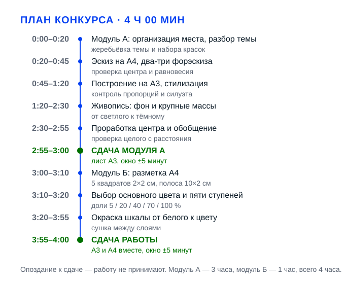
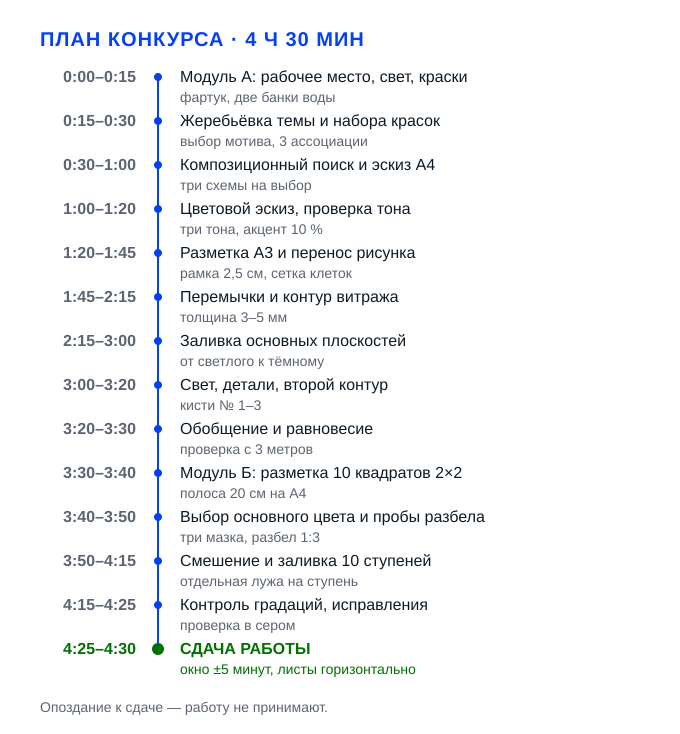
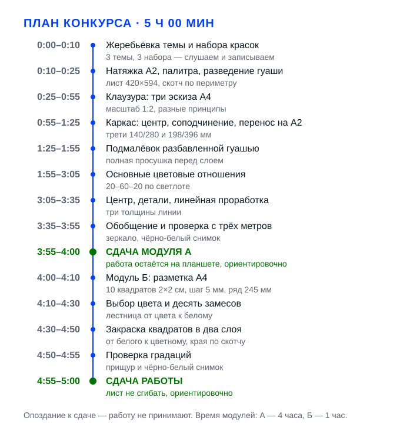

Художник-оформитель (Р,О)
Задания ниже — официальные файлы «Абилимпикс» (источник: abilympics-russia.ru), разложенные по категориям. Решения написаны по тексту задания, регламенту и критериям оценки; в них указано, что именно проверяет эксперт.
Школьник
14–16 лет, базовый уровень заданияВыдержка из официального конкурсного задания: страницы, относящиеся к категории «Школьник» (стр. 7–8 источника).
Пошаговое решение
На этой компетенции школьнику дают два модуля и четыре часа чистого времени: три часа на декоративную композицию по представлению на формате А3 живописными материалами и один час на линейную цветовую шкалу хроматического цвета из пяти квадратов на А4. Оба модуля оцениваются вместе и дают сто баллов, причём семьдесят из них приходятся на большую композицию и только тридцать на шкалу, поэтому именно А3 решает судьбу места. Тема заранее неизвестна: в день соревнований жюри тянет жребий из трёх формулировок — «Праздники моей Родины», «Культура народов России» и «Дружба народов России», — и так же жеребьёвкой выбирается набор из трёх красок для шкалы. Это значит, что готовиться надо не к одной картинке, а к умению за двадцать минут собрать замысел под любую из тем и выстроить его крупными декоративными массами. Ниже разобрано всё по порядку: как организовать место, как искать и утверждать эскиз, как строить и стилизовать форму, как вести живопись слоями и как ровно, без грязи, растянуть один цветовой тон в пять ступеней светлоты.

Задача 1. Организовать рабочее место и разобрать заданиеМодуль А · 70 баллов, модуль Б · 30 баллов
Первые двадцать минут не приносят баллов напрямую, но определяют всё остальное: на неправильно закреплённом листе заливка уходит волной, на скупой палитре не собрать нужный колер, а без разбора формулировки темы композиция получается «про всё сразу». Здесь же снимаются риски — вода на палитре, кисть без номера, лист без полей. Спокойная организация экономит в большой композиции минимум двадцать минут, а это целый этап проработки центра.
Действие 1.1. Занять место и подготовить себя к работе
Шаг 1.1.1
Находим своё место по номеру на столе, ставим стул так, чтобы локоть рабочей руки свободно лежал на столе, а не висел в воздухе: при работе над А3 корпус почти не двигается, и вся амплитуда идёт от плеча и локтя. Надеваем фартук — по конкурсному заданию он обязателен, чёрный или серый, и привозится с собой. Рукава подворачиваем выше локтя, длинные волосы убираем назад, потому что кисть с гуашью проходит у самого лица, когда вы наклоняетесь над листом.
Фартук — не формальность: гуашь на манжете или на колене видна эксперту и читается как небрежность, а в критерии «Законченность, аккуратность выполненной работы» на это отведено два балла. Кроме того, испачканная одежда отвлекает: участник начинает двигаться осторожнее, теряет свободу мазка, и живопись становится вялой, за что снимут баллы по критерию «Уровень владения живописными материалами».
Проверьте три вещи до первого касания бумаги: фартук застёгнут и закрывает грудь и колени, рукава не спускаются к запястью, волосы не падают на лицо при наклоне. Сядьте, положите обе руки на стол и убедитесь, что вам видно весь лист А3 целиком, не приходится тянуться и горбиться.
Самая частая ошибка — сесть боком к листу, «чтобы удобнее было правой рукой»: тогда перспектива собственного взгляда искажается, и к концу работы выясняется, что центр композиции уехал вправо. Вторая — работать без фартука, рассчитывая на аккуратность: первая же заливка фона ставит капли на одежду, и участник тратит время на вытирание.
Эксперт обходит места в первые минуты и отмечает посадку и внешний вид: сгорбленная поза выдаёт человека, который не работал с большим форматом. В середине модуля он возвращается и смотрит, не появились ли пятна краски на одежде и столе: аккуратность входит в два балла за законченность.
Шаг 1.1.2
Освобождаем стол полностью и раскладываем всё по зонам: справа от листа — палитра и банка с водой, слева — краски и тряпка, кисти лежат поперёк, ручками к себе, чтобы брать их не глядя. Воду наливаем в две банки: в одной полощем кисть, вторая остаётся чистой для разведения колера, потому что мутная вода убивает чистоту цвета. Палитру ставим ближе к себе, но не под локоть, иначе её заденет рука при широком мазке.
Зоны нужны не для порядка, а для скорости: в большой композиции на три часа приходится несколько десятков смешений, и каждое лишнее движение к дальнему краю стола — это секунды, которые в конце складываются в получас. Две банки напрямую влияют на критерий «Выразительность живописного решения»: примесь грязной воды делает цвета мутными, и композиция теряет декоративную звонкость.
Проверьте, что ничто не перекрывает лист: палитра не нависает над правым краем, банки стоят на подставке или в стороне от локтя, тряпка лежит там, где её берут мокрой рукой, а не через весь стол. Вода в чистой банке прозрачная, и её видно на просвет.
Типичная ошибка — поставить банку с водой прямо над листом: одно неловкое движение локтя, и вода льётся на работу, а гуашь на мокрой бумаге расползается и не поднимается обратно. Вторая — держать одну банку на всё: вода быстро становится цветной, и белила из неё выходят серыми.
Эксперт смотрит на организацию места как на профессиональную привычку: вода в двух банках, чистая палитра, кисти разложены по номерам. Это видно без вопросов и переносится в оценку владения живописными материалами, где за уровень работы с краской стоит три балла.
Шаг 1.1.3
Проверяем набор: гуашь (по конкурсному заданию — «Мастер Класс»), кисти номеров от первого до двадцатого, из них для А3 нужны как минимум три — широкая флейц восемнадцатого-двадцатого номера для заливки, средняя восьмого-десятого для основных масс и тонкая второго-третьего для контура. Отдельно убеждаемся, что белил в наборе больше всего, потому что в декоративной композиции они расходуются быстрее любой другой краски. Если какой-то краски мало, сразу говорим об этом до старта.
Набор материалов и кистей прописан в конкурсном задании отдельным пунктом, и замена после старта идёт только через эксперта. Проверка заранее — это единственный момент, когда нехватку можно закрыть без потери времени. Кисть не того номера — это не мелочь: тонкой кистью невозможно ровно залить фон, а широкой не сделать контур, и участник теряет баллы по двум критериям сразу.
Разложите кисти по порядку номеров и проверьте пальцами: ворс упругий, не лезет, обойма не шатается, кончик собирается в острие. Краски откройте и посмотрите, не засохли ли они в баночках: сухая гуашь крошится и не разводится до однородности.
Ошибка — взять весь набор, но не проверить, чем именно будете работать, и в середине модуля обнаружить, что единственная тонкая кисть «лижет» и не держит линию. Вторая типичная ошибка — не заметить, что белила на исходе, и к этапу проработки остаться без возможности осветлить тон.
Эксперт оценивает владение инструментами в обоих модулях: в шкале — отдельным критерием о выборе инструментов для чертежа, в композиции — через качество мазка.
Действие 1.2. Подготовить лист и рабочую поверхность
Шаг 1.2.1
Кладём на стол клеёнку или плотную бумагу, сверху — лист А3 вертикально, короткой стороной к себе, как задано в конкурсном задании. Крепим малярным скотчем по четырём сторонам, отступив от края примерно пять миллиметров: полоски идут по периметру, углы проклеиваем с нахлёстом. Если скотча нет, берём кнопки и вкалываем их в углы под углом, а не вертикально, чтобы шляпки не мешали кисти у края.
Гуашь — кроющая краска с большим количеством воды, и некреплённый лист от неё ведёт волной: на месте заливки появляются бугры, а по краю — затеки. Приклеенный лист держит плоскость, и заливка ложится ровным слоем. Это прямо влияет на критерий «Аккуратность нанесения красочного слоя» в шкале и на общее впечатление законченности в композиции.
Проведите ладонью по листу: он не должен «хлопать» и отходить от стола. Посмотрите на свет сбоку — под скотчем не должно быть пузырей и складок. Скотч держится плотно, но снимается без разрыва бумаги, если тянуть вдоль листа, а не вверх.
Частая ошибка — приклеить лист только по верхнему краю: нижний заворачивается, и заливка уходит вниз неровной кромкой. Вторая — использовать широкий канцелярский скотч: он снимает вместе с собой верхний слой бумаги, и на работе остаются рваные полосы, которые уже не исправить.
Эксперт проверяет плоскость листа, когда подходит смотреть композицию: волнистый лист виден сразу, даже под краской, и его замечают раньше, чем качество живописи. Ровно натянутый лист читается как признак того, что участник уже работал с гуашью на большом формате.
Шаг 1.2.2
Определяем рабочую площадь: по конкурсному заданию формат А3 — это двести девяносто семь на четыреста двадцать миллиметров, и внутри него нужно оставить поля. Отмеряем линейкой два сантиметра от каждого края и проводим тонкую карандашную рамку твёрдостью HB без нажима, чтобы линия потом перекрылась краской или легко стёрлась. Работать «от края до края» не нужно: поля дают композиции воздух и защищают её от случайных заливов у кромки.
Рамка — это инструмент композиции: она задаёт границу, внутри которой действуют законы равновесия. Критерий «Уравновешенность центра композиции и свободного поля» стоит пять баллов, и оценивается именно соотношение занятой и пустой части листа. Когда рисунок упирается в самый край, свободного поля нет, и балл снимается механически.
Посмотрите на лист издалека, шага на два назад: рамка должна быть ровной, параллельной краям, одинаковой ширины со всех сторон. Проверьте диагонали — они должны пересечься точно в геометрическом центре листа, и эта точка станет опорой для поиска центра композиции.
Ошибка — вести рамку «на глаз», без линейки: перекос в три-четыре миллиметра заметен, и вся композиция кажется заваленной. Вторая — сделать поля слишком широкими, по пять-шесть сантиметров: рабочая площадь сжимается, и крупные массы перестают читаться.
Эксперт смотрит на рамку как на первый признак чертёжной грамотности: в модуле Б за ровную разметку отвечает отдельный критерий, а в композиции по полям видно, понимает ли участник, что такое граница формата и зачем она нужна.
Шаг 1.2.3
Заранее готовим «страховку»: чистую тряпку или бумажное полотенце, кусок бумаги для пробных мазков того же типа, что и рабочий лист, и палитру с ровной белой поверхностью. На пробнике мы будем проверять каждый сложный колер до того, как коснуться А3. Палитру белую, а не прозрачную: на прозрачной не видно, насколько цвет светлый, и любой колер кажется темнее, чем он есть.
Проба на отдельном листке — это разница между спокойной работой и переделками. Гуашь при высыхании светлеет на один-два тона, и колер, который на палитре кажется верным, на бумаге после высыхания выглядит бледнее. Критерий «Владение основами колористики» в шкале и «Выразительность живописного решения» в композиции оценивают именно предсказуемость цвета.
Нанесите на пробник три-четыре мазка, дайте подсохнуть минуту и сравните с тем, что было на палитре. Если цвет ушёл в холод или стал заметно светлее — запомните поправку и в следующий раз берите краску чуть темнее и теплее.
Ошибка новичка — смешивать прямо на листе: на А3 это даёт грязные потёки, а исправить их почти невозможно, потому что гуашь при перекрытии поднимает нижний слой. Вторая — работать без тряпки и размазывать излишек краски кистью, отчего слой становится рваным.
Эксперт обращает внимание на палитру, когда подходит смотреть работу: чистая палитра с аккуратными лужицами колера и пробный листок рядом читаются как владение материалом, а палитра, залитая грязью, — как спешка, в которой не до цвета.
Действие 1.3. Разобрать формулировку темы и регламент
Шаг 1.3.1
После жеребьёвки записываем выпавшую тему на листке и разбираем её на три части: что является главным объектом, что — средой вокруг него, и какое чувство должно возникнуть у зрителя. Если выпало «Дружба народов России», главным объектом почти наверняка станут люди или их символы в общем хороводе, средой — орнаментальный фон, а чувством — согласие и движение. Такая разбивка сразу отсекает лишние сюжеты и не даёт растечься.
Критерий «Раскрытие темы композиции» — первые пять баллов и самый обидный: их теряют не за плохую живопись, а за то, что тему не видно без объяснений. Эксперт смотрит работу тридцать-сорок секунд и должен узнать тему по силуэтам и атрибутам. Поэтому тему надо переводить в конкретные узнаваемые предметы, а не в общее настроение.
Сформулируйте вслух одной фразой, что изображено: «хоровод в национальных костюмах вокруг костра», «праздничная площадь с флажками и самоваром». Если фраза получается расплывчатой — тема не разобрана, и надо вернуться к списку объектов.
Ошибка — взять тему буквально и попытаться изобразить всё, что с ней связано: получается набор предметов без центра. Вторая, ещё более частая — уйти в пейзаж «просто красивый вид», где тема не читается вовсе, и потерять сразу пять баллов.
Эксперт фиксирует раскрытие темы первым пунктом оценочного листа модуля А, ещё до разговора о живописи. Он смотрит работу с расстояния и проверяет, узнаётся ли тема по силуэтам и атрибутам без подсказки самого участника.
Шаг 1.3.2
Раскладываем время: три часа на модуль А и час на модуль Б, всего четыре. Внутри первых трёх часов держим такой расчёт — двадцать минут на разбор и эскиз, тридцать пять на построение на А3, семьдесят на живопись основными массами, двадцать пять на проработку центра и пятнадцать на обобщение и сдачу. Час модуля Б делим на десять минут разметки, десять на колеровку и тридцать пять на окраску, остаток на сушку и сдачу.
Без письменного расчёта времени композиция почти всегда съедает всё: живопись затягивается, и на обобщение, за которое дают два балла за целостность, не остаётся ни минуты. Критерий «Целостность, законченность работы» проверяется именно по тому, доведены ли все части до одного уровня проработки, а не брошены на полпути.
Запишите контрольные точки на том же листке, где тема, и поглядывайте на часы в зале: к концу первого часа на А3 должны стоять все крупные массы, к концу второго — быть закрыт фон и центр, к концу третьего — работа должна быть готова целиком, а не «в целом». Если к контрольной точке не успеваете, сокращайте детализацию, а не композицию.
Типичная ошибка — начать с самой мелкой детали, например с лиц или узора на сарафане: на неё уходит час, а фон и массы остаются пустыми, и работа выглядит незаконченной. Вторая — оставить обобщение «на потом» и сдавать лист с хаотичными пятнами в углах.
Эксперт видит распределение времени по состоянию листа в контрольные моменты: если к концу второго часа фон не закрыт, работа почти наверняка не будет доведена, и два балла за целостность и законченность уйдут вместе с общим впечатлением.
Задача 2. Собрать эскиз композиции на А4Модуль А · 70 баллов, эскиз влияет на 40 из них
Эскиз по заданию необязателен, но он стоит двадцати минут и экономит час. На маленьком листе А4 видно то, что на А3 не видно до последнего: держится ли центр, не сползает ли масса в угол, читается ли тема по силуэтам. Здесь же решается, из скольких крупных форм будет состоять работа — из трёх, пяти или семи, — и это решение потом не меняется, потому что переделывать построение на большом формате уже нет времени.
Действие 2.1. Набрать изобразительный материал по теме
Шаг 2.1.1
Берём лист А4 и в течение пяти минут выписываем и зарисовываем всё, что связано с выпавшей темой: костюмы, орнаменты, праздничные предметы, архитектурные детали, фигуры в движении. Рисуем некрасиво и быстро, размером с ноготь, по десять-пятнадцать мотивов на листе, без всякой штриховки и светотени. Цель — не картинка, а запас форм, из которого потом собирается композиция.
Декоративная композиция по представлению строится из того, что участник держит в голове, а не из натуры. Чем больше мотивов перебрано, тем свободнее выбор и тем меньше риск скатиться в первый пришедший образ. Критерий «Отсутствие подражательности стандартам массовой культуры» на пять баллов как раз про это: шаблонный образ приходит первым, а собственный — только после перебора.
К концу пяти минут на листе должно быть не меньше десяти разных мотивов, и минимум три из них — не очевидные, а найденные вами. Проверьте, что среди них есть один сильный силуэт: фигура, предмет или растение, которое узнаётся по контуру, даже если закрасить его одним цветом.
Ошибка — сразу начать рисовать «ту самую» картинку, которая пришла в голову: обычно это открытка, увиденная когда-то. Вторая — рисовать мотивы слишком крупно и подробно, на это уходит весь запас времени, а композиционного решения так и нет.
Эксперт смотрит эскизные листы, если они лежат рядом с работой: по ним видно, искал ли участник форму или взял первое готовое решение. Пять баллов за отсутствие подражательности массовой культуре ставятся именно за самостоятельность образа.
Шаг 2.1.2
Выбираем три мотива, которые сильнее всего читаются по силуэту, и проверяем их на совместимость: они должны отличаться размером и характером, но принадлежать одной теме. Крупная фигура в рост, средний предмет и мелкий повторяющийся элемент — это готовая иерархия, из которой складывается сомасштабность. Если все три мотива примерно одного размера, композиция получится плоской, как обои.
Критерий «Сомасштабность элементов композиции» стоит пять баллов и проверяется просто: соотношение размеров внутри работы должно читаться как один к двум и один к трём. Три размера — это то, что глаз воспринимает как порядок; четыре и больше начинают спорить между собой, и работа рассыпается.
Разложите выбранные мотивы на чистом листке в трёх размерах и посмотрите, различаются ли они на глаз без линейки. Если разница меньше чем в полтора раза, увеличьте крупный или уменьшите мелкий: шаг должен быть ощутимым.
Частая ошибка — брать мотивы, которые хороши сами по себе, но не связаны: девушка в кокошнике, космический спутник и берёза вместе не складываются ни в одну тему. Вторая — сделать все элементы одинаковыми по весу, и тогда центру нечем выделиться.
Эксперт проверяет сомасштабность с расстояния двух метров: элементы должны различаться по величине на глаз, без линейки. Если все они одного размера, пять баллов за сомасштабность не ставятся, даже когда работа в целом приятна.
Шаг 2.1.3
Прикидываем цветовой строй до всякой живописи: выбираем, какая группа цветов будет главной, а какая — поддержкой. Работаем тремя отношениями: тёплое против холодного, светлое против тёмного и насыщенное против приглушённого. Если тема праздничная, основа чаще тёплая и звонкая, а холодные цвета идут малыми вкраплениями, чтобы дать контраст, а не спор.
Критерий «Грамотность использования средств гармонизации композиции» на пять баллов оценивает именно это: подчинены ли цвета друг другу или каждый тянет одеяло на себя. Кроме того, в модуле Б выпавший набор красок задаёт логику цветовых отношений, и тренировка на эскизе помогает потом быстро собрать шкалу без грязи.
Сделайте три-четыре цветовых наброска размером со спичечный коробок: по одному мазку на каждую группу. Отойдите и посмотрите, какой из них «держит» тему сильнее всего. Обычно это тот, где есть одно яркое пятно и два-три приглушённых.
Ошибка — набрать много одинаково ярких цветов: работа начинает «кричать», и глаз не находит, за что зацепиться, из-за чего страдает критерий о наличии центра. Вторая — сделать всё в одной тональности, и тогда композиция выглядит вялой и плоской.
Эксперт оценивает колористическую целостность в критерии выразительности живописного решения: смотрит, есть ли главенствующая группа цветов и подчинены ли ей остальные. Работа, где каждый элемент своего цвета, читается как набор, а не как композиция.
Действие 2.2. Сделать два-три форэскиза пятнами
Шаг 2.2.1
На листе А4 чертим два-три прямоугольника пропорций А3 — то есть примерно семь на десять сантиметров, — и в каждом намечаем композицию пятнами, без контуров и деталей. Пятно ставим плоской кистью или кусочком губки, размером от сантиметра и больше. Работаем быстро, по десять минут на вариант: задача — проверить равновесие масс, а не нарисовать красиво.
Пятно — это честная проверка: контур умеет обманывать, а масса нет. Если в пятновом эскизе композиция валится влево, она будет валиться и на А3, сколько бы деталей вы ни нарисовали. Критерий «Уравновешенность и гармоничность композиции» на пять баллов проверяется именно на таком уровне обобщения.
Прищурьтесь и посмотрите на эскиз: должны читаться три-четыре крупных пятна разной величины и одно самое активное. Если при прищуре всё сливается в серое поле — разница масс слишком мала, надо усилить главное пятно.
Ошибка — рисовать форэскиз линиями и мелкими деталями, как обычный рисунок: тогда проверки равновесия не происходит, и на большом формате выясняется, что массы несоразмерны. Вторая — сделать один вариант и остановиться на нём из экономии времени.
Эксперт редко видит форэскизы, но результат их отсутствия очевиден: работа, начатая без проверки масс, почти всегда с перевесом в одну сторону, и пять баллов за уравновешенность теряются без возможности что-то исправить на финише.
Шаг 2.2.2
В каждом варианте ставим композиционный центр и проверяем его положение: он не должен стоять ровно в геометрической середине листа. Самое устойчивое место — на пересечении линий, делящих формат на трети, чаще всего в верхней или правой трети. Центр выделяем тремя способами одновременно: размером, насыщенностью цвета и степенью проработки, потому что одного признака обычно мало.
Критерий «Наличие центра композиции» — пять баллов, и он проверяется первым взглядом: глаз должен находить главное в течение секунды. Центр, поставленный точно в середину, читается как плакат или мишень и почти всегда проигрывает по оригинальности, за которую тоже дают пять баллов.
Закройте центр ладонью: если композиция рассыпается и теряет смысл — центр настоящий. Если ничего не меняется — это не центр, а просто крупное пятно. Проверьте, что вокруг центра есть воздух, а не плотная застройка.
Ошибка — сделать центром самое большое пятно, но не дать ему контраста: тогда оно читается как фон. Вторая — поставить центр в угол, и вся композиция начинает «съезжать» в этот угол, за что снимут и за равновесие.
Эксперт ищет центр первым взглядом и отмечает, выделен ли он цветом, размером и проработкой одновременно. Если для поиска центра нужно вглядываться и угадывать, пять баллов за наличие центра композиции снижаются.
Шаг 2.2.3
Проверяем каждый вариант на три вещи: тему, равновесие и целостность силуэта. Тему проверяем вопросом «что здесь происходит» — если ответ не совпадает с формулировкой задания, вариант отбрасываем. Равновесие проверяем, отойдя на два метра: масса слева и справа должна быть сопоставима, но не одинаковой. Целостность — при прищуре работа должна читаться как одно пятно с акцентом.
Три проверки закрывают сразу четыре критерия по пять баллов: раскрытие темы, уравновешенность, наличие центра и целостность. Дешевле отбросить вариант на эскизе, чем обнаружить провал через два часа живописи, когда переделка уже невозможна физически — гуашь не снять до бумаги.
Выберите вариант, который прошёл все три проверки, и подпишите его карандашом на обороте: «основной». Остальные не выбрасывайте, они пригодятся, если в процессе выяснится, что композиция не держит формат.
Ошибка — выбирать вариант по принципу «этот красивее»: красота деталей не спасает развалившуюся композицию. Вторая — оставить два равных варианта и метаться между ними в процессе, теряя время на переделку построения.
Эксперт не видит процесса выбора, но видит его результат: работа либо держит формат, либо нет. Проверка на трёх уровнях — тема, равновесие, силуэт — это то, что он делает за вас, только позже и уже с баллами в оценочном листе.
Действие 2.3. Уточнить эскиз и перенести пропорции
Шаг 2.3.1
На выбранном варианте уточняем силуэты: обводим границы пятен, убираем случайные мелкие формы, оставляем три-пять крупных масс и один-два акцента. Каждую массу проверяем на узнаваемость: если после заливки одним цветом она перестаёт читаться, форму надо упростить до характерного признака — например, оставить у фигуры только линию плеч, головной убор и подол.
Здесь начинается стилизация, за которую в модуле А дают пять баллов. Стилизация — это не «нарисовать попроще», а сохранить характерное и убрать случайное. Крупные массы на формате А3 работают сильнее мелкой детализации, и критерий «Передача характерных особенностей объектов» проверяет, узнаются ли предметы по этим признакам.
Проверьте каждую массу отдельно: закройте остальные листом бумаги и посмотрите, понятно ли, что это. Если нет — добавьте один характерный признак, но только один, иначе масса снова раздробится. Отойдите на два метра: силуэты должны читаться даже при прищуре.
Ошибка — тащить в большой формат все мелкие детали из эскиза: на А3 они превращаются в грязь и «шум». Вторая — упростить до бесформенного пятна, потеряв характерный признак, и тогда снимут баллы за передачу особенностей объектов.
Эксперт оценивает стилизацию, сравнивая форму с реальным предметом: узнаётся ли он и при этом лишён ли натуралистических подробностей. Пять баллов ставятся за сохранённый характерный признак, а не за простое упрощение формы.
Шаг 2.3.2
Строим на эскизе осевые линии и проверяем геометрию: горизонтали, вертикали, диагонали и окружности должны быть согласованы между собой. Если в композиции есть фигуры, намечаем линию горизонта и уровень глаз, чтобы все они стояли на одной плоскости. Затем пересчитываем эскиз в размер А3 через коэффициент: если эскиз семь на десять сантиметров, коэффициент — примерно четыре и две десятых.
Декоративная композиция всё равно опирается на конструкцию: без общей линии горизонта фигуры «висят» в воздухе, а без согласованных осей работа выглядит собранной из разных картинок. Критерий «Степень линейной проработанности декоративной композиции» на пять баллов оценивает именно качество построения и линий.
Проверьте пересчёт по трём контрольным точкам: верх главной массы, её центр и низ. Каждая точка должна попадать в то же относительное место формата, что и на эскизе. Если расхождение больше сантиметра — пересчитайте коэффициент.
Ошибка — переносить «на глаз», без коэффициента: на большом формате ошибки умножаются, и центр уезжает за пределы трети. Вторая — не намечать горизонт, и тогда предметы в разных частях работы стоят на разных уровнях.
Эксперт смотрит на построение под углом к листу, чтобы увидеть перекосы осей: сбоку сразу заметно, стоят ли фигуры на одной плоскости. За линейную проработанность декоративной композиции в модуле А отведено пять баллов.
Шаг 2.3.3
Переносим контур эскиза на А3 лёгкими линиями: сначала ставим крайние точки каждой массы, потом обводим форму целиком. Карандаш держим почти плашмя, нажим минимальный, чтобы линии потом перекрылись краской и не проступали. Строим сразу все массы, а не по очереди: пока не поставлены все, нельзя проверить равновесие на большом формате. Работаем стоя, чтобы видеть лист целиком.
Порядок «сначала всё, потом подробно» — единственный способ не потерять целое. Если начать прорабатывать одну массу до конца, она «перевесит» остальные, и композиция развалится, хотя на эскизе всё было верно. Пять баллов за уравновешенность и пять за сомасштабность зависят именно от этого этапа.
Отойдите на два-три метра и посмотрите на линии: массы должны читаться и располагаться там же, где на эскизе. Проверьте, что от главной массы до края формата остаётся не меньше двух-трёх сантиметров, иначе композиция упрётся в рамку и потеряет воздух.
Ошибка — давить на карандаш: тёмная линия потом просвечивает через гуашь и разрушает чистоту цвета, а стереть её без повреждения бумаги уже нельзя. Вторая — переносить эскиз по клеточкам с потерей ритма, из-за чего композиция становится механической.
Эксперт оценивает точность переноса и чистоту подготовительного слоя, когда смотрит работу вблизи: тёмные карандашные линии, просвечивающие через краску, читаются как небрежность и мешают восприятию цвета.
Задача 3. Построить и стилизовать композицию на А3Модуль А · 70 баллов, построение влияет на 25 из них
Построение — это каркас, на который потом ложится живопись. Здесь решается, где стоит центр, как распределены массы, насколько элементы соразмерны друг другу и читается ли силуэт. Пять критериев модуля А — наличие центра, уравновешенность, сомасштабность, линейная проработанность и передача характерных особенностей — проверяются именно на этом слое, и краска их уже не исправит: гуашь кроет, но не лечит развалившуюся конструкцию.
Действие 3.1. Разметить формат и поставить композиционный центр
Шаг 3.1.1
Делим рабочую площадь на трети: откладываем по верхней и нижней стороне рамки трети ширины, по боковым — трети высоты, и соединяем точки тонкими линиями без нажима. Получается сетка из девяти частей, четыре пересечения которой и есть места для центра. Выбираем одно из них — чаще верхнее или боковое, — и ставим там точку центра, обведя её еле заметным кружком диаметром около сантиметра.
Сетка третей — это инструмент, а не украшение: она сразу показывает, где формат «держит» изображение, а где оно проваливается. Критерий «Наличие центра композиции» стоит пять баллов, и эксперт находит центр за секунду — по пересечению смысловых линий. Если центр случайно оказался в геометрической середине, работа читается как плакат и теряет оригинальность.
Проверьте положение точки: от неё до ближайшего края должно быть не меньше четверти ширины формата. Прищурьтесь и посмотрите на лист — глаз сам тянется к поставленной точке, и если тянется не туда, значит центр выбран неудачно.
Ошибка — ставить центр точно по центру листа: тогда все массы распределяются симметрично, и композиция выглядит статичной, а за оригинальность композиционного решения снимают баллы. Вторая — не размечать сетку вовсе и ставить центр «на глаз», промахиваясь на пять-семь сантиметров.
Эксперт проверяет положение центра, прикладывая к работе условную сетку третей, и отмечает, совпадает ли смысловой акцент с активной зоной формата. Отдельно он смотрит, не стоит ли центр ровно в середине листа.
Шаг 3.1.2
От центра распределяем массы: главная занимает примерно треть площади, две-три второстепенные — по десятой-пятнадцатой части, остальное остаётся свободным полем. Намечаем границы масс лёгкими линиями, двигаясь от центра к краям, и сразу ставим «противовес»: если главная масса ушла влево и вверх, в правом нижнем углу должен появиться небольшой, но активный элемент — пятно, фигура или деталь орнамента.
Равновесие в декоративной композиции строится не симметрией, а весом: крупное светлое пятно уравновешивается мелким, но насыщенным. Критерий «Уравновешенность центра композиции и свободного поля» на пять баллов и «Уравновешенность и гармоничность композиции» ещё на пять — это два разных балла за одно и то же свойство, и терять их вдвойне обидно.
Отойдите на два метра и прищурьтесь: работа не должна «падать» ни в одну сторону. Проверьте свободное поле — его должно быть видно, и оно не должно быть пустым провалом в одном углу. Хороший признак: если перевернуть лист вверх ногами, композиция всё равно держится.
Ошибка — заполнить лист равномерно, без свободного поля: тогда центр теряется, а работа выглядит как ковёр. Вторая — оставить большой пустой угол, не поставив туда противовес, и композиция визуально опрокидывается в противоположную сторону.
Эксперт оценивает равновесие, отходя от работы на расстояние и наклоняя голову; перекос в любую сторону он фиксирует сразу. Перекос в любую сторону читается им как ошибка равновесия, и балл снижается сразу за два критерия.
Шаг 3.1.3
Делаем контрольный просмотр построения: уменьшаем лист, сфотографировав его на телефон и отойдя на три шага, или посмотрев на него в зеркальце. На уменьшенном изображении сразу видны провалы, которых не замечаешь в натуральную величину. Если что-то не читается на маленьком снимке, на большом формате это тоже не сработает. Снимок делаем строго сверху, без наклона.
Приём с уменьшением — самый быстрый способ проверить целостность: глаз воспринимает мелкое изображение целиком, без разглядывания деталей. Критерий «Выразительность композиционного решения и его оригинальность» на пять баллов оценивает именно общий рисунок пятен, а не подробности.
На снимке должны читаться: главная масса, центр, два-три второстепенных элемента и свободное поле. Если изображение рассыпается на куски или, наоборот, слипается в одно пятно, правьте построение сейчас, пока оно в карандаше.
Ошибка — пропустить этот шаг «потому что и так видно»: в натуральную величину мозг достраивает то, чего нет, и провал обнаруживается только на сдаче. Вторая — фотографировать вблизи, с наклоном: перспектива искажает пропорции, и проверка становится бессмысленной.
Эксперт смотрит работу именно так — целиком и с расстояния, поэтому ваша проверка на снимке совпадает с его взглядом. Ваша проверка на снимке и его взгляд с расстояния — это одна и та же операция.
Действие 3.2. Построить крупные массы
Шаг 3.2.1
Начинаем с главной массы. Если это фигура, строим её через осевую линию: проводим вертикаль через центр, отмечаем высоту головы, затем откладываем её вниз — взрослая фигура укладывается примерно в семь с половиной голов, фигура в национальном костюме с головным убором читается как шесть-семь. Плечи по ширине примерно две высоты головы, бёдра чуть уже плеч. Строим обрубовкой, без мелких деталей.
Пропорции — это то, по чему эксперт отличает грамотную работу от интуитивной. Критерий «Передача характерных особенностей объектов» на пять баллов и «Сомасштабность элементов» ещё на пять опираются на правильные отношения: если голова слишком велика, фигура читается как ребёнок, и вся сцена меняет смысл.
Проверьте фигуру тремя мерками: высота головы, ширина плеч и длина ноги от бедра до стопы. Отношение головы к общей высоте должно быть примерно один к семи, плечи — около двух голов, нога — около половины роста. Отойдите и посмотрите на силуэт: он должен стоять устойчиво.
Ошибка — рисовать сразу лицо и костюм, не построив общую высоту: тогда к концу выясняется, что фигура не помещается в формат или у неё непропорционально длинные руки. Вторая — строить фигуру по линейке, отчего она становится деревянной и теряет живое движение.
Эксперт оценивает пропорции и постановку фигуры в критериях передачи характерных особенностей и линейной проработанности. Если фигура «висит» над линией опоры, он отмечает это как ошибку построения.
Шаг 3.2.2
Переходим к второстепенным элементам и сразу подчиняем их центру: они должны быть меньше главной массы в полтора-два раза и не перекрывать её силуэт. Строим их лёгкими линиями, намечая ритм повторов: если элементов несколько, расстояние между ними должно меняться — сгущаться к центру и разрежаться к краям. Ритм задаём сознательно, а не «как получится».
Взаимосвязь и соподчинение второстепенных элементов композиционному центру — отдельный критерий на пять баллов. Он проверяется просто: если убрать центр, второстепенные элементы должны «смотреть» в пустое место, а не жить своей жизнью. Ритм — средство гармонизации, за грамотное использование которого дают ещё пять баллов.
Проверьте расстояние между повторяющимися элементами: оно не должно быть одинаковым по всему листу. Прищурьтесь — повторяющиеся формы должны читаться как движение, а не как сетка. Убедитесь, что ни один второстепенный элемент не пересекает контур главной массы.
Ошибка — нарисовать все элементы одного размера и на равных расстояниях: получается орнамент, а не композиция, и центр теряет главенство. Вторая — перекрыть главную массу второстепенной, из-за чего силуэт центра рвётся.
Эксперт проверяет соподчинение, закрывая центр рукой: второстепенные элементы должны указывать на него направлением, размером или цветом. Направление движения второстепенных элементов к центру он проверяет, отойдя на два метра.
Шаг 3.2.3
Строим фон и среду: делим плоскость на две-три зоны, а не заливаем её целиком. Верхняя зона обычно светлее и спокойнее, нижняя плотнее — так работает опора. Если в теме есть орнамент, намечаем его полосами по краю или по диагонали, но не заполняем орнаментом всю площадь: он должен обрамлять, а не спорить с центром. Верхнюю зону делаем на полтона светлее нижней.
Фон — это то, что делает работу декоративной: он держит плоскость и не даёт изображению провалиться в иллюзорное пространство. Критерий «Стилизация элементов композиции» на пять баллов во многом зависит от того, насколько фон обобщён: натуралистическое небо с облаками сразу превращает декоративную композицию в пейзаж.
Проверьте, читается ли фон как плоскость: при прищуре он должен распадаться на две-три крупные зоны, а не на множество мелких. Убедитесь, что орнамент не подходит вплотную к центру и не «съедает» его контур.
Ошибка — заполнить фон мелкими деталями «чтобы было интереснее»: центр теряется, и работа начинает рябить. Вторая — оставить фон совершенно пустым, и тогда композиция выглядит незавершённой, а два балла за целостность уходят.
Эксперт смотрит, работает ли фон на центр или спорит с ним; при споре теряются баллы за гармонизацию и стилизацию одновременно. Если фон спорит с центром по насыщенности, баллы теряются в двух критериях сразу.
Действие 3.3. Стилизовать форму и проработать линию
Шаг 3.3.1
Обобщаем каждую массу до трёх-пяти крупных форм: убираем мелкие складки, пуговицы, лишние листья, оставляя один-два характерных признака. Прямые участки делаем чуть прямее, округлые — чуть круглее, то есть сознательно геометризуем форму. Смотрим, чтобы все массы были обобщены в одной степени: нельзя оставить одну деталь натуралистичной, а остальные — плоскими.
Стилизация — это единый язык всей работы, и её отсутствие видно сразу: работа выглядит как коллаж из разных рисунков. За стилизацию элементов в модуле А дают пять баллов, а заодно она подтягивает критерий оригинальности, потому что обобщённая форма всегда индивидуальнее скопированной.
Прищурьтесь и посмотрите на массы: они должны читаться как геометрические фигуры — трапеции, овалы, полосы. Проверьте, что степень обобщения одинакова: если одна форма прорисована до морщин, а соседняя — одним пятном, работу надо выравнивать.
Ошибка — стилизовать только главную массу, а фон и второй план оставить натуралистичными: возникает разрыв, и эксперт снижает балл за стилизацию. Вторая — обобщить до неузнаваемости, потеряв характерный признак предмета.
Эксперт оценивает стилизацию по единству приёма: все элементы работы должны быть обобщены одинаково. Работа, где одна форма обобщена, а соседняя выписана до морщин, читается как коллаж из разных рисунков.
Шаг 3.3.2
Намечаем контур: тонкой кистью второго-третьего номера или мягким карандашом проходим по границам масс, но не одинаково — у главной массы линия плотнее и темнее, у второстепенных тоньше и светлее, у фона может отсутствовать вовсе. Толщина линии работает как ещё одно средство выделения центра, и пользоваться им надо сознательно. Контур ведём по сухой краске, иначе линия расплывается.
Степень линейной проработанности декоративной композиции — отдельный критерий на пять баллов. Он про то, что линия в декоративной работе несёт смысл: она разделяет плоскости, держит силуэт и задаёт ритм. Одинаковый контур по всему листу превращает работу в раскраску.
Проверьте контур на трёх участках: у центра, на второстепенных элементах и на фоне. Разница в толщине должна быть заметна, но не бросаться в глаза. Линия не должна «дрожать» — ведите её от плеча, длинным движением, а не короткими штришками.
Ошибка — обвести всё чёрным одинаковой толщины: работа становится плоской и жёсткой, а центр перестаёт выделяться. Вторая — вести контур короткими штрихами, отчего линия выглядит рваной и неуверенной.
Эксперт смотрит линию вблизи и с расстояния: она должна читаться как приём, а не как след небрежности. Рваная линия из коротких штрихов читается им как неуверенность руки, а не как приём.
Шаг 3.3.3
Проверяем построение целиком перед живописью: проходим по всем массам и стираем лишние линии, оставляя только те, что нужны для работы. Смотрим, нет ли двойных контуров, несовпадающих осей и случайных пересечений. С этого момента конструкция считается утверждённой, и менять её можно только в мелочах. Проверяем лист под углом к свету, чтобы увидеть все оставшиеся линии.
Чистый подготовительный слой — условие чистой живописи: каждая лишняя линия потом либо просвечивает через краску, либо заставляет класть её толще, а гуашь в толстом слое трескается и отслаивается. Два балла за аккуратность и целостность напрямую связаны с этим этапом.
Посмотрите на лист под углом к свету: карандашных линий должно быть ровно столько, сколько нужно для ориентира. Проверьте, что все массы замкнуты и нигде не осталось незакрытых контуров, которые потом придётся достраивать по мокрой краске.
Ошибка — оставить на листе всю черновую разметку, включая сетку третей и осевые: они проступают через светлые заливки и разрушают чистоту цвета. Вторая — стирать резиной по уже натянутому листу слишком сильно, отчего на бумаге появляются «катыши» и ворс.
Эксперт оценивает чистоту работы, когда смотрит её вблизи: подготовительный слой виден под краской. Особенно внимательно он смотрит на светлые участки, где графит виден сильнее всего.
Задача 4. Вести живопись и довести композицию до целогоМодуль А · до 70 баллов, живопись решает 22 из них
Живопись в этом модуле идёт слоями и строго от общего к частному: сначала фон и крупные массы, потом второстепенные элементы, только в конце центр и акценты. Гуашь кроет, но плохо прощает ошибки: третий слой поднимает нижний и мутнеет, поэтому каждый слой надо класть сразу в нужный тон и в нужном количестве. Здесь же набираются баллы за выразительность живописного решения, колористику и владение материалом, и здесь же теряются, если работа остаётся недокрашенной.
Действие 4.1. Сколеровать краски и проверить их на пробнике
Шаг 4.1.1
Начинаем с самого светлого колера: в чистую лунку палитры кладём белила и добавляем основной цвет буквально на кончике кисти, потому что осветлять готовый тёмный тон обратно почти невозможно. Каждую следующую ступень делаем темнее предыдущей на один шаг, а не «на глаз»: так весь набор колеров выстраивается в стройную лестницу, и работа потом не рассыпается по тону.
Порядок «от светлого к тёмному» — это правило технологии гуаши, а не вкусовщина. Критерий «Владение технологией смешения цветов» в шкале и «Владение основами колористики» в композиции оценивают именно предсказуемость: колер должен получаться с первого-второго замеса, а не с пятого, когда краски уже переведены.
Проверьте каждый колер мазком на пробнике рядом с соседним: разница между ступенями должна быть видна, но не должна превращаться в скачок. Если два колера на бумаге почти не отличаются, промежуточный тон надо переделать сразу, пока он ещё на палитре.
Ошибка — смешивать всё в одной лунке, не промывая палитру: цвета мутнеют, а на выходе получается серо-коричневая масса, которую уже ничем не оживить. Вторая — брать основной цвет «на глаз» большой кистью, отчего первая же ступень выходит слишком тёмной.
Эксперт смотрит на палитру и на количество оттенков в работе: богатство колера при чистоте цвета читается как владение материалом. Богатство оттенков при чистоте цвета он отмечает как отдельное достоинство работы.
Шаг 4.1.2
Проверяем колер на пробнике и ждём высыхания: гуашь на бумаге светлеет на один-два тона, поэтому мазок, который на палитре кажется верным, на листе может оказаться бледным. Если после высыхания тон ушёл, добавляем в лунку немного краски и снова пробуем. Только после этого набираем колер на рабочую кисть. Пробный мазок кладём рядом с работой, на обрезке той же бумаги.
Проба занимает минуту и спасает час переделок: исправлять тон на большом формате приходится по всей площади, а второй слой гуаши поднимает первый и делает цвет глуше. Критерий «Аккуратность нанесения красочного слоя» в шкале и «Выразительность живописного решения» в композиции одинаково чувствительны к таким промахам.
Сравните высохший мазок с тем, что было на палитре: разница должна быть предсказуемой. Хороший приём — держать рядом три высохших мазка основных цветов и сверяться с ними, а не с баночками: в баночке краска всегда темнее и насыщеннее, чем в работе.
Ошибка — судить о цвете по мокрому мазку: работа высыхает уже на сдаче, и оказывается, что весь передний план ушёл в бледность. Вторая — проверять колер на другой бумаге: плотная и тонкая бумага дают разный результат, пробовать надо на обрезке того же типа.
Эксперт оценивает работу уже высохшей, поэтому именно высохший тон и есть итог; неумение предсказать его видно по вялости всей живописи. Вялость живописи, то есть работу «в один тон», он читает как неумение предсказывать цвет.
Шаг 4.1.3
Набираем колер с запасом: на крупную массу нужно столько краски, чтобы хватило закрыть её целиком без второго замеса. Гуашь сохнет на палитре за десять-пятнадцать минут и меняет тон, а повторить смесь «один в один» практически невозможно. Поэтому сначала оцениваем площадь, потом мешаем, и только потом начинаем класть краску. Лунку выбираем широкую, чтобы краска не высыхала по краям.
Разница тонов на стыке двух замесов — самая заметная ошибка в декоративной композиции: на ровном фоне она читается как грязное пятно. Критерий «Целостность, законченность работы» на два балла и «Уравновешенность и гармоничность композиции» на пять напрямую зависят от того, ровно ли залита плоскость.
Проверьте количество: краски в лунке должно быть столько, чтобы её хватило примерно на полторы площади массы. Если лунка заполнена на треть и меньше, добавьте сразу — потом будет поздно. Палитру с готовым колером держите в тени, а не на солнце, иначе он подсохнет раньше времени.
Ошибка — мешать понемногу и подмешивать «по ходу», из-за чего на массе появляются полосы разного тона. Вторая — разводить колер водой до жидкого состояния, чтобы хватило на площадь: жидкая гуашь течёт, даёт потёки и не кроет.
Эксперт видит ровность заливки сразу: полосы и стыки читаются как неаккуратность, даже если цвет в целом верный. Стыки двух замесов на ровной плоскости он замечает раньше, чем саму живопись.
Шаг 4.1.4
Держим в работе несколько кистей одновременно: широкая флейц для заливки, средняя для масс, тонкая для контура и акцентов. Между цветами кисть тщательно промываем в первой банке, отжимаем о край и только потом берём краску. Для светлых тонов держим отдельную кисть, потому что даже промытая кисть с тёмным пигментом в основании волоса портит белила. Кисти кладём ворсом вверх, а не в банку.
Чистота инструмента — это чистота цвета: пигмент, оставшийся в пятке кисти, вымывается постепенно и подмешивается в колер целыми мазками. Критерий «Правильный выбор инструментов для нанесения гуаши на поверхность листа» и «Аккуратность нанесения красочного слоя» в модуле Б стоят по два балла, и там это видно на маленьких квадратах особенно ясно.
Проверьте кисть перед светлым колером: проведите ею по чистой части палитры — след должен быть прозрачным, без цветного оттенка. Ворс должен собираться в острие, а не расходиться веером, иначе линия контура получится рваной.
Ошибка — работать одной кистью на все цвета, промывая её «быстро»: в итоге в светлых местах появляется грязь, а в тёмных — седые разводы. Вторая — оставлять кисть в банке с водой ворсом вниз: она деформируется и теряет форму.
Эксперт обращает внимание на то, как участник держит кисть и как часто её промывает; по этому видно, работал ли он с гуашью раньше. По тому, как участник промывает кисть, видно, работал ли он с гуашью раньше.
Действие 4.2. Прописать фон и крупные массы
Шаг 4.2.1
Фон заливаем широкой кистью, начиная от верхнего края рамки и ведя мазки в одном направлении, без возвратов по мокрому. Работаем полосами шириной в кисть, каждую следующую полосу кладём встык к предыдущей, слегка перекрывая её, чтобы не оставить белых просветов. Дойдя до границы крупной массы, обходим её по контуру и продолжаем в соседней зоне. Кисть держим под небольшим наклоном к плоскости листа.
Фон — самая большая площадь работы, и он задаёт тон всему остальному: на фоне сравнивают насыщенность и светлоту остальных масс. Критерий «Выразительность живописного решения композиции» на пять баллов опирается на то, насколько фон спокоен и при этом не мёртв — в нём должен быть едва заметный градиент или движение тона.
Посмотрите на фон под углом к свету: не должно быть полос, потёков и просветов бумаги. Проведите ладонью над поверхностью — краска должна лежать ровным слоем толщиной примерно с бумагу, без бугров. Если слой где-то тоньше и бумага просвечивает, добавьте тон по сухому.
Ошибка — водить кистью туда-сюда по мокрому слою: гуашь поднимается и мешается сама с собой, образуя грязные разводы. Вторая — заливать фон в последнюю очередь, когда все элементы уже прописаны: края получаются рваными, а элементы приходится обходить кистью.
Эксперт оценивает фон первым делом, потому что он занимает больше всего места: ровная заливка читается как уверенность руки. Полосы и просветы бумаги на фоне он замечает с расстояния в несколько шагов.
Шаг 4.2.2
Главную массу пишем в два приёма: сначала подклад — самый светлый тон того же цветового строя, которым закрываем всю площадь, затем по просохшему подкладу основной тон, оставляя светлые места нетронутыми. Так получается объём без растушёвки и без грязи. Плотные тёмные акценты ставим в самом конце, по полностью сухому слою. Тёмное кладём только по полностью просохшему слою.
Светлотная лестница внутри массы — это то, что делает форму читаемой на плоскости. Критерий «Степень линейной проработанности» и «Передача характерных особенностей объектов» опираются на то, видно ли, из чего состоит предмет. Гуашь не любит многослойность, поэтому два слоя — рабочий максимум, третий почти всегда даёт глухой цвет.
Проверьте массу при прищуре: она должна читаться как объёмная форма, а не как плоское пятно. Светлых участков должно оставаться примерно треть, средних — половина, тёмных — не больше пятой части. Если тёмного больше, форма «провалится» в чёрное пятно.
Ошибка — писать сразу в полную силу, без подклада: тогда не остаётся светлых промежутков и форму приходится осветлять белилами, что даёт мутный, «меловой» цвет. Вторая — класть тёмное по мокрому светлому, отчего края расплываются.
Эксперт оценивает живопись главной массы в критерии владения живописными материалами, где за уровень работы стоит три балла. Мутный, «меловой» цвет в тенях он читает как признак лишних слоёв.
Шаг 4.2.3
Переходим к второстепенным элементам, двигаясь от крупных к мелким: сначала средние формы, потом мелкие акценты. Каждому элементу даём свой тон, но насыщенность держим ниже, чем у центра, иначе второстепенные элементы начнут спорить с главным. Границы между массами ведём по контуру, не заходя на соседнюю плоскость. Каждому элементу даём свой колер, но одной цветовой семьи.
Подчинение по цвету — половина композиционной грамоты: центр должен быть самым активным пятном. Критерий «Взаимосвязь и соподчинение второстепенных элементов композиции и композиционного центра» на пять баллов проверяется именно по насыщенности: если мелкий элемент такой же яркий, как главный, взгляд уходит к нему.
Отойдите на два метра и прищурьтесь: главная масса должна оставаться самым заметным пятном. Проверьте, что ни один второстепенный элемент не выходит за пределы своей зоны и не «наезжает» на центр. Стыки между массами должны быть чистыми, без смазанных переходов.
Ошибка — писать все элементы одинаково ярко, «чтобы работа была нарядной»: внимание распыляется, и центр теряется. Вторая — оставлять белые просветы бумаги между массами, отчего работа выглядит недоделанной.
Эксперт проверяет соподчинение по цвету, отходя от работы: иерархия пятен должна читаться с расстояния. Иерархия пятен по насыщенности должна читаться с расстояния, а не вблизи.
Шаг 4.2.4
Проверяем живопись на целостность до перехода к деталям: уменьшаем работу фотографией, смотрим на соотношение пятен и на общий тон. Если какая-то масса выбивается по светлоте или насыщенности, правим её сейчас, пока слой не закрыт деталями. После этой проверки общая схема считается принятой. Смотрим на снимке соотношение самого светлого, самого тёмного и самого насыщенного пятна.
Именно на этом этапе видно, держится ли колорит: три-четыре крупных пятна должны образовывать гармонию, а не набор. Критерий «Грамотность использования средств гармонизации композиции» на пять баллов и «Выразительность живописного решения» на пять — это те баллы, которые набираются или теряются здесь, до всякой детализации.
На уменьшенном снимке должно читаться: самое светлое пятно, самое тёмное и самое насыщенное — и все три должны находиться в смысловом центре или рядом с ним. Если самое яркое пятно оказалось на периферии, его надо приглушить.
Ошибка — пропустить общую проверку и уйти в детали: потом правки требуют перекрытия уже прописанных мест, и цвет становится глухим. Вторая — оценивать работу вблизи, наклонившись над листом: так видно только фрагмент, а не целое.
Эксперт смотрит работу целиком и с расстояния, поэтому ваша проверка на снимке воспроизводит его взгляд. Правки, сделанные после детализации, он видит по глухому цвету в перекрытых местах.
Действие 4.3. Проработать центр, обобщить и сдать работу
Шаг 4.3.1
Прорабатываем центр: усиливаем контраст между светом и тенью внутри главной массы, добавляем один-два акцента чистым цветом и уплотняем контур. Детализация идёт только в центре и рядом с ним — на периферии подробности не нужны и даже вредны. Один акцент, поставленный точно, работает сильнее десяти расставленных по всему листу. Краску для акцента берём густую, почти без воды.
Критерий «Наличие центра композиции» и «Выразительность композиционного решения» проверяются по тому, куда идёт взгляд: центр должен быть самым проработанным местом работы. Пять баллов за оригинальность тоже набираются здесь, потому что именно в центре видно авторское решение, а не общая схема.
Прищурьтесь: центр должен читаться как самое контрастное место. Проверьте, что акцент не «выпадает» из колорита — он должен быть из той же цветовой семьи, но взят в полную силу. Убедитесь, что проработка центра не разрушила силуэт массы.
Ошибка — рассыпать мелкие детали по всей работе, а центр оставить общим: взгляду не за что зацепиться, и работа читается как эскиз. Вторая — поставить акцент чужим цветом, который спорит с колоритом и вырывает фрагмент из композиции.
Эксперт смотрит на центр в первую очередь и оценивает, есть ли там живописное событие, а не просто закрашенное пятно. Живописное событие в центре — это контраст, а не количество деталей.
Шаг 4.3.2
Обобщаем работу: убираем случайные мелкие пятна, выравниваем степень проработки по всей площади, прописываем те места, которые остались светлее или грубее остальных. Особенно внимательно смотрим углы и края — там чаще всего остаются недокрашенные участки, потому что туда не дотягивается рука. Края работы должны быть доведены так же, как центр. Отдельно проверяем углы: туда рука дотягивается хуже всего.
Целостность и законченность — два балла, но они работают как множитель: работа с недокрашенными углами воспринимается как незаконченная, и эксперт снижает оценки и по другим критериям. Критерий «Уравновешенность и гармоничность композиции» тоже проверяется по краям: пустой угол нарушает равновесие.
Пройдите по периметру работы, глядя на неё по касательной: не должно остаться просветов бумаги, карандашных линий и мест с одним слоем краски. Сравните центр и периферию по степени детализации: разница должна быть, но не в разы.
Ошибка — увлечься центром и оставить периферию в один слой: при сдаче это видно сразу, и работа выглядит брошенной. Вторая — «вылизывать» всё до одинаковой подробности, отчего центр перестаёт выделяться.
Эксперт осматривает работу целиком, включая края, и отмечает, доведена ли она до целого. Недокрашенный угол он замечает сразу и отмечает работу как незаконченную.
Шаг 4.3.3
Ставим финальные акценты по сухому: тонкий контур в центре, два-три светлых блика, несколько плотных тёмных точек в местах сгибов и стыков. Работаем тонкой кистью, краску берём густую, почти без воды, чтобы линия не расплывалась. Каждый акцент проверяем, отойдя на два метра: если он не читается — усиливаем, если кричит — приглушаем. Кисть держим вертикально, линию ведём от плеча.
Финальные акценты — то, что отличает законченную декоративную композицию от раскрашенного рисунка. Критерий «Степень линейной проработанности» на пять баллов и «Целостность, законченность работы» на два набираются именно на этом шаге, причём за неверный акцент баллы не снимают — их просто не добавляют.
Проверьте каждый акцент в отдельности, прикрывая остальные листом бумаги: он должен работать на центр, а не жить сам по себе. Убедитесь, что контур нигде не «съел» светлое пятно и не превратил форму в жёсткую обводку.
Ошибка — обвести контуром всё, что есть на листе, отчего работа становится плоской. Вторая — поставить блики белилами в случайных местах, и тогда объём разрушается, а свет начинает «мигать». Третий промах — ставить блики мокрой кистью: они расплываются в белое пятно.
Эксперт смотрит финальные акценты вблизи и с расстояния: они должны работать на общее впечатление. Он смотрит акценты с двух расстояний: вблизи — чистота линии, издалека — работает ли акцент на целое.
Шаг 4.3.4
Заканчиваем модуль А к третьему часу: лист должен быть готов целиком, а не «в основном». Даём работе просохнуть пятнадцать-двадцать минут, не накрывая её бумагой, убираем инструменты и палитру, снимаем малярный скотч, ведя его вдоль листа, а не вверх. Затем сдаём лист эксперту в отведённое время, не дожидаясь последней минуты. Скотч тянем медленно, под острым углом к листу.
Просушка нужна потому, что гуашь в толстом слое липнет и переносится на всё, что к ней прикоснётся: сложенный или прижатый лист теряет часть живописи. Сдача в срок — обязательное условие, и опоздание к сдаче может стоить всей работы, независимо от качества. За целостность и законченность дают два балла, и они снимаются, если лист сдан сырым и испорченным.
Проверьте перед сдачей три вещи: работа высохла на ощупь, лист не погнут по углам, на обороте есть подпись или номер участника, если организаторы этого требуют. Посмотрите на работу в последний раз с расстояния — она должна читаться целиком.
Ошибка — дорабатывать в последние пять минут, когда время модуля уже истекло: работу могут не принять или снять баллы за нарушение регламента. Вторая — снимать скотч рывком и надрывать край листа, что сразу снижает оценку за аккуратность.
Эксперт принимает работу и фиксирует время сдачи; сырой лист он трогает осторожно, но отмечает, если краска переносится. Сырой лист он трогает осторожно, но в оценочном листе это отмечает.
Задача 5. Выполнить линейную цветовую шкалу из пяти квадратовМодуль Б · 30 баллов
Модуль Б длится час и стоит тридцать баллов — по два за каждый из пятнадцати критериев. Задание выглядит простым: пять квадратов два на два сантиметра, один цветовой тон, пять ступеней светлоты, начиная с белого. Простым оно кажется только до первой пробы: здесь сразу видно, умеет ли участник считать пропорции смеси, держать ровный слой и понимать, что насыщенность и светлота — разные вещи. Этот модуль выигрывают не талантом, а аккуратностью и расчётом.
Действие 5.1. Разметить лист А4 под пять квадратов
Шаг 5.1.1
Кладём А4 горизонтально и строим шкалу карандашом с помощью линейки и треугольника: пять квадратов по два сантиметра в сторону, поставленных вплотную друг к другу, дают полосу десять на два сантиметра. Отмеряем от левого края пять с половиной сантиметров и от верхнего примерно четырнадцать — так полоса встанет точно по центру листа. Сначала проводим две длинные параллельные линии основания и верха, потом делим полосу на пять частей по два сантиметра.
Разметка — это первый критерий модуля и сразу два балла: правильность композиционного расположения изображения в формате листа. Шкала, сдвинутая к краю или перекошенная, читается как небрежность, даже если цвет выполнен идеально. Кроме того, ровная разметка задаёт ровные края квадратов, а за аккуратность здесь дают ещё два балла.
Проверьте полосу по трём признакам: расстояние от левого и правого края одинаковое, расстояние сверху и снизу одинаковое, все пять отрезков равны между собой с точностью до миллиметра. Измерьте диагонали полосы — они должны быть равны, иначе прямоугольник перекошен.
Ошибка — размечать «на глаз» или от руки без треугольника: перекос в два миллиметра на квадрате в два сантиметра виден очень хорошо, и два балла за чертёж уходят. Вторая — расположить шкалу в углу листа, оставив пустым почти всё поле: композиция листа нарушена.
Эксперт проверяет разметку линейкой и на глаз: параллельность краям и равенство квадратов видны без измерений, а небрежный чертёж он отмечает сразу. Перекошенная полоса видна ему без линейки.
Шаг 5.1.2
Проверяем геометрию чертежа: каждый угол должен быть прямым, для этого прикладываем угольник треугольником к каждой вершине. Линии ведём карандашом HB без нажима, толщиной не больше половины миллиметра, чтобы они не проступали из-под краски и не мешали оценивать чистоту цвета. Лишние линии сразу стираем мягким ластиком, не дожидаясь живописи. Линии проводим одной длинной, а не из кусочков.
Прямые углы и тонкие линии — это то, что критерий называет владением инструментами для выполнения чертежа, ещё два балла. Толстая графитовая линия под гуашью проступает серым, и квадрат выглядит грязным, хотя краска чистая. Стирать карандаш после покраски нельзя: резина снимет краску вместе с бумагой.
Приложите линейку к каждой стороне по очереди: линия должна идти точно по кромке, без просвета и без «волны». Проверьте, что все пять квадратов одинаковы по высоте — приложите полосу бумаги и сравните. Убедитесь, что карандашных линий не осталось вне рабочей полосы.
Ошибка — давить на карандаш, чтобы линии были «виднее»: под светлой краской они читаются как грязь, а под тёмной создают рельеф. Вторая — стирать разметку уже после заливки, отчего на квадратах остаются потёртости и ворс.
Эксперт смотрит на чертёж вблизи: ровные края квадратов и отсутствие графита под краской — признак аккуратной работы. Графит под светлой краской он видит сразу и снижает балл за аккуратность.
Шаг 5.1.3
Продумываем композицию листа: полоса шкалы должна стоять по центру, поля со всех сторон примерно одинаковые, лист не должен быть повёрнут «как удобно». Если организаторы разрешают подписать работу, номер участника ставим карандашом на обороте листа, а не на лицевой стороне. Направление шкалы — слева светлое, справа тёмное, так её читают все, включая эксперта.
Два балла за композиционное расположение даются не за красоту, а за порядок: шкала — это измерительный инструмент, и её положение должно быть предсказуемым. Направление «от светлого к тёмному» соответствует логике задания, где окраску начинают с белого цвета и постепенно добавляют основной.
Отойдите на шаг и посмотрите на лист: полоса должна выглядеть центрированной, поля — одинаковыми на глаз. Проверьте, что первый квадрат слева светлый, а последний — самый насыщенный. Если лист лежит криво относительно стола, поправьте его, а не подстраивайтесь корпусом.
Ошибка — расположить шкалу вертикально или лесенкой, «чтобы интереснее»: задание описывает линейную шкалу, и любое отклонение от него читается как несоответствие чертежа заданию, а это ещё два балла. Вторая — поставить шкалу со сдвигом вниз, оставив большое поле сверху.
Эксперт сверяет расположение с описанием задания и отмечает, совпадает ли направление шкалы с требуемым. Шкала, повёрнутая или сдвинутая к краю, читается им как нарушение задания.
Действие 5.2. Выбрать основной цвет и рассчитать пять ступеней
Шаг 5.2.1
После жеребьёвки получаем набор из трёх красок: по заданию в нём одна краска основного цвета и две дополнительные, а варианты наборов — жёлтый, зелёный, фиолетовый; синий, зелёный, оранжевый; красный, зелёный, фиолетовый. Выбираем ту краску, которая даёт самый длинный и предсказуемый ряд по светлоте: она должна быть чистой, без примеси белого и без металлического блеска. Проверяем каждую из трёх мазком на пробнике.
Правильный выбор основного цвета — отдельный критерий на два балла и условие всей шкалы: если взять краску с примесью, при разбеливании она уйдёт в серый, и пропорции светлоты будут читаться неправильно. Дополнительные краски в набор дают не для смешения, а как проверку: по ним видно, что примесь второй краски сдвигает цветовой тон, а задание требует изменения только светлоты.
Нанесите три мазка рядом, дайте подсохнуть и сравните: у выбранной краски при разбеливании должен сохраняться узнаваемый цветовой тон на всех ступенях. Если при добавлении белил цвет уходит в грязно-серый, краска не подходит для шкалы.
Ошибка — брать самую яркую краску из набора, не проверив её на разбеливание: яркость в баночке ничего не говорит о поведении в смеси. Вторая — смешивать все три краски набора «для интереса», отчего цветовой тон шкалы перестаёт быть одним.
Эксперт проверяет, одна ли цветовая семья у всех пяти квадратов: разные тона в шкале — прямое нарушение задания. Разные тона в пяти квадратах — прямое нарушение задания, и балл снимается целиком.
Шаг 5.2.2
Рассчитываем пять ступеней по доле основного цвета в белилах: примерно пять процентов, двадцать, сорок, семьдесят и сто. Это значит, что первый квадрат — почти чистые белила с еле заметной примесью, второй — заметно светлый тон, третий — средний, четвёртый — плотный, пятый — чистый цвет без белил. Шаг между ступенями должен быть одинаковым по восприятию, а не по весу краски, поэтому долю увеличиваем неравномерно.
Пропорции светлоты — отдельный критерий на два балла, и он самый строгий: пять квадратов должны читаться как равномерная лестница. Если ступени идут по арифметике, последние два квадрата сливаются, потому что глаз воспринимает светлоту логарифмически. Неравномерный шаг — это и есть правильный шаг.
Сделайте пять пробных мазков на обрезке бумаги, дайте высохнуть и посмотрите на них, прищурившись: расстояние между соседними мазками должно быть примерно одинаковым. Если два последних сливаются — увеличьте долю в четвёртой ступени, если первый и второй неразличимы — уменьшите долю во втором.
Ошибка — делить белила и краску «пополам» на каждой ступени: получается геометрическая прогрессия, и первые три квадрата выглядят одинаково светлыми. Вторая — начинать с тёмного и разбеливать: обратный ход требует много белил, и тон уходит в мутный.
Эксперт проверяет шкалу, отойдя на метр и прищурившись: равномерность шага видна сразу, а неровный шаг читается как ошибка в смешении. Слипшиеся ступени он читает как ошибку в расчёте пропорций.
Шаг 5.2.3
Готовим пять лунок на палитре заранее, до начала окраски: в первую кладём белила, во вторую — белила с каплей основного цвета, и так далее по расчёту. Работаем способом наращивания: держим «материнскую» лунку с бел илами и из неё откладываем в следующую, добавляя основной цвет по капле. Так все ступени получаются из одной базы и гарантированно принадлежат одной цветовой семье.
Умение пользоваться палитрой при смешении цветов — два балла, и оно проверяется по чистоте получившихся тонов. Наращивание от одной белой базы исключает главную ошибку новичка: когда каждая ступень смешивается отдельно, оттенки незаметно расходятся, и шкала начинает «гулять» по цветовому тону, а не только по светлоте.
Проверьте лунки на просвет: все пять должны отличаться друг от друга, и разница должна идти по светлоте, а не по цвету. Промокните палец о салфетку и попробуйте — не нужно, достаточно посмотреть на палитру под углом: ступени должны быть видны как отдельные мазки.
Ошибка — мешать в одной лунке, добавляя то белила, то краску: тон начинает «прыгать», и вернуться к нужной ступени уже невозможно. Вторая — готовить лунки по одной прямо перед окраской квадрата: пока красишь первый, остальные подсыхают и меняют тон.
Эксперт смотрит на палитру, если она стоит рядом: пять аккуратных лунок одной цветовой семьи читаются как понимание технологии. Пять аккуратных лунок одной семьи он читает как понимание технологии.
Шаг 5.2.4
Проверяем готовые ступени на пробной полоске: наносим пять мазков в ряд, даём высохнуть две-три минуты и фотографируем на телефон в чёрно-белом режиме. На чёрно-белом снимке цвет исчезает, и остаётся только светлота — именно так проверяют равномерность шага. Если на снимке мазки идут ровной лестницей, шкала считается рассчитанной. Снимок делаем строго сверху, при ровном свете.
Проверка через чёрно-белое изображение — профессиональный приём, и он напрямую закрывает критерий соблюдения пропорций светлоты. Кроме того, он показывает, не подменили ли вы светлоту насыщенностью: часто кажется, что тон темнее, а на самом деле он просто ярче, и в шкале это читается как ошибка.
На снимке должно быть видно пять различающихся полос с примерно равными интервалами. Если интервалы разные — правьте ту ступень, где шаг выбивается. Проверьте также, что пятый мазок действительно чистый цвет, а не разбелённый.
Ошибка — проверять на глаз по цветным мазкам: глаз обманывается насыщенностью и не видит разницы в светлоте. Вторая — проверять мокрые мазки: после высыхания гуашь светлеет, и интервалы меняются. Третий промах — судить о светлоте по мокрым мазкам.
Эксперт оценивает шкалу как измерительный ряд, поэтому смотрит на неё именно с точки зрения равномерности шага. Он оценивает шкалу как измерительный ряд, а не как набор красивых квадратов.
Действие 5.3. Окрасить квадраты от белого к основному цвету
Шаг 5.3.1
Начинаем с первого квадрата — самого светлого. Берём кисть средней ширины, набираем белила с еле заметной примесью основного цвета и кладём краску ровным слоем: сначала вдоль квадрата, потом поперёк, не возвращаясь по мокрому. Края доводим кончиком кисти, держа её почти вертикально, чтобы краска не выходила за карандашную линию. Краску на кисть берём так, чтобы она не капала.
Первый квадрат задаёт всю шкалу: если он выйдет слишком тёмным, остальные ступени придётся сдвигать, а места на листе уже нет. Критерий «Аккуратность нанесения красочного слоя» — два балла, и первый квадрат показывает, умеет ли участник держать ровный слой на маленькой площади. Заодно проверяется владение техникой работы гуашью, тоже два балла.
Посмотрите на квадрат под углом к свету: слой должен быть одинаковым по толщине, без бугров и без просветов бумаги. Края должны совпадать с разметкой, без «бороды» за линией. Если краска легла с потёком, дайте высохнуть и перекройте тонким слоем.
Ошибка — набирать краску мокрой кистью: жидкая гуашь растекается за границы квадрата и пачкает соседние. Вторая — класть толстый слой «чтобы ровнее»: он трескается при высыхании и даёт рельеф. Третий промах — доводить края мокрой кистью, отчего граница расплывается.
Эксперт осматривает квадраты вблизи: ровные края и одинаковая плотность слоя — то, что он ищет в первую очередь. Ровные края и одинаковая плотность слоя — первое, что он ищет.
Шаг 5.3.2
Дальше идём слева направо, от светлого к тёмному: каждый следующий квадрат темнее предыдущего на рассчитанный шаг. Перед сменой тона промываем кисть и просушиваем её о тряпку, чтобы не разбавить колер водой. Квадраты красим по одному, встык, но не заходя на соседний: граница должна быть чистой, без смазанных переходов. Каждый квадрат красим в один приём, без остановок на половине.
Порядок от светлого к тёмному страхует от главной беды — загрязнения светлых тонов: тёмная краска, попавшая в белила, уже не вымывается. Критерий «Правильное создание цветовых градаций в линейной цветовой шкале» на два балла проверяет именно плавность перехода, а не отдельные красивые квадраты.
Проверьте границу между квадратами: она должна быть ровной линией, а не переходом. Посмотрите на шкалу целиком, прищурившись: пять квадратов должны читаться как одна растяжка. Если какой-то квадрат «выпадает», его надо перекрыть после высыхания.
Ошибка — красить квадраты не по порядку, а «где удобнее»: тогда тёмная краска попадает на светлые участки и работа становится грязной. Вторая — размывать границу между квадратами мокрой кистью, отчего шкала превращается в растяжку без ступеней.
Эксперт проверяет шкалу по критериям цветовых градаций и техники работы гуашью, то есть смотрит и на переходы, и на чистоту слоя. Он смотрит и на переходы, и на чистоту слоя внутри каждого квадрата.
Шаг 5.3.3
Доводим аккуратность: проверяем каждый квадрат на просветы, поправляем края тонкой кистью, убираем случайные капли за пределами полосы. Если нужно перекрыть квадрат вторым слоем, делаем это только по полностью сухому первому слою, иначе нижний поднимется и цвет станет глухим. Сушить гуашь при комнатной температуре — минут двадцать, ускорять феном нельзя.
Аккуратность и законченность — два балла, и они набираются именно на таких мелочах: капля за границей полосы или просвет бумаги в углу квадрата стоят столько же, сколько правильно подобранный тон. Гуашь в два слоя сохнет дольше, поэтому время на сушку надо закладывать заранее, а не в последнюю минуту.
Проверьте полосу целиком, глядя по касательной: не должно быть просветов бумаги, капель и затёков. Края квадратов должны быть прямыми, углы — прямыми, а не скруглёнными от кисти. Если краска где-то легла толще, аккуратно снимите излишек сухой кистью по сухому.
Ошибка — торопиться и красить второй слой по мокрому: получаются разводы и «мрамор», который уже не исправить. Вторая — сушить лист над радиатором или феном: краска схватывается неравномерно и трескается.
Эксперт осматривает шкалу на предмет аккуратности и законченности, и это последние два балла модуля, которые теряются чаще всего. Просвет бумаги в углу квадрата стоит столько же, сколько неверный тон.
Действие 5.4. Проверить шкалу и сдать модуль Б
Шаг 5.4.1
Проводим финальную проверку по пяти признакам: все пять квадратов одного цветового тона, шаг по светлоте равномерный, пятый квадрат — чистый цвет, края ровные, слой одинаковый. Смотрим шкалу в чёрно-белом снимке ещё раз, уже по сухому, и сравниваем с пробной полоской. Если что-то расходится, у вас есть время до сдачи, чтобы перекрыть один квадрат. Сравниваем результат с пробной полоской, сделанной до начала работы.
Финальная проверка закрывает сразу несколько критериев: пропорции светлоты, изменение насыщенности, владение колористикой и принципами построения линейной шкалы — в сумме восемь баллов из тридцати. Ошибки здесь видны не по отдельности, а вместе, поэтому проверять надо всю полосу, а не отдельные квадраты.
На сухом чёрно-белом снимке пять квадратов должны идти ровной лестницей без провалов. Проверьте, что насыщенность растёт вместе с плотностью, а не скачет: второй квадрат не должен быть ярче третьего. Убедитесь, что направление шкалы совпадает с заданием — от белого к цвету.
Ошибка — проверять только цвет, забывая про светлоту: шкала может выглядеть красиво и при этом не быть шкалой. Вторая — не заметить, что один квадрат вышел из общего тона, потому что смотреть на него отдельно, а не в ряду.
Эксперт оценивает шкалу целиком, сравнивая квадраты между собой, а не с образцом: главное — равномерность шага и единство тона. Главное для него — равномерность шага и единство цветового тона.
Шаг 5.4.2
Даём листу высохнуть полностью, убираем инструменты, сдаём работу вместе с композицией в отведённое время — модуль Б заканчивается вместе с общим четырёхчасовым регламентом. Перед сдачей проверяем, что лист не смят, не сложен и не запачкан краской с обратной стороны. Если работа подписана, убеждаемся, что подпись на обороте и не просвечивает. Сдаём оба листа вместе, не оставляя А4 на столе.
Сдача — формальность только на вид: сырой лист слипается с соседним, а мятый край снимает баллы за аккуратность, которые вы только что заработали. Опоздание к сдаче вообще может привести к тому, что работу не примут, и тогда все тридцать баллов модуля Б потеряны независимо от качества шкалы.
Проверьте на ощупь, что краска не липнет, посмотрите на лист с обратной стороны — не проступило ли что-то. Убедитесь, что оба листа, А3 и А4, лежат ровно и подписаны так, как требуют организаторы. Отойдите и посмотрите на шкалу последний раз: она должна читаться как ровная лестница.
Ошибка — дорабатывать шкалу в последние минуты, когда краска уже не успеет высохнуть: лист забирают сырым, и часть работы переносится на подложку. Вторая — сдать лист, не проверив, что он не перепутан с чужим.
Эксперт принимает работу и фиксирует время; сырые и мятые листы он отмечает отдельно, и это отражается в баллах за законченность. Сырые и мятые листы он отмечает отдельно, и это отражается в баллах.
Студент
учащиеся колледжей и техникумовВыдержка из официального конкурсного задания: страницы, относящиеся к категории «Студент» (стр. 7–9 источника).
Пошаговое решение
Конкурсное задание категории «Студенты» состоит из двух модулей и длится четыре с половиной часа. В модуле А за три с половиной часа нужно выполнить живописными материалами эскиз витража на заданную тему по представлению на формате А3 — тема объявляется в день соревнований и выбирается жеребьёвкой из трёх вариантов. В модуле Б за один час строится линейная цветовая шкала хроматического цвета из десяти квадратов два на два сантиметра на листе А4. За модуль А дают до 70 баллов, за модуль Б — до 30, всего 100. Обратите внимание на две вещи, которые чаще всего решают исход: витраж оценивают как конструкцию из стекла в свинцовой оправе, то есть по силуэту и по качеству перемычек, а шкала — это не набор красивых квадратов, а ровная лестница светлоты, которую проверяют на глаз и в чёрно-белом виде.

Задача 1. Развернуть рабочее место и подготовить материалыМодуль А и Б · влияет на все 100 баллов
До жеребьёвки и до старта у вас есть только то, что вы привезли с собой: набор кистей № 1–20, гуашь «Мастер Класс» и фартук. Всё остальное — свет, наклон листа, порядок на столе, две банки воды и размешанные краски — вы делаете сами за первые пятнадцать минут. Эти пятнадцать минут не оплачены баллами напрямую, но от них зависит каждый критерий: и «аккуратность нанесения красочного слоя», и «соблюдение пропорций светлоты», и «целостность, законченность работы». Развёрнутое рабочее место — это единственный способ уложить 3 часа 30 минут в модуль А и 1 час в модуль Б без спешки на финише.
Действие 1.1. Осмотреть место и выставить свет
Шаг 1.1.1
Входим на площадку и первые минуты тратим не на краски, а на осмотр стола. Лист А3 должен лежать целиком, без свисающих краёв: если край свисает хотя бы на пять сантиметров, при нажиме кистью бумага прогибается, и заливка идёт полосой с тёмным краем. Поднимаем столешницу или подкладываем планшет под углом десять–пятнадцать градусов: на таком наклоне рука движется свободнее и почти не касается сырого слоя. Лампу ставим слева, если работаете правой рукой, на высоте сорок–пятьдесят сантиметров над листом. Отходим на шаг и проверяем, нет ли на бумаге блика: блик врёт о цвете.
Наклон и свет — это не комфорт, а измеримая часть результата. В модуле Б «соблюдение пропорций светлоты цвета» и «аккуратность нанесения красочного слоя» дают по два балла, и оба снимаются ровной заливкой, которую невозможно сделать на прогибающейся бумаге. В модуле А на те же условия работают «выразительность живописного решения» (пять баллов) и «владение живописными материалами» (три).
Проверяем тремя движениями. Первое: нажимаем ладонью в центр листа — бумага не прогибается и не шуршит. Второе: смотрим на лист с расстояния вытянутой руки под углом — нет светового пятна ярче остальной поверхности. Третье: кладём карандаш поперёк листа, он не скатывается, а лежит, значит, наклон в пределах десяти–пятнадцати градусов, а не больше.
Типичная ошибка — оставить лист горизонтально «чтобы краска не потекла»: вода с гуашью стоит лужицей, и границы квадратов получаются с тёмными обводками по краю. Вторая — поставить лампу прямо перед собой: блик сдвигает оценку светлоты на один-два тона.
Эксперт обходит площадку в первые минуты и отмечает, кто устроил место, а кто сразу начал мазать. Отдельно фиксируется, есть ли на столе защита от воды и не лежат ли кисти ворсом вниз — это видимые признаки культуры работы.
Шаг 1.1.2
Раскладываем инструмент по зонам, чтобы правая рука находила всё не глядя. Справа от листа — стакан с кистями ворсом вверх, от тонких (№ 1–3) к широким (№ 12–20). Слева — палитра, перед ней карандаш 2H, ластик и клячка, рядом линейка и треугольник. Между листом и палитрой оставляем полосу свободного стола шириной не меньше десяти сантиметров: туда кладём кисть, которой работаете сейчас. Вода — две банки, обе с противоположной стороны от листа, чтобы локоть не задевал их при движении.
Порядок на столе экономит не эстетику, а минуты. В модуле Б на десять квадратов отведён час, и в нём ещё нужно разметить лист, смешать десять ступеней и просушить их — любая пауза на поиск кисти съедает время из этого часа. Кроме того, кисти ворсом вниз заминаются, а деформированной кистью не положить ровную кромку квадрата.
Проверяем себя так: встаньте, отойдите на два шага и мысленно протяните руку к каждой вещи. Кисть, палитра, вода, карандаш — всё должно доставаться одним движением, без перекладывания листа. Если приходится тянуться через лист, зона стоит неверно и её надо поменять сразу, а не в середине работы.
Частая ошибка — поставить банку с водой прямо над листом, «чтобы удобнее»: одно неловкое движение локтем, и вода уходит на незасохшую заливку, а размытую гуашь уже не перекрыть. Вторая — держать все кисти в одной банке вплотную: ворс сминается, и тонкая кисть перестаёт держать линию.
Эксперт смотрит на организацию места в начале модуля и возвращается к ней в середине: если к третьему часу на столе хаос из мокрых тряпок и открытых банок, это читается как потеря контроля над процессом и влияет на оценку культуры работы.
Шаг 1.1.3
Надеваем фартук — по перечню конкурсного задания он обязателен, чёрный или серый, и привозится участником с собой. Застёгиваем или завязываем так, чтобы он закрывал грудь и колени, а рукава рабочей одежды подворачиваем выше локтя: длинный рукав касается сырой краски, тянет её за собой и размазывает по листу. Снимаем часы, браслеты, кольца и всё, что свисает с запястья, — при работе кистью они цепляются за край планшета. Длинные волосы убираем назад и закалываем. Телефон убираем в сумку и не достаём до сдачи: снимать этапы на камеру можно, но не в ущерб модулю.
Фартук прописан отдельным пунктом в перечне специальной одежды, и его отсутствие — формальное нарушение требований охраны труда, за которое могут не допустить к работе. Но есть и вторая причина: гуашь на манжете переносится на лист в самый неподходящий момент, чаще всего на светлые участки, где исправление стоит нового слоя.
Проверяем перед стартом: руки свободны от украшений, рукав заканчивается выше локтя, фартук закрывает грудь, волосы не падают на лицо при наклоне. Наклонитесь над столом, как будете работать, — ничего не должно свисать в зону листа.
Ошибка, которая встречается чаще всего, — прийти в удобной домашней одежде и рассчитывать надеть фартук «попозже, когда начну красить». Красить вы начнёте через час, а замечание уже будет зафиксировано. Вторая ошибка — оставить обручальное кольцо: оно царапает бумагу при работе сухой кистью и оставляет бороздку на заливке.
Эксперт фиксирует спецодежду до старта, а дальше оценивает, остаётся ли она чистой по ходу работы. Пятна на фартуке к концу модуля не снижают балл сами по себе, но показывают, насколько аккуратно ведётся работа с краской.
Действие 1.2. Размешать и проверить краски
Шаг 1.2.1
Открываем все баночки набора и проходим по ним по порядку. Гуашь «Мастер Класс» в новой банке лежит плотно, почти как паста: берём чистую кисть, добавляем две–три капли воды и размешиваем круговыми движениями до состояния густой сметаны, при котором краска тянется за кистью и не рвётся. Если краска засохла коркой, воду наливаем на корку и ждём минуту, потом разминаем. Отдельно проверяем белила: они нужны больше всех, потому что и шкала в модуле Б начинается с белого, и света в витраже строятся на белилах. Белил берём двойную порцию и размешиваем их первыми.
От консистенции зависит и укрывистость, и ровность слоя. Слишком густая краска ложится бугром и не даёт ровной кромки квадрата, за которую в модуле Б дают два балла за аккуратность. Слишком жидкая — просвечивает бумагой и требует третьего слоя, а на десять квадратов и на весь витраж времени в обрез: три часа тридцать минут на А3 и один час на шкалу. Нормальная консистенция закрывает карандашную линию с первого слоя и не стекает с кисти каплей.
Проверяем на черновике: проводим короткий мазок и смотрим на просвет. Если видна карандашная линия под краской — разводим ещё на каплю воды. Если мазок ложится с бороздками от ворса и не разравнивается — краска густовата, добавляем воду по капле. Нормальный мазок ровный, матовый, без блеска и без просветов.
Ошибка новичка — развести краску до состояния воды. Жидкая гуашь при высыхании бледнеет на десять–пятнадцать процентов, лестница светлот становится неровной, и «цветовые градации» теряют два балла. Вторая — мешать грязной кистью и портить всю банку.
Эксперт подходит и смотрит в открытые банки: однородна ли краска, нет ли комков и корки по краям. По этому признаку он оценивает подготовку к работе с материалом ещё до первых мазков.
Шаг 1.2.2
Выставляем на палитру рабочий набор: белила, тёмную краску для контура и три краски по жеребьёвке. Жюри предлагает три набора: жёлтый, зелёный и фиолетовый; синий, зелёный и оранжевый; красный, зелёный и фиолетовый. В каждом одна краска основного цвета и две дополнительного — их и нужно различить до смешения. Основной цвет при разбеле с белилами даёт чистый ряд, дополнительные уводят цвет в серое. Раскладываем краски на расстоянии двух–трёх сантиметров друг от друга.
Путаница между основным и дополнительным цветом — самая дорогая ошибка модуля Б: критерий «правильный выбор основного цвета» стоит два балла, и вся шкала после неверного выбора теряет смысл, потому что десять ступеней должны идти к одному цвету. Кроме того, краски вплотную на палитре дают грязь в светлых ступенях.
Проверяем так: три мазка чистым цветом на черновике и рядом три разбела один к трём. Основной цвет в разбеле остаётся чистым и узнаваемым. Если все три мутнеют, набор подобран на контрасте, и основным берём самый насыщенный.
Типичная ошибка — начать шкалу с самой тёмной краски набора только потому, что она выглядит главной: тёмный цвет в разбеле уходит в серо-голубой. Вторая — смешать краски заранее: за сорок минут смесь подсыхает и меняет тон.
Эксперт смотрит на палитру в момент выбора цвета: видно, делал ли участник пробы или взял первую попавшуюся краску. Отдельно отмечается, подписаны ли зоны на палитре — это признак осознанной работы с цветом.
Шаг 1.2.3
Готовим палитру как инструмент, а не как подставку. Лучше всего подходит белая пластиковая или керамическая палитра с углублениями: на белом фоне цвет виден в истинном виде, а на бумажной или картонной подложке он врёт, потому что подложка промокает и просвечивает. Делим палитру на зоны: дальний левый угол — белила, дальний правый — основной цвет, ближний ряд — места для смесей, и отдельный угол — «грязь», куда сбрасываем отработанную смесь. Каждую лужу смеси делаем размером с ноготь большого пальца: этого хватает на один-два квадрата два на два сантиметра или на одну плоскость витража.
Зоны на палитре решают две задачи. Первая — чистота цвета: если смесь для девятой ступени сделана там, где лежала грязная, в неё попадают остатки, и ступень выпадает из ряда, а за это снимают по два балла за технологию смешения и за умение пользоваться палитрой. Вторая — скорость: следующая ступень смешивается, пока сохнет предыдущая.
Проверяем перед первой заливкой: палитра чистая, зоны видны, на ней нет засохших корочек от прошлых проб. Проведите по палитре влажной тряпкой и посмотрите на свет: если остались цветные разводы, цвет следующей смеси будет сдвинут. Чистая палитра после протирания выглядит равномерно белой.
Частая ошибка — смешивать на листе, «чтобы сразу видеть результат». На листе нельзя подобрать пропорцию: краска впитывается, и второй раз тот же тон не повторить. На шкале из десяти ступеней это означает, что пятый и шестой квадраты окажутся темнее седьмого, и лестница развалится.
Эксперт заглядывает на палитру в процессе: чистота зон, отсутствие грязных разводов и порядок луж — для него прямой индикатор владения техникой гуаши.
Действие 1.3. Поставить воду и сделать пробные мазки
Шаг 1.3.1
Ставим две ёмкости с водой. Первая — чистая, для разведения красок и для светлых тонов: в ней мы моем кисть перед тем, как взять белила. Вторая — рабочая, для смывания краски между цветами; вода в ней быстро мутнеет, и менять её нужно каждые двадцать–двадцать пять минут, а при работе с тёмными цветами чаще. Обе банки ставим на поднос или на сложенную вчетверо тряпку, чтобы случайное движение не разлило воду по листу. Рядом кладём хлопковую тряпку для промокания кисти и бумажное полотенце для рук.
Чистая и грязная вода — это разница между чистым и грязным цветом. Если мыть кисть в одной банке, в воде накапливается пигмент, и при разбеле белил вы получаете не белый, а сероватый тон. В модуле Б это бьёт по «соблюдению пропорций светлоты» и по «цветовым градациям» — по два балла; в модуле А убивает света витража.
Проверяем просто: зачерпните кистью воду из чистой банки и капните на белую палитру — капля должна быть прозрачной, без цветного облачка. Если облачко есть, воду пора менять. Тряпка должна быть влажной, но не мокрой: с мокрой тряпки вода течёт по столу.
Ошибка — держать одну банку и «полоскать получше». Полоскание в грязной воде только размазывает пигмент по ворсу, и первый же мазок белилами получается с серым оттенком. Вторая ошибка — ставить банку на край стола: при движении локтя она опрокидывается чаще, чем кажется, а вода на незасохшей гуаши оставляет несмываемое пятно.
Эксперт отмечает наличие двух ёмкостей как признак грамотной организации работы с гуашью — этот пункт входит в критерий владения техникой работы гуашью при создании шкалы.
Шаг 1.3.2
Проводим серию пробных мазков на обрезке бумаги того же типа, что и конкурсные листы. Нужно понять три вещи: как краска ложится на эту бумагу, сколько слоёв нужно до полной укрывистости и насколько тон светлеет при высыхании. Делаем пять мазков подряд одним цветом, ждём высыхания феном на холодном режиме десять–пятнадцать секунд и сравниваем мокрый и сухой тон. Гуашь светлеет при высыхании примерно на десять–пятнадцать процентов — эту поправку нужно держать в голове всю работу.
Поправка на высыхание — главный практический навык в этом задании. Если подбирать десять ступеней «на глаз по мокрому», после высыхания шаг станет неравномерным: первые сблизятся, последние разойдутся. Критерий «соблюдение пропорций светлоты цвета» стоит два балла и проверяется по сухому листу, а в модуле А та же поправка нужна при заливке плоскостей.
Проверяем: сухой мазок должен закрывать карандашную линию полностью, не иметь блеска и не липнуть к пальцу. Если после высыхания виден рельеф ворса — краска была слишком густой; если видны просветы бумаги — слишком жидкой. Нормальный слой ровный, матовый, одинаковый по всей длине мазка.
Ошибка — пропустить пробы и начать сразу с чистового листа, потому что «время идёт». На пробы уходит три–четыре минуты, а на переделку десяти квадратов шкалы — двадцать, и в час модуля Б это не помещается. Вторая ошибка — делать пробы на газете: газетная бумага впитывает совсем иначе, и выводы получаются ложными.
Эксперт видит черновик с пробами на столе и делает вывод о том, планирует ли участник работу с материалом или действует наугад. Это влияет на оценочный критерий уровня владения живописными материалами.
Шаг 1.3.3
Отдельно проверяем кисти, которые привезли. Набор № 1–20 — это весь диапазон, который понадобится: тонкие № 1–3 для линий перемычек и прожилок, средние № 6–10 для заливки квадратов шкалы, широкие № 12–20 для больших плоскостей витража. Окунаем каждую кисть в воду и проверяем, держит ли она форму: кончик должен собираться в остриё, а не расходиться метёлкой. Кисть, которая распушилась, оставляем для заливки фона, но не для контура. Флейц или широкую кисть проверяем на ровность кромки — проведите мокрым флейцем по сухой бумаге: след должен быть ровным, без полос.
Инструмент определяет, какие критерии вообще достижимы. «Степень линейной проработанности декоративной композиции» — пять баллов, и она держится на тонкой кисти, которая ведёт линию одинаковой толщины. «Аккуратность нанесения красочного слоя» в модуле Б — два балла, и она зависит от того, насколько ровно широкая кисть кладёт слой внутри квадрата два на два сантиметра: слишком большая кисть выходит за линию, слишком маленькая оставляет полосы.
Проверяем практикой: на черновике ведём линию кистью № 2 на всю длину двадцать сантиметров. Линия должна быть одинаковой толщины и не рваться. Затем заливаем квадрат два на два сантиметра кистью № 8: если на это уходит больше трёх мазков и остаются полосы, кисть не подходит, берите шире.
Ошибка — работать весь модуль одной кистью «среднего размера». На контуре она даёт толщину в три-четыре миллиметра вместо полутора, и витраж теряет графичность, за которую дают пять баллов за линейную проработанность. Вторая ошибка — оставлять кисть в воде между подходами: через час ворс загибается, и кисть приходится менять на ходу.
Эксперт смотрит на кисти в руке: соответствует ли инструмент задаче. Работа контуром широкой кистью сразу видна и снижает оценку за линейную проработку.
Задача 2. Найти замысел и построить эскиз витражаМодуль А · до 25 баллов из 70
Тема объявляется в день соревнований: общая формулировка «Год единства народов России» заменяется одной из трёх конкретных — «Праздники моей Родины», «Культура народов России», «Дружба народов России», и выбирается жеребьёвкой членами жюри. Это те самые тридцать процентов изменения задания, о которых предупреждает конкурсное задание. Дальше вы работаете по представлению: натуры нет, есть только ваша память и воображение. На этом этапе решается половина оценки: раскрытие темы, наличие центра, уравновешенность, сомасштабность и стилизация — пять критериев по пять баллов, и все они видны уже в эскизе, до того как вы взяли кисть.
Действие 2.1. Прочитать тему и выбрать мотив
Шаг 2.1.1
Сначала читаем формулировку буквально и выписываем на черновике пять–семь ассоциаций: предметы, фигуры, символы, которые эта тема вызывает лично у вас. Из списка отбираем три мотива, которые можно нарисовать по представлению, не подглядывая: лицо в профиль, рушник с орнаментом, окно с наличником, ветка, птица, свеча, чаша. Отбрасываем всё, что требует точного знания конструкции, — коня в сложном ракурсе, многофигурную сцену с руками. На выбор мотива отводим не больше десяти минут: тема уже объявлена, время пошло.
Критерий «раскрытие темы композиции» стоит пять баллов, и он проверяется по первому впечатлению: эксперт должен узнать тему без ваших объяснений. Мотив, который вы не умеете рисовать по памяти, гарантированно даст ошибки в пропорциях, а за них снимут по критерию «передача характерных особенностей объектов» — тоже пять баллов. Поэтому правило простое: выбирайте то, что можете нарисовать уверенно и что читается как символ темы.
Проверяем списком: напротив каждого из трёх мотивов пишем, какой признак темы он выражает. Если формулировка получается размытой — «просто красиво», мотив не годится. Хороший признак: вы можете назвать одним словом, что именно этот предмет говорит о теме, и это слово совпадает с темой.
Ошибка — брать самый «эффектный» мотив, который видели на картинке в интернете. По представлению он распадается на неверные пропорции, и работа начинает выглядеть подражательной, а критерий «отсутствие подражательности стандартам массовой культуры» стоит пять баллов и снимается целиком.
Эксперт подходит в первые двадцать минут и слушает, как участник формулирует замысел. Умение назвать идею одним предложением оценивается как часть раскрытия темы.
Шаг 2.1.2
Витраж — это не картина, а конструкция из цветных стёкол в свинцовой оправе, поэтому мотив должен иметь силуэт и членение. Проверяем выбранный мотив двумя вопросами. Первый: читается ли он силуэтом, если залить его одним цветом? Второй: можно ли его разбить на восемь–пятнадцать замкнутых плоскостей так, чтобы каждая имела смысл? Если мотив распадается на сорок мелких кусков или не делится вовсе, он не витражный. Дальше выбираем ориентацию листа: вертикаль для фигуры, окна, свечи; горизонталь для панорамы, хоровода, ленты орнамента.
Силуэт и членение — это критерии «стилизация элементов композиции» и «степень линейной проработанности», по пять баллов каждый. Витраж оценивают именно как витраж: работа, где нет перемычек между цветными пятнами, читается как обычная живопись и теряет баллы по обоим критериям. Кроме того, число плоскостей напрямую определяет время: на одну плоскость уходит от трёх до семи минут, и при тридцати плоскостях вы не уложитесь в три с половиной часа.
Проверяем на черновике: рисуем мотив контуром, заштриховываем силуэт карандашом и смотрим с расстояния двух метров. Если силуэт узнаётся — мотив годится. Считаем плоскости: их должно быть от восьми до пятнадцати. Больше пятнадцати — упрощаем, меньше восьми — добавляем членение орнаментом.
Ошибка — строить композицию из мелких дробных деталей «чтобы было богаче». На А3 плоскость меньше квадратного сантиметра на просвет сливается с соседней, и работа выглядит грязной. Вторая ошибка — оставить одну огромную плоскость: она выглядит пустой, и по сомасштабности элементов снимают баллы.
Эксперт оценивает витражность замысла на этапе эскиза: есть ли членение и не превратилась ли работа в живописную картину с рамой. Он же смотрит, не взят ли мотив из готового образца — за подражательность снимают пять баллов.
Действие 2.2. Сделать композиционный поиск
Шаг 2.2.1
Берём лист А4 и делим его на три части, в каждой рисуем форэскиз размером примерно десять на пятнадцать сантиметров. Три схемы должны быть разными по геометрии: первая — центрическая, с главным мотивом в круге или ромбе посередине; вторая — диагональная, с движением от нижнего угла к верхнему; третья — ярусная, с горизонтальными поясами, как в иконе или в народной росписи. На каждый форэскиз — не больше двенадцати минут, карандашом, без цвета, только пятно и линии членения. Задача этого этапа — сравнить схемы, а не нарисовать красиво.
Три разные схемы нужны, чтобы выбор был осознанным. «Выразительность композиционного решения и его оригинальность» — пять баллов, и она оценивается в сравнении: работа с центром в круге предсказуема, её делают девять из десяти. Ярусная или диагональная схема при том же мотиве выглядит самостоятельнее.
Проверяем каждую схему тремя взглядами: с расстояния вытянутой руки, с двух метров и через перевёрнутый лист. Схема считается удачной, если на всех трёх взглядах глаз находит главное пятно и не «съезжает» к краю. Если при перевороте композиция разваливается — она держалась только на узнавании предмета, а не на геометрии.
Ошибка — сделать три почти одинаковых форэскиза и назвать это поиском. Тогда выбор иллюзорен, и вы получаете первую пришедшую в голову схему. Вторая ошибка — рисовать форэскизы сразу в цвете: цвет на этом этапе отвлекает от геометрии и съедает двадцать минут из модуля.
Эксперт обходит площадку в первые полчаса и смотрит на листы поиска: три разных схемы — признак проектного мышления, одна схема — признак случайного решения. Ему важно увидеть, что схема выбрана, а не найдена случайно.
Шаг 2.2.2
Выбираем схему по трём измеримым признакам. Первый: главное пятно должно занимать примерно треть площади листа — не меньше четверти и не больше половины. Второй: расстояние от главного пятна до краёв листа должно быть разным, но не меньше трёх сантиметров с каждой стороны, иначе работа «прилипает» к краю. Третий: главное пятно ставим не в геометрический центр, а чуть выше и чуть в сторону — на пересечении третей, это точка, куда глаз приходит первым. Обводим выбранную схему начисто на отдельном листе А4.
Три этих признака — прямая расшифровка критериев «наличие центра композиции» и «уравновешенность центра композиции и свободного поля», по пять баллов каждый. Центр, стоящий ровно в середине листа, формально есть, но выглядит статично и снижает оценку за выразительность. Свободное поле меньше трёх сантиметров читается как обрезка: работа кажется случайно кадрированной, и по уравновешенности снимают баллы.
Проверяем линейкой: измеряем поля со всех четырёх сторон и записываем числа на обороте листа. Разница между противоположными полями должна быть заметной, но не кричащей — примерно полтора к одному. Если поля почти равны, композиция статична; если одно поле в три раза больше другого, центр уехал.
Частая ошибка — поставить центр точно в середину «чтобы было симметрично». Симметрия в витраже допустима, но она должна быть осознанной, с осью, а не механической. Вторая ошибка — заполнить лист целиком, оставив поля по одному сантиметру: работа выглядит зажатой, и по свободному полю теряются баллы сразу в двух критериях.
Эксперт прикидывает пропорции на глаз и проверяет линейкой, если сомневается. Смещённый центр и продуманные поля он отмечает как профессиональный признак.
Шаг 2.2.3
Задаём модуль — единицу членения, которой будут подчинены все элементы. Берём короткую сторону листа (на А3 это двадцать девять сантиметров) и делим её на восемь–десять частей: получаем шаг от трёх до трёх с половиной сантиметров. Этот шаг становится шириной перемычек, размером орнаментального звена, расстоянием между фигурами. Все второстепенные элементы делаем кратными модулю: либо равными ему, либо в два раза больше. Пропорции главного мотива проверяем по тому же модулю — высота фигуры, например, пять модулей.
Единый модуль — это то, что в критериях называется «сомасштабность элементов композиции» и «взаимосвязь и соподчинение второстепенных элементов композиционного центра», по пять баллов каждый. Когда все части кратны одной величине, работа выглядит собранной, даже если мотив простой. Когда каждый элемент нарисован «на глаз», возникает ощущение случайности, и оба критерия проседают, как бы хорошо ни был нарисован сам мотив.
Проверяем так: вырезаем из бумаги полоску шириной в модуль и прикладываем к разным элементам. Всё, что должно быть кратно, должно совпадать с полоской или с её половиной. Расхождения больше двух миллиметров видны и читаются как небрежность.
Ошибка — задать модуль слишком мелко, например один сантиметр: тогда орнамент становится частоколом, а работа — пёстрой. Вторая ошибка — менять модуль по ходу: начали с трёх сантиметров, а к нижней части листа перешли на два, и композиция расползлась книзу.
Эксперт проверяет сомасштабность, прикладывая палец или карандаш к элементам: кратность видна сразу, без измерений. Отдельно он смотрит, не мельчает ли орнамент книзу и не растёт ли главный мотив к краю.
Действие 2.3. Решить эскиз в цвете
Шаг 2.3.1
Строим цветовую схему по кругу. Для витража работают три проверенных варианта: родственно-контрастная пара (например, жёлтый и фиолетовый), триада через равные промежутки (жёлтый, красный, синий) и монохромия с одним акцентом. Распределяем площади по правилу шестидесяти, тридцати и десяти: шестьдесят процентов — ведущий цвет, тридцать — поддерживающий, десять — акцент. Акцент ставим только в главное пятно, и он должен быть самым насыщенным пятном на листе. Все остальные цвета приглушаем, добавляя к ним немного белил или серого.
Цветовая схема отвечает за «грамотность использования средств гармонизации» и «выразительность живописного решения» — по пять баллов. Правило шестидесяти-тридцати-десяти делает акцент читаемым: если насыщенных пятен много и они равны по силе, глаз не находит главное. Витраж особенно чувствителен: на просвет цвета ярче.
Проверяем, прищурившись: прищуренный взгляд убирает детали и оставляет пятна. Если главное пятно всё равно первое — схема работает. Если глаз уходит в угол, где лежит такое же по силе цветовое пятно, акцент размылся и надо ослабить этот угол белилами или серым.
Ошибка — взять все цвета максимально насыщенными «чтобы витраж светился». На просвет такая работа выглядит пёстрой и теряет центр. Вторая ошибка — строить всё на близких оттенках одного цвета: работа становится вялой, и по выразительности живописного решения снимают баллы.
Эксперт смотрит на цветовое решение целиком и отмечает, есть ли акцент и есть ли пауза. Работа без паузы, где все пятна одинаково яркие, оценивается ниже и по гармонизации, и по выразительности.
Шаг 2.3.2
Заливаем эскиз А4 в два слоя. Первый слой — общая раскладка пятен без детализации, широкой кистью, от светлых участков к тёмным: так светлые не пачкаются. Даём просохнуть десять–пятнадцать минут, затем второй слой — уточнение внутри каждой плоскости: у верхней кромки светлее, у нижней темнее, потому что в витраже свет идёт сверху. Тонкие линии перемычек пока не рисуем, оставляем их на этап переноса. На весь эскиз в цвете — не больше тридцати пяти минут.
Эскиз в цвете нужен не для красоты, а как технологическая карта: по нему вы будете заливать А3 и сверять каждый тон. Критерий «уровень владения живописными материалами» (три балла, оценочный) и «выразительность живописного решения» (пять баллов) опираются на то, насколько осознанно распределены тона. Если эскиз сделан наспех, в большой работе вы начнёте импровизировать, а импровизация на А3 почти всегда даёт грязь в переходах.
Проверяем на просвет у окна: поднимите лист к свету и посмотрите, как читаются пятна. Витраж оценивают именно так. Если при просвете светлые и тёмные участки сливаются в одно, нужно усилить контраст между ними, добавив в тени больше цвета, а не чёрного.
Ошибка — сделать эскиз слишком подробным, с бликами и фактурой. На А3 вы не успеете повторить эту подробность, и работа будет выглядеть незаконченной. Вторая ошибка — залить эскиз одним слоем: он будет просвечивать и не покажет реальную плотность цвета.
Эксперт сравнивает эскиз и чистовую работу: насколько точно перенесено цветовое решение и не появились ли на А3 тона, которых не было в эскизе. Совпадение он читает как владение материалом.
Шаг 2.3.3
Проверяем тональный контраст эскиза в отвлечении от цвета. Два способа без техники: прищуриться так, чтобы остались только пятна, и посмотреть на лист через перевёрнутый лист бумаги, поднеся его на расстояние вытянутой руки. Если есть телефон, сфотографируйте эскиз и переведите снимок в чёрно-белый. В норме должно читаться три тона: светлый, средний и тёмный, причём светлых участков примерно половина, тёмных — не больше четверти. Если всё слилось в средний тон, композиция плоская.
Три тона — это минимум, при котором витраж читается и на просвет, и при искусственном освещении. Критерий «уравновешенность и гармоничность композиции» (пять баллов) проверяется в том числе по тональному балансу: перегруженная тёмным работа выглядит тяжёлой, а полностью светлая — бесплотной. За тёмные участки отвечает не чёрная краска, а плотные насыщенные цвета: умбра, индиго, тёмно-зелёный.
Проверяем по чёрно-белому снимку: считаем, сколько площади занимает каждый тон. Светлое — около пятидесяти процентов, среднее — тридцать, тёмное — двадцать. Если тёмного больше трети, работу надо облегчать ещё на эскизе, а не на А3.
Ошибка — делать тени чёрной краской. На витраже чёрный глушит цвет и выглядит как провал, а не как тень. Вторая ошибка — не проверять тональный баланс вовсе: работа кажется нормальной в цвете, но при фотографировании для оценки распадается на пятна.
Эксперт отходит на три метра и смотрит на работу издалека, оценивая тональный рисунок. Работы с плоским тоном, где всё слилось в средний, он выделяет как незавершённые и снижает балл.
Действие 2.4. Разметить А3 и перенести рисунок
Шаг 2.4.1
Готовим лист А3. Кладём его вертикально или горизонтально — как решили в эскизе — и размечаем внешнюю рамку: от каждого края отступаем по два с половиной сантиметра, проводим линию карандашом 2H без нажима, тонко, чтобы её не было видно под краской. Внутри рамки размечаем поле витража: от рамки отступаем ещё по полтора сантиметра. Получается двойная граница — внешняя, для «паспарту» работы, и внутренняя, которая станет рамой витража. Проверяем прямоугольность по диагоналям: они должны быть равны.
Рамка — это часть композиции, а не формальность. Критерий «правильность композиционного расположения изображения в формате листа» есть и в модуле А, и в модуле Б (там он стоит два балла), и оценивается он по полям. Кроме того, рама витража задаёт масштаб: без неё работа выглядит как фрагмент, вырезанный из большего листа. Двойная граница даёт глубину и отделяет изображение от края бумаги.
Проверяем измерением: обе диагонали внутреннего прямоугольника должны совпасть с точностью до одного миллиметра. Поля со всех сторон — равные в пределах двух миллиметров. Карандашная линия тонкая, серая, не продавливает бумагу: проведите по ней пальцем, бороздки быть не должно.
Ошибка — размечать рамку на глаз, «примерно два сантиметра». Перекос в три-четыре миллиметра виден сразу, потому что рамка — прямая линия на большом формате. Вторая ошибка — давить на карандаш: продавленная линия не перекрывается гуашью и остаётся светлым рубцом.
Эксперт проверяет поля линейкой в самом начале работы над А3 и записывает результат в протокол. Кривая рамка сразу снижает оценку за расположение в формате, и вернуть эти баллы уже нельзя.
Шаг 2.4.2
Переносим сетку модулей с эскиза на А3. Если эскиз был А4, коэффициент увеличения — примерно полтора по каждой стороне: удобно пользоваться не пропорцией, а клетками. Расчерчиваем эскиз на клетки по одному сантиметру, а большой лист — на клетки по полтора сантиметра, и переносим по ним. Сетку на А3 наносим очень легко, карандашом 2H, и сразу помечаем узловые точки главного мотива: верх, низ, крайние точки силуэта.
Клетки — самый надёжный способ перенести композицию без искажений, и он же страхует от главной ошибки масштабирования: когда эскиз увеличен «на глаз», мотив растягивается по одной оси. Критерий «сомасштабность элементов композиции» (пять баллов) держится именно на этом. Кроме того, сетка позволяет вести работу по частям и всегда видеть, где вы находитесь.
Проверяем по контрольным точкам: расстояние от верхней точки мотива до внутренней рамки на эскизе и на А3 должно давать одинаковое отношение к высоте поля. Проверьте две-три точки; если расхождение больше пяти процентов, сетка сбилась и её надо перечертить.
Ошибка — переносить рисунок, прикладывая эскиз к листу и продавливая линии. На А3 продавленная линия не стирается и даёт светлый контур, который потом проступает через краску. Вторая ошибка — рисовать сетку с сильным нажимом: её потом видно под заливкой.
Эксперт смотрит на подготовительный рисунок до начала живописи: наличие сетки и контрольных точек говорит о продуманном подходе. Их отсутствие он отмечает как работу без построения.
Шаг 2.4.3
Обводим мотив по сетке тонкой линией, начиная с главного пятна и его силуэта, затем добавляем второстепенные элементы, и в последнюю очередь — орнамент и членение на плоскости. Линии ведём одной длины, не отрывая карандаш без нужды, чтобы контур был цельным. Затем убираем сетку: стираем мягким ластиком, а остатки снимаем клячкой, которая не поднимает ворс бумаги. На весь перенос — не больше двадцати пяти минут.
Порядок «от главного к второстепенному» защищает от самой дорогой ошибки композиции: когда начинают с орнамента, он занимает место, и главному пятну остаётся неудобный остаток. Критерий «взаимосвязь и соподчинение второстепенных элементов композиции и композиционного центра» стоит пять баллов и проверяется ровно по этому: подчинены ли детали центру или спорят с ним.
Проверяем: отойдите на два метра и прищурьтесь. Главное пятно должно читаться первым, орнамент — вторым, фон — третьим. Если орнамент перетягивает внимание, его надо ослабить: сделать мельче или убрать часть звеньев. Карандашных линий сетки на листе быть не должно.
Ошибка — оставить сетку под краской «она же тонкая». Через слой гуаши она проступает серым, и работу приходится перекрывать, теряя время. Вторая ошибка — стирать ластиком с нажимом: бумага ворсится, и заливка на этом месте ложится пятнами.
Эксперт смотрит на чистоту листа перед живописью. Следы карандаша и затёртая до ворса бумага читаются как небрежность подготовки, и он проверяет это до первого мазка.
Задача 3. Выполнить витраж на формате А3Модуль А · до 45 баллов из 70
Самая долгая часть модуля А: на живопись остаётся около двух с половиной часов из трёх с половиной. Здесь набираются баллы за линейную проработанность, живописное решение, стилизацию и целостность. Витраж пишется в жёстком порядке: сначала перемычки, потом крупные заливки, потом детали, и только в конце — обобщение. Любая попытка начать с деталей заканчивается тем, что к сдаче работа выглядит собранной из кусков: центр перегружен, края пустые, контур грязный.
Действие 3.1. Построить свинцовую оправу
Шаг 3.1.1
Определяем толщину перемычек и держим её одинаковой по всей работе. На А3 рабочая толщина — от трёх до пяти миллиметров: тоньше двух миллиметров линия на расстоянии теряется, толще шести — работа начинает выглядеть грубой решёткой. Выбираем одну толщину для главных членений и одну, на миллиметр тоньше, для внутреннего дробления. Размечаем перемычки карандашом по обе стороны от линии оси, чтобы полоса была ровной по всей длине, а не сужалась к концу.
«Степень линейной проработанности декоративной композиции» — пять баллов, и это главный витражный критерий: эксперты смотрят, читается ли работа как остеклённая плоскость. Линия переменной толщины выдаёт рисование от руки и превращает витраж в аппликацию. Постоянная толщина, наоборот, сама по себе создаёт ощущение материала.
Проверяем линейкой в трёх местах каждой перемычки: начало, середина, конец. Разброс не должен превышать половины миллиметра. Отойдите на два метра: сетка должна читаться как ровная решётка, без утолщений и провалов.
Ошибка — вести перемычку одной кистью, не проверяя ширину: к концу линия сужается, и стык двух перемычек получается с уступом. Вторая ошибка — сделать перемычки разной толщины в разных частях работы: это разрушает единство и снижает баллы за целостность.
Эксперт рассматривает контур вблизи и с расстояния. Ровная одинаковая линия — первое, что он отмечает в сильных работах, а сужение к концу видит сразу, без линейки.
Шаг 3.1.2
Обводим контуром в строгой последовательности: сначала внешняя рама витража, затем главные членения, делящие поле на крупные части, и только потом мелкое дробление внутри частей. Краску для контура берём не чёрную, а тёмную цветную — умбру, индиго, тёмно-зелёный: чёрный на витраже выглядит мёртвым. Ведём тонкой кистью № 2 или № 3, руку ставим на подставку, чтобы не дрожала, лист не поворачиваем под кисть, а поворачиваем корпус.
Порядок «рама, крупное, мелкое» нужен, чтобы мелкие линии не оказались поверх крупных и не разорвали их. Если начать с деталей, при обводке главной линии кисть обязательно перескочит через уже нарисованное и оставит грязь. Критерий «взаимосвязь и соподчинение второстепенных элементов» проверяется и по этому: главные членения должны быть сильнее мелких, иначе композиция рассыпается.
Проверяем прищурившись: должна читаться иерархия — рама, крупные членения, мелкие. Если все линии одинаковой силы, работа выглядит пёстрой. Проверьте стыки: в местах пересечения линия не должна образовывать кляксу, толщина сохраняется.
Ошибка — рисовать контур после заливки, «по цвету». Тогда линия ложится на сырое, расплывается и получается рыхлой. Вторая ошибка — делать контур чёрным: он съедает цвет и выглядит как обводка тушью, что снижает оценку за живописное решение.
Эксперт смотрит на цвет контура: тёмно-коричневый или индиго читается как свинец, чёрный — как маркер. Он же проверяет стыки: клякса на пересечении линий считается дефектом.
Шаг 3.1.3
Проверяем размеры плоскостей до начала заливки. Каждая замкнутая плоскость должна быть не меньше одного квадратного сантиметра, а лучше — от двух. Плоскости крупнее сорока квадратных сантиметров делим дополнительной перемычкой, иначе они выглядят пустыми и не работают на витраж. Если какая-то часть композиции распалась на десяток мелких кусков, укрупняем: убираем лишние членения и оставляем характерные, самые выразительные.
Размер плоскости — вопрос и качества, и времени. На заливку одной плоскости уходит от трёх до семи минут с учётом сушки, и при тридцати плоскостях вы не успеете закончить работу, за которую дают два балла за целостность и законченность. Слишком крупные плоскости, наоборот, бьют по критерию «стилизация элементов композиции»: витраж требует дробления, и пустое поле читается как незавершённость.
Проверяем подсчётом: обведите плоскости карандашом по номерам и посчитайте. Норма для А3 — от пятнадцати до двадцати пяти плоскостей. Если больше тридцати, сокращайте; если меньше двенадцати, добавляйте членение в крупных частях.
Ошибка — оставить огромное небо или фон одной плоскостью. Она займёт четверть листа и будет выглядеть провалом. Вторая ошибка — нарезать фон на мелкую сетку «для витражности»: работа становится шумной, и центр теряется.
Эксперт считает плоскости и оценивает их соразмерность. Явный перекос в мелкое дробление или в пустые поля он отмечает как ошибку стилизации и снижает балл по этому критерию.
Действие 3.2. Залить основные цветовые плоскости
Шаг 3.2.1
Заливаем в порядке от светлых тонов к тёмным и от больших плоскостей к малым. Светлые участки — белила с минимальной добавкой цвета — идут первыми, пока палитра и вода чистые: любая грязь на светлом видна беспощадно. Крупные плоскости тоже первыми, потому что они сохнут дольше, а мелкие можно делать поверх просохшего. Между заливками соседних плоскостей ждём десять–пятнадцать минут, пока слой перестанет блестеть: по мокрому краю краска обязательно перетечёт.
Порядок заливки — защита от грязи. «Аккуратность нанесения красочного слоя» входит в уровень владения живописными материалами (три балла), а «выразительность живописного решения» стоит пять, и оба страдают, когда светлое заливают после тёмного: света получаются серыми. Ожидание сушки — способ не переделывать.
Проверяем готовность к следующей заливке, касаясь края плоскости тыльной стороной кисти: палец не должен липнуть, поверхность матовая, без блеска. Соседняя плоскость, к которой вы подходите, должна быть сухой настолько, чтобы капля воды не растекалась по ней.
Ошибка — заливать всё подряд, не дожидаясь сушки, «чтобы успеть». Края сливаются, границы плоскостей размываются, и вся работа смотрится как акварель, а не как витраж. Вторая ошибка — начать с тёмных насыщенных участков и потом мыть кисть в чистой воде, разнося пигмент.
Эксперт наблюдает за темпом работы: ровная последовательность заливок и отсутствие суеты читаются как владение технологией. Он замечает и обратное — броски от одной части листа к другой.
Шаг 3.2.2
Кладём краску в два тонких слоя, а не в один толстый. Первый слой — быстрыми мазками в одном направлении, кистью № 10–14, не возвращаясь на уже пройденное место: гуашь при возврате снимается и оставляет полосу. Второй слой — после сушки, поперёк первого, тонко, только там, где просвечивает бумага. Внутри плоскости держим одинаковую плотность: у края не разгоняем краску водой, иначе получится светлая кайма, которая читается как грязь.
Два тонких слоя дают ровную матовую поверхность и не дают трещин, которые появляются на толстом слое при высыхании. Толстый слой гуаши сохнет сверху, внутри остаётся влага, и через час на плоскости появляются мелкие разрывы — а работа оценивается по критерию «целостность, законченность» (два балла) и по аккуратности красочного слоя. Витраж особенно чувствителен: на просвет любой дефект виден.
Проверяем на просвет: поднимите лист к окну. Плоскость должна быть равномерной по плотности, без светлых прожилок от ворса и без тёмных полос на стыках мазков. Если видны полосы, второй слой кладём поперёк первого, а не поверх него в том же направлении.
Ошибка — набирать краску «пожирнее», чтобы закрыть с первого раза. Получается бугор, который сохнет часами и трескается. Вторая ошибка — разводить краску водой у самого края плоскости: вода стекает к контуру и оставляет светлую полосу, которую потом не перекрыть.
Эксперт смотрит на поверхность под углом к свету: полосы, бугры и светлые каймы видны сразу и снижают оценку за технику. Он же проверяет, нет ли трещин на плотных участках.
Шаг 3.2.3
Не заходим на контур. До линии перемычки оставляем запас в один миллиметр и закрываем его последним, самым тонким движением кисти по направлению к линии. Если краска всё же перескочила на контур, не стираем её сразу мокрой тряпкой: промокаем сухой кистью и ждём сушку, потом аккуратно снимаем лишнее влажной кистью № 2 вдоль линии. Контур после заливки проходим ещё раз, если он где-то потерялся.
Чистый контур — это и аккуратность, и линейная проработанность, за которую дают пять баллов. Смазанная перемычка уничтожает весь эффект витража: работа начинает выглядеть как детский рисунок, где цвет выходит за линии. Кроме того, грязный контур невозможно восстановить без повторной обводки, а обводка по грязному месту даёт утолщение и кляксы на пересечениях.
Проверяем вдоль каждой линии: контур должен быть виден на всю толщину, цвет не должен на него заходить. Смотрите под углом к свету — тогда затёки видны лучше, чем при прямом взгляде. Пройдите по всей работе слева направо, не пропуская мелкие плоскости.
Ошибка — закрашивать «до упора», чтобы не осталось белой полоски бумаги. Тогда контур съедается, и его приходится рисовать заново, теряя двадцать минут. Вторая ошибка — стирать затёк мокрой тряпкой: размазывается на несколько сантиметров, и перекрывать приходится всю плоскость.
Эксперт проверяет контур на всех участках, включая мелкие плоскости. Работа с чистым контуром оценивается выше даже при более скромном цвете, и это он подчёркивает в комментарии.
Действие 3.3. Проработать свет и детали
Шаг 3.3.1
Внутри каждой крупной плоскости строим градацию из двух-трёх оттенков одного цвета. Светлая часть — у верхней кромки плоскости, тёмная — у нижней: в витраже свет идёт сверху, и это единственный источник объёма. Переход делаем не размывкой, а двумя-тремя полосами с постепенным изменением тона, каждая шириной два–три сантиметра. Для затемнения добавляем не чёрный, а дополнительный цвет: к жёлтому — фиолетовый, к синему — оранжевый, к красному — зелёный.
Градация внутри плоскости отвечает за критерий «выразительность живописного решения композиции» (пять баллов) и за «владение основами колористики» в модуле Б. Плоскость, залитая одним тоном, выглядит наклейкой; работа же, где каждый участок имеет своё движение тона, читается как настоящее стекло. Затемнение через дополнительный цвет сохраняет насыщенность, а через чёрный — убивает её.
Проверяем на просвет и прищуренным взглядом: внутри плоскости должно быть видно движение от светлого к тёмному, но без резкой границы. Если полосы читаются как отдельные мазки, их надо перекрыть средним тоном по стыку, тонко, едва касаясь кистью.
Ошибка — размывать переход водой по мокрому: гуашь при размывке теряет укрывистость и даёт серую грязь. Вторая ошибка — делать градацию по всем плоскостям одинаково, механически: работа становится однообразной и теряет акцент.
Эксперт смотрит, есть ли внутри плоскостей движение тона и не сделано ли оно чёрной краской. Плоские заливки он отмечает как недостаточную живописную проработку и снижает балл.
Шаг 3.3.2
Прорабатываем детали тонкими кистями № 1–3: прожилки в листьях, звенья орнамента, складки одежды, блики на стекле. Работаем сухой кистью с небольшим количеством краски: на мокрой кисти линия расплывается. Каждую линию ведём от начала до конца одним движением, не дорисовывая по частям. Детали ставим не везде, а там, где они поддерживают главное пятно и ведут глаз к центру: на периферии достаточно двух-трёх акцентов.
Детали — это те пять баллов за линейную проработанность, но только если они не спорят с целым. Критерий «передача характерных особенностей объектов» (пять баллов) держится именно на деталях: по ним узнаётся орнамент, растение, костюм. При этом избыток деталей на периферии разрушает иерархию и снижает оценку за соподчинение элементов.
Проверяем на расстоянии двух метров: детали должны читаться как обогащение, а не как шум. Если какая-то часть работы выглядит перегруженной, ослабьте её: перекройте часть линий средним тоном плоскости, оставив только главные.
Ошибка — прорисовывать всё с одинаковой плотностью, превращая работу в ковёр. Вторая ошибка — рисовать детали мокрой кистью по мокрому: линии расплываются, и вместо прожилки получается пятно, которое приходится перекрывать.
Эксперт рассматривает детали вблизи и проверяет, ведут ли они глаз к центру. Хаотичная детализация на периферии оценивается как потеря целостности, даже если каждая деталь хороша.
Шаг 3.3.3
Завершаем контур: проходим все перемычки ещё раз, добиваясь одинаковой толщины и чистого стыка. В углах, где линии встречаются, доводим их до пересечения и слегка утолщаем место стыка — так в настоящем витраже выглядит пайка. Внешнюю раму делаем на полмиллиметра толще внутренних линий: она держит всю работу. Цвет контура держим единым по всей площади, без перехода в другой оттенок.
Единый контур — это то, что отличает витраж от раскрашенного рисунка. Критерий «стилизация элементов композиции» (пять баллов) оценивает, насколько работа соответствует материалу, а не натуре. Рамка толще внутренних линий создаёт оптическую опору: работа не «расползается» к краям, и это поддерживает уравновешенность композиции.
Проверяем, отойдя на три метра: работа должна читаться как цельная решётка со стеклом. Пройдите вдоль рамы: толщина одинаковая, углы прямые, стыки без уступов. Цвет контура одинаковый во всех частях, включая мелкие плоскости.
Ошибка — обводить контур «на глаз» повторно, поверх первого слоя: линия утолщается неравномерно, и работа выглядит заново обведённой фломастером. Вторая ошибка — менять цвет контура в разных частях: работа распадается на фрагменты.
Эксперт проверяет контур по всей площади и отмечает единство и аккуратность стыков. Разнобой в толщине и смена цвета линии видны ему сразу, без сравнения с эскизом.
Действие 3.4. Обобщить и завершить работу
Шаг 3.4.1
Делаем обобщающий проход, и это самый важный этап. Отходим на два-три метра, смотрим на работу целиком и намечаем, что мешает: лишние детали на периферии, слишком сильные второстепенные пятна, резкие контрасты вне центра. Затем приглушаем всё, что спорит с центром: перекрываем часть деталей средним тоном плоскости, ослабляем насыщенные пятна на краях, добавляя к ним немного белил или серого. На это уходит двадцать–тридцать минут.
Обобщение — это то, за что дают два балла за целостность и законченность и пять баллов за уравновешенность и гармоничность. Работа, в которой каждый участок проработан одинаково тщательно, выглядит дробной: глаз не находит, за что зацепиться. Профессиональный признак — не максимальная детализация, а ясная иерархия: центр сильнее, периферия тише.
Проверяем тремя взглядами: с трёх метров, с одного метра и прищурившись. На всех трёх главное пятно должно читаться первым. Если взгляд уходит в угол, там ещё слишком сильное пятно — ослабляем его и повторяем проверку.
Ошибка — жалеть уже сделанное и ничего не обобщать: «и так красиво». Именно такие работы проигрывают по целостности. Вторая ошибка — обобщать слишком сильно и затереть детали, за которые дают баллы за линейную проработку и передачу характерных особенностей.
Эксперт смотрит работу с расстояния и оценивает, есть ли центр и пауза. Умение обобщить он считает признаком зрелости и отдельно отмечает, что участник ослабил периферию.
Шаг 3.4.2
Проверяем уравновешенность по четырём сторонам. Мысленно делим лист пополам вертикально и горизонтально и сравниваем «вес» половин: по количеству тёмных пятен, по насыщенности, по плотности деталей. Если одна половина тяжелее, облегчаем её: добавляем светлое пятно, ослабляем контраст или убираем деталь. Затем переворачиваем лист и смотрим на него вверх ногами — так видно перекосы, которые глаз не замечает в нормальном положении.
Уравновешенность — отдельный критерий на пять баллов, и он же входит в «грамотность использования средств гармонизации композиции» (ещё пять). Перекос в весе виден даже неопытному зрителю как ощущение, что работа «падает» в одну сторону. Приём с переворотом листа работает потому, что мозг перестаёт узнавать предметы и начинает видеть только пятна.
Проверяем по чёрно-белому снимку: сфотографируйте работу и переведите в градации серого. Пятна должны распределяться равномерно, без сгустка в одном углу. Проверьте также, что центр не прижат к краю и что поля со всех сторон дышат.
Ошибка — уравновешивать симметрией, ставя одинаковые пятна слева и справа. Это делает работу статичной. Вторая ошибка — не проверять перевёрнутый лист: перекосы, незаметные прямо, при перевороте становятся очевидными, и эксперт их увидит.
Эксперт отходит и оценивает баланс целиком, часто прищурившись. Перекошенная работа теряет баллы сразу в двух критериях — за уравновешенность и за средства гармонизации.
Шаг 3.4.3
Заканчиваем технически: убираем карандашные следы, если они где-то остались, снимаем случайные брызги, проверяем края листа. Даём работе просохнуть двадцать–двадцать пять минут при комнатной температуре, не под феном и не у батареи: от горячего воздуха гуашь темнеет пятнами. Подписываем работу с обратной стороны мягким карандашом: фамилия, категория, тема. Лицевую сторону не трогаем руками — жир с пальцев оставляет тёмные отпечатки на матовой гуаши.
Просушка и подпись — это два балла за целостность и законченность, которые снимаются за мелочи: смазанный угол, отпечаток пальца, недосушенный слой, прилипший к папке. Кроме того, подпись с обратной стороны нужна для идентификации при оценке: работы раскладывают на столе и оценивают анонимно, и без подписи могут перепутать.
Проверяем сухость тыльной стороной кисти: палец не липнет, краска не мажется. Смотрим на работу под углом к свету: нет ли пятен и отпечатков. Подпись читается, но не продавливает бумагу, а лист не коробится.
Ошибка — сушить феном вплотную: горячая струя поднимает краску и оставляет светлые разводы. Вторая ошибка — складывать работу лицом к лицу с другой: даже сухая гуашь прилипает, и на листе остаётся зеркальный отпечаток.
Эксперт осматривает работу перед сдачей и фиксирует дефекты поверхности. Отпечатки, разводы и смазанный угол он относит к небрежности исполнения и снижает балл за целостность.
Задача 4. Выполнить линейную цветовую шкалу из 10 квадратовМодуль Б · 30 баллов
Региональный компонент: на листе А4 нужно построить линейную цветовую шкалу хроматического цвета из десяти квадратов два на два сантиметра и залить её ступенями от белого к чистому цвету. На весь модуль — один час, и в нём пятнадцать критериев по два балла: разметка, владение чертёжными инструментами, выбор основного цвета, колористика, смешение, работа палитрой, аккуратность слоя, пропорции светлоты, техника гуаши, насыщенность, градации, принципы построения шкалы, законченность. Модуль короткий, но плотный: каждая минута здесь стоит половину балла.
Действие 4.1. Разметить шкалу на А4
Шаг 4.1.1
Кладём А4 горизонтально, длинной стороной к себе. Десять квадратов по два сантиметра дают полосу длиной двадцать сантиметров, а длинная сторона листа — двадцать девять и семь десятых сантиметра. Значит, на поля слева и справа остаётся по четыре сантиметра восемь с половиной миллиметров: отмеряем это расстояние от каждого края и проводим вертикальные ограничители полосы. По вертикали полосу ставим по центру: от верхнего и нижнего края откладываем по девять с половиной сантиметров. Сначала намечаем точки, потом соединяем их линиями по линейке.
Расчёт полей до начала разметки — это критерий «правильность композиционного расположения изображения в формате листа», два балла. Полоса, сдвинутая к краю или перекошенная, читается как небрежность, даже если сами квадраты залиты идеально. Кроме того, точный расчёт заранее избавляет от главной неприятности: если начать с левого края и вести квадраты подряд, к десятому вы упрётесь в границу листа и последний квадрат окажется обрезанным.
Проверяем арифметикой: двадцать сантиметров полосы плюс два поля по четыре и восемь десятых дают двадцать девять и шесть десятых, то есть на два миллиметра меньше длинной стороны. Проверьте линейкой оба поля — они должны быть равны с точностью до миллиметра. Верхнее и нижнее поля также равны.
Ошибка — размечать «на глаз», начиная от левого края. Тогда полоса уезжает, и справа остаётся поле в полтора сантиметра вместо четырёх. Вторая ошибка — расположить полосу вертикально, по короткой стороне: десять квадратов по два сантиметра дают двадцать сантиметров при высоте листа двадцать один, и полей почти не остаётся.
Эксперт проверяет поля линейкой в первую очередь, потому что это самый быстрый способ оценить, думал ли участник о формате. Сдвинутую полосу он видит до того, как посмотрит на цвет.
Шаг 4.1.2
Строим десять квадратов через треугольник и линейку. Кладём линейку строго по ограничителю, треугольник приставляем к ней и ведём перпендикулярные линии: так все вертикальные стороны получаются параллельными, а углы прямыми. Через каждые два сантиметра — новая линия. Карандаш держим вертикально и ведём одним движением на всю высоту полосы, без остановок. Нажим слабый: линия должна быть видна, но не продавливать бумагу.
Прямые углы и равные стороны — это «владение инструментами для выполнения чертежа» и «соответствие чертежа заданию», по два балла. Кривой квадрат невозможно ровно залить: краска уходит по косой кромке. Треугольник нужен для перпендикуляров — на глаз два-три градуса не видны, но на десяти квадратах накапливаются.
Проверяем двумя способами. Первый: измерьте диагонали каждого квадрата — у правильного квадрата они равны. Второй: приложите треугольник к каждому углу, просвета быть не должно. Дополнительно проверьте общую длину полосы: двадцать сантиметров ровно, без накопления ошибки.
Ошибка — вести линии, сдвигая линейку по одному сантиметру и не проверяя перпендикуляр. Накопление ошибки даёт «расчёску» вместо квадратов. Вторая ошибка — сильный нажим карандашом: продавленные линии не перекрываются гуашью и проступают светлыми полосами.
Эксперт прикладывает линейку к разметке и проверяет равенство сторон и прямоту углов. Ровная сетка — половина успеха модуля Б, и он отмечает её до оценки заливки.
Шаг 4.1.3
Нумеруем квадраты карандашом очень тонко, под полосой, цифрами от одного до десяти: первый — самый светлый, десятый — чистый цвет. Номера пишем высотой три–четыре миллиметра, на одинаковом расстоянии от нижней кромки. Если решите подписать проценты белил или номера ступеней, делайте это после заливки, чтобы не смазать цифры мокрой кистью. Рядом с полосой оставляем свободное место: туда потом ляжет подпись с фамилией и темой.
Нумерация — мелочь, которая спасает от грубой ошибки: при заливке легко перепутать порядок и поставить седьмую ступень на место пятой. Тогда лестница светлот ломается, и критерии «правильное создание цветовых градаций» и «соблюдение пропорций светлоты цвета» теряют по два балла каждый. Цифры под полосой не мешают оценке и не портят композицию, если они тонкие и одинаковые.
Проверяем: цифры видны, но не бросаются в глаза; расстояние от полосы до цифр одинаковое; номера идут слева направо без пропусков. При заливке каждый квадрат сверяем с номером, а не с соседним квадратом.
Ошибка — писать номера крупно и жирно, чтобы «было видно». Они начинают спорить с работой и снижают оценку за аккуратность. Вторая ошибка — нумеровать после заливки, по мокрому: карандаш рвёт красочный слой и оставляет борозды.
Эксперт смотрит на подписи как на часть оформления: тонкие, ровные, не отвлекающие — признак культуры подачи. Крупные жирные цифры он считает шумом, который спорит с работой.
Действие 4.2. Выбрать основной цвет и проверить разбел
Шаг 4.2.1
По условиям жеребьёвки вам достаётся один из трёх наборов: жёлтый, зелёный и фиолетовый; синий, зелёный и оранжевый; красный, зелёный и фиолетовый. В каждом наборе одна краска — основная, две — дополнительные. Основной цвет определяем по трём признакам: он самый насыщенный в чистом виде, он не содержит в себе примеси двух других и при добавлении белил даёт чистый, узнаваемый ряд без серого налёта. Выписав набор на черновике, ставим три мазка и смотрим, какой из них при разбеле остаётся собой.
Правильный выбор основного цвета — отдельный критерий на два балла и фундамент всего модуля. Если выбрать не тот цвет, десять ступеней уйдут в мутный ряд, и вместе с выбором потеряются баллы за колористику, за градации и за насыщенность. В наборах с зелёным он часто оказывается дополнительным: зелёный при разбеле быстро сереет, потому что в нём самом уже смешаны холодный и тёплый пигменты.
Проверяем пробой: три мазка чистым цветом и три разбела один к трём. Основной цвет в разбеле должен дать светлый, но узнаваемый оттенок того же тона. Если разбел уходит в серый или в другой цвет — это дополнительная краска, и в шкалу она не идёт.
Ошибка — выбирать цвет «какой больше нравится». Шкала строится к основному цвету, и симпатия здесь не аргумент. Вторая ошибка — брать цвет, который в банке выглядит ярче всех: часто это как раз дополнительный, а основной лежит рядом скромнее.
Эксперт подходит в момент выбора и спрашивает, почему взят этот цвет. Умение объяснить выбор входит в критерий владения основами цветоведения, а ответ «он мне нравится» баллов не добавляет.
Шаг 4.2.2
Определяем шаг разбела. Нужно десять ступеней от почти белого до чистого цвета, и разница между соседними должна быть одинаковой. Практическая схема: первая ступень — белила с добавкой основного цвета примерно на кончике кисти, десятая — чистый цвет без белил. Девятую делаем чистым цветом с каплей белил, восьмую — три части цвета и одна белил, седьмую — две к одной, шестую — один к одному, пятую — один к двум, четвёртую — один к трём, третью — один к пяти, вторую — один к восьми. Пропорции записываем на черновике.
Равномерность шага — это критерий «соблюдение пропорций светлоты цвета при создании линейной цветовой шкалы» и «владение принципами построения линейной цветовой шкалы», по два балла. Глаз плохо оценивает разницу между соседними светлыми ступенями и хорошо — между тёмными, поэтому пропорции надо не угадывать, а считать. Записанные пропорции позволяют повторить любую ступень, если она не попала в ряд.
Проверяем на черновике: выкладываем десять мазков в ряд, сушим феном десять секунд и отходим. Ряд должен читаться как ровная лестница, без провала в середине и без слипания первых трёх ступеней. Если провал есть — корректируем пропорцию именно этой ступени.
Ошибка — делать разбел «на глаз», добавляя краску по чуть-чуть. Первые пять ступеней слипаются, а между шестой и седьмой получается провал. Вторая ошибка — не записывать пропорции: при исправлении одной ступени её уже не повторить.
Эксперт проверяет шкалу на глаз и по чёрно-белому снимку. Ровная лестница — главный признак понимания принципа разбела, и он сверяет её с записанными пропорциями, если они есть.
Действие 4.3. Смешать и залить десять ступеней
Шаг 4.3.1
Смешиваем по порядку, от первой ступени к десятой, и сразу заливаем каждый квадрат, не откладывая: гуашь в луже подсыхает и меняет тон. На палитру кладём белила, добавляем основной цвет кистью № 6 и размешиваем до однородности, затем переносим на лист. Каждую следующую ступень делаем отдельной лужей в своём углу палитры, а не подмешивая цвет в предыдущую: подмешивание в старую лужу не даёт контроля пропорции. Лужи делаем размером с ноготь большого пальца.
Отдельная лужа на каждую ступень — это критерий «умение пользоваться палитрой при выполнении задания на смешение цветов» и «владение технологией смешения цветов», по два балла. Если подмешивать цвет в уже использованную лужу, пропорция уходит, и ступень получается темнее нужного. На десяти квадратах ошибка накапливается, и к концу ряда цвет уезжает в тёмный, а разница между последними ступенями исчезает.
Проверяем каждую смесь до переноса на лист: мазок на черновике, просушенный десять секунд, сравниваем с предыдущей ступенью. Разница должна быть заметной, но не в два раза. Если ступень совпала с предыдущей — добавляем цвет; если перескочила — белил.
Ошибка — готовить все десять луж заранее, «чтобы потом только заливать». Пока дойдёте до десятой, первая уже схватится плёнкой. Вторая ошибка — смешивать на глаз без проб: цвет в луже и цвет на листе выглядят по-разному, потому что бумага белая, а палитра нет.
Эксперт смотрит на палитру: десять отдельных чистых луж читаются как осознанная работа, одна размазанная — как спешка. По палитре он понимает, считал ли участник пропорции.
Шаг 4.3.2
Заливаем квадрат кистью № 6 или № 8. Начинаем от верхнего левого угла и ведём мазки в одном направлении, слегка заходя на соседнюю линию, затем вторым слоем проходим поперёк. Краску набираем немного: с полной кисти она стекает к кромке и образует валик, который после высыхания даёт тёмную кайму. Внутри квадрата краска должна лечь тонко и ровно, без просветов бумаги. Каждый квадрат сохнет пять–семь минут, десять квадратов можно вести подряд, начиная с первого.
Тонкий ровный слой — это «аккуратность нанесения красочного слоя» и «владение техникой работы гуашью при создании линейной цветовой шкалы», по два балла каждый. Валик по кромке особенно опасен: он темнее самой ступени, и граница квадрата читается как отдельная, более тёмная полоса, что разрушает и лестницу, и аккуратность. Кроме того, толстый слой трескается и даёт кракелюр, который на оценке виден как дефект.
Проверяем на просвет: квадрат должен быть равномерным по плотности, без светлых полос от ворса и без тёмного валика по краю. Кромки прямые, краска не выходит за карандашную линию больше чем на полмиллиметра. Соседние квадраты не слипаются по цвету.
Ошибка — набирать краску «пожирнее», чтобы закрыть с одного раза. Получается валик и бугор. Вторая ошибка — заливать квадрат, не дождавшись сушки соседнего: мокрые кромки соприкасаются, и краска перетекает из тёмного квадрата в светлый.
Эксперт осматривает кромки под углом к свету. Валики и затёки он отмечает как нарушение техники нанесения, а ровную тонкую заливку — как владение гуашью.
Шаг 4.3.3
Следим за насыщенностью внутри ряда. По условию шкала строится с постепенным изменением цветового тона, насыщенности и светлоты, и это значит, что вместе со светлотой должна расти насыщенность: первые ступени почти белые и малонасыщенные, последние — плотные и звонкие. Если на какой-то ступени цвет получился светлым, но уже слишком насыщенным, ряд читается как рывок. Такую ступень перекрываем заново, предварительно просушив.
Критерий «соблюдение изменения насыщенности цвета при создании линейной цветовой шкалы» стоит два балла, и он проверяется отдельно от светлоты: можно сделать ровную лестницу по светлоте, но с рывком насыщенности, и работа потеряет балл. Насыщенность и светлота в разбеле растут вместе только при правильной дозировке: каждое добавление цвета усиливает и то, и другое, но не линейно.
Проверяем, отойдя на два шага: ряд должен нарастать плавно, как звук при повороте регулятора громкости. Если между двумя квадратами чувствуется скачок, значит, там нарушена пропорция. Проверьте также, что первый квадрат почти белый, а десятый — чистый цвет без примеси.
Ошибка — начинать не с белого, а сразу с бледного оттенка: тогда первая ступень уже насыщенная, и весь ряд сдвинут. Вторая ошибка — добавлять в светлые ступени серый вместо белил «чтобы приглушить»: ряд становится грязным.
Эксперт оценивает ряд целиком, проводя взглядом слева направо. Скачок насыщенности он видит как разрыв в лестнице и снижает балл за изменение насыщенности цвета.
Действие 4.4. Проверить градации и аккуратность
Шаг 4.4.1
Проверяем равномерность шага после полного высыхания: гуашь светлеет при высыхании на десять–пятнадцать процентов, и то, что казалось ровным по мокрому, может дать сбой. Отходим на два шага, смотрим на ряд прищуренным взглядом и отмечаем, где глаз «спотыкается». Сомнительные квадраты перекрываем заново: тонким слоем, тем же составом, что записан в пропорциях, но с поправкой на сухость соседей.
Именно сухой лист оценивают эксперты, поэтому проверка по сухому — обязательный этап, а не формальность. Критерий «правильное создание цветовых градаций в линейной цветовой шкале» (два балла) и «владение принципами построения линейной цветовой шкалы» (два балла) проверяются по конечному результату. Если ступень выпадает, лучше потратить пять минут на перекрытие, чем потерять два балла.
Проверяем счётом: разница между соседними ступенями должна быть одинаковой на глаз по всей длине. Пройдите ряд слева направо, называя про себя номер каждой ступени: если сбились — там и провал. Дополнительно сравните первый и десятый квадраты: между ними должен быть максимальный контраст.
Ошибка — исправлять ступень по мокрому, поверх невысохшего слоя: краска снимается кистью, и квадрат становится пятнистым. Вторая ошибка — перекрывать ступень более насыщенным цветом, чем нужно: исправление съедает соседнюю ступень и ряд ломается в другую сторону.
Эксперт проверяет шкалу на расстоянии и вблизи. Выпадающая ступень — самая заметная ошибка модуля Б, и он сверяет её с соседями, прежде чем выставить балл за градации.
Шаг 4.4.2
Проверяем ряд в чёрно-белом виде: сфотографируйте лист и переведите снимок в градации серого, либо посмотрите на шкалу через прищур и сквозь полуприкрытые глаза. В норме десять квадратов должны читаться как ровная лестница с одинаковыми ступенями. Если два соседних квадрата в сером сливаются, значит, между ними нет разницы по светлоте, и один из них надо осветлить или затемнить.
Проверка по светлоте отдельно от цвета нужна потому, что глаз обманывается насыщенностью: яркий, но тёмный квадрат кажется светлее соседнего бледного. Критерий «соблюдение пропорций светлоты цвета» (два балла) оценивается именно по светлоте, а не по цвету. Фотография в сером убирает обманку и показывает реальный шаг.
Проверяем по снимку: разница в сером между соседними квадратами должна быть одинаковой, а весь ряд — от почти белого до тёмного чистого цвета. Если крайние квадраты в сером почти одинаковы, значит, основной цвет выбран неудачно или разбел сделан слишком слабо.
Ошибка — доверять только цветному взгляду. Работа, которая в цвете выглядит ровной, в сером часто показывает слипание первых трёх ступеней. Вторая ошибка — исправлять по снимку, не глядя на оригинал: камера искажает цвет.
Эксперт пользуется тем же приёмом: отходит и прищуривается. Ровная лестница в сером — для него признак грамотной шкалы, а слипание первых ступеней — типичная ошибка разбела.
Шаг 4.4.3
Финальная проверка аккуратности. Смотрим на кромки: линии должны быть прямыми, краска не выходить за них, углы заполнены. Убираем случайные капли и брызги на полях мягким ластиком после полной сушки. Стираем карандашные ограничители, если они видны. Подписываем работу с обратной стороны: фамилия, категория, номер модуля. Поля листа оставляем чистыми: это часть композиции.
«Законченность, аккуратность выполненной работы» — два балла, и они складываются из мелочей: чистые поля, ровные кромки, отсутствие карандашных следов. Кроме того, чистота полей влияет на критерий расположения изображения в формате: работа с брызгами по краям выглядит как черновик, даже если шкала построена правильно.
Проверяем при боковом свете: на полях нет капель, в углах квадратов нет белых просветов бумаги, а кромки ровные на всю длину. Карандашных линий не видно, подпись читается и не продавливает бумагу.
Ошибка — стирать карандаш ластиком по невысохшей краске: кромки смазываются, и работу приходится переделывать. Вторая ошибка — оставить карандашные линии по краям квадратов: они читаются как грязные контуры и снижают аккуратность.
Эксперт осматривает лист целиком, включая поля. Чистые поля и ровные кромки он отмечает как законченную работу, а карандашные линии по краям — как небрежность.
Задача 5. Подготовить и сдать работуМодуль А и Б · до 6 баллов и допуск к оценке
Последние двадцать минут конкурса решают не меньше, чем первый час. Недосушенная работа прилипает к папке, лист с отпечатком пальца теряет баллы за целостность, а работа, сданная с опозданием, не принимается вовсе. Кроме того, на сдаче эксперты смотрят листы вместе с участником: короткое и точное объяснение замысла помогает им увидеть то, что они могли пропустить, и это прямо влияет на оценку за раскрытие темы.
Действие 5.1. Высушить, подписать и убрать место
Шаг 5.1.1
Раскладываем обе работы — А3 и А4 — на свободной части стола и даём им просохнуть двадцать–двадцать пять минут при комнатной температуре. Не сушим феном вплотную и не ставим у батареи: горячий воздух поднимает краску и оставляет светлые разводы, а от резкого тепла гуашь темнеет пятнами. Если время поджимает, фен держим на расстоянии не меньше тридцати сантиметров и на холодном режиме, постоянно двигая струю.
Сушка — это критерий «целостность, законченность работы» (два балла) и «законченность, аккуратность выполненной работы» в модуле Б (тоже два). Недосушенный слой при сдаче слипается с соседним листом, и на лицевой стороне остаётся зеркальный отпечаток, который невозможно убрать. Кроме того, влажная гуашь весит иначе: лист коробится, и на столе он лежит с волной, что мешает эксперту оценивать ровность заливки.
Проверяем тыльной стороной кисти, касаясь края работы в незаметном месте: палец не должен липнуть, краска не должна мазаться. Проверьте самые плотные участки — там, где наложено два слоя, сохнет дольше всего. Лист не должен быть холодным на ощупь.
Ошибка — начать уборку и сбор вещей, не проверив сухость. Через пять минут работа оказывается прижатой папкой. Вторая ошибка — сушить на подоконнике под прямым солнцем: верхний слой сохнет быстрее нижнего и рвётся мелкими трещинами.
Эксперт при сдаче проводит пальцем по краю листа и смотрит, не остаётся ли след. Сырую работу он просит досушить, и это время уходит из сдачи, а иногда работа не принимается вовсе.
Шаг 5.1.2
Подписываем обе работы с обратной стороны мягким карандашом: фамилия, имя, категория «Студенты», номер компетенции или её название, тема модуля А. Подпись ставим в правом нижнем углу оборотной стороны, чтобы при раскладке на столе она не мешала. Затем убираем рабочее место: кисти моем тёплой водой с мылом до полного вымывания пигмента, краски закрываем, воду сливаем, палитру протираем, стол вытираем насухо.
Подпись нужна для идентификации: работы оценивают, разложив их на столе, и анонимные листы могут перепутать при подсчёте баллов. Уборка места — требование техники безопасности и одновременно часть оценки культуры работы: разлитая вода и открытые банки на столе при сдаче читаются как незавершённость. Кисти, вымытые сразу, сохраняют форму и пригодятся на следующий день, если предусмотрен второй тур.
Проверяем: подпись читается, но не продавливает лист; на обороте нет пятен краски, которые отпечатаются на соседней работе; стол сухой, банки закрыты, кисти лежат ворсом вверх. Мусор и использованные салфетки — в урне, а не на столе.
Ошибка — подписывать лицевую сторону или край, который виден при раскладке: подпись начинает спорить с изображением. Вторая ошибка — бросить кисти в банке с водой: через час ворс загибается, и на сдаче видно, что инструмент не в порядке.
Эксперт при приёмке проверяет подпись и состояние места. Аккуратно убранный стол и вымытые кисти он отмечает как признак профессиональной дисциплины, а разлитую воду — как спешку.
Действие 5.2. Сдать работу и объяснить замысел
Шаг 5.2.1
Сдаём работу в отведённое время, не позже контрольной минуты. Обе работы несём горизонтально, на вытянутых руках или на папке, лицевой стороной вверх и не касаясь поверхности. Не сворачиваем в трубку и не сжимаем углы: гуашь на сгибе трескается, и трещина остаётся навсегда. На столе раскладываем в порядке модулей: сначала А3, затем А4, выравниваем по краю стола, чтобы листы не наезжали друг на друга.
Порядок сдачи задан регламентом: опоздание означает, что работу не принимают, и никакие баллы уже не считаются. Спокойная сдача без суеты — это ещё и защита от случайных повреждений: большинство смазанных работ портится именно в последние две минуты, когда всё делается в спешке. Ровно разложенные листы помогают эксперту оценивать композицию в формате, а не с задранным углом.
Проверяем перед выходом к столу приёмки: листы не соприкасаются лицевыми сторонами, углы не загнуты, на лицевой стороне нет отпечатков пальцев. Поля чистые. Подпись на обороте видна, если перевернуть лист.
Ошибка — нести работу, придерживая пальцем за лицевую сторону: на матовой гуаши остаётся тёмный отпечаток, который невозможно убрать. Вторая ошибка — положить А3 и А4 друг на друга лицевыми сторонами «на минуту»: через минуту они слипнутся.
Эксперт принимает работу и сразу фиксирует время. Повреждения, полученные при сдаче, он отмечает отдельно и снижает за них балл за целостность, поэтому листы несут горизонтально.
Шаг 5.2.2
Называем тему и объясняем замысел коротко — тридцать–шестьдесят секунд. Схема простая: что изображено, почему выбран именно этот мотив и как построена композиция — где центр, что его поддерживает, как распределён цвет. В модуле Б добавляем одну фразу про выбор основного цвета и принцип разбела. Говорим спокойно, без оправданий и без оценок собственной работы; на вопросы отвечаем по существу, не спорим с замечаниями.
Объяснение напрямую работает на критерий «раскрытие темы композиции» (пять баллов): эксперты видят работу без вашего комментария и иногда не узнают символ, который для вас очевиден. Одна точная фраза может развернуть восприятие. Кроме того, умение сформулировать замысел — часть профессиональной компетенции художника-оформителя, который всегда защищает эскиз перед заказчиком.
Проверяем себя до выхода: можете ли вы в одном предложении сказать, что изображено и почему. Если формулировка рассыпается на «ну, тут такое…», значит, замысел не был ясен и вам самому — потренируйтесь проговорить его про себя, пока идёте к столу.
Ошибка — оправдываться и объяснять, что «не хватило времени» или «краска плохая». Это не добавляет баллов и создаёт неверное впечатление. Вторая ошибка — молчать и ждать вопросов: эксперт не обязан вытягивать из вас замысел.
Эксперт слушает представление и задаёт один-два вопроса по композиции и цвету. Ясный ответ он учитывает при выставлении баллов за раскрытие темы и за владение материалом.
Специалист
работающие профессионалыВыдержка из официального конкурсного задания: страницы, относящиеся к категории «Специалист» (стр. 7–17 источника).
Пошаговое решение
Категория «Специалисты» — два модуля, пять часов и 100 баллов по таблице КЗ. Модуль А идёт четыре часа и весит 70 баллов: нужно написать по представлению эскиз декоративного панно для интерьера колледжа живописными материалами на листе А2, то есть 420 на 594 мм, почти четверть квадратного метра. Модуль Б — один час и 30 баллов: линейная цветовая шкала хроматического цвета из 10 квадратов размером 2 на 2 см на А4, гуашью. Тема в день конкурса уточняется жеребьёвкой из трёх формулировок — «Праздники моей Родины», «Культура народов России», «Дружба народов России», — и набор из трёх красок для шкалы тоже выбирают жребием: жёлтый с зелёным и фиолетовым, синий с зелёным и оранжевым либо красный с зелёным и фиолетовым. Главное, что отличает специалистов от студентов: панно — не картинка, а предмет интерьера, его смотрят с двух-четырёх метров в фойе или коридоре, поэтому силуэт, ритм и целостность весят больше мелкой детализации, а тринадцать измеримых критериев модуля А по 5 баллов проверяют именно композицию.

Задача 1. Войти в задание и развернуть рабочее местоМодуль А · 70 баллов, из них 5 — раскрытие темы
Первый час — не про рисование, а про то, чтобы к первому мазку у вас была ровная натянутая плоскость, разведённая до рабочей консистенции краска и ясный план на четыре часа. Тема и набор красок определяются жеребьёвкой в день конкурса, поэтому готовиться нужно не к конкретной теме, а к системе: как за полчаса собрать композицию и как за три часа довести её до целого. Всё, что делается здесь, стоит баллов косвенно, но именно здесь теряется время, которого потом не хватит на живопись.
Действие 1.1. Принять тему, набор красок и условия
Шаг 1.1.1
Слушаем объявление главного эксперта и записываем формулировку темы дословно: из трёх вариантов — «Праздники моей Родины», «Культура народов России», «Дружба народов России» — жеребьёвка выберет один, и переигрывать её никто не станет. Тут же фиксируем набор из трёх красок, который вытянули для модуля Б: жёлтый, зелёный и фиолетовый; синий, зелёный и оранжевый; красный, зелёный и фиолетовый. Записываем время старта модуля А по часам на стене, а не по своим ощущениям.
Раскрытие темы — первый критерий КЗ, 5 баллов, и снимают их не за технику, а за несоответствие: панно на тему «Дружба народов России», где нет ни одного культурного мотива, читается как абстракция и теряет сразу пять баллов, а с ними и часть оценки за передачу особенностей. Дословная запись защищает от подмены: «праздники» и «праздничность» — разные вещи. Записанное время старта — единственный способ понять, не съел ли этап лишние сорок минут.
На уголке черновика или в блокноте лежат три строки: точная тема, точный набор красок, время старта модуля А. Если хотя бы одной строки нет, подойдите и переспросите до первого мазка, а не в середине работы.
Частая ошибка — услышать тему и сразу начать рисовать «по мотивам», не записав формулировку: через час в памяти остаётся «что-то про народы», и работа уходит в сторону от задания. Вторая — перепутать набор красок модуля Б и обнаружить это в последний час, когда шкалу уже не переделать.
Эксперт подходит к месту в первые минуты и слушает, как участник формулирует тему. Ответ «праздники» вместо «Праздники моей Родины» уже фиксируется как неточность в раскрытии.
Шаг 1.1.2
Разбиваем четыре часа на этапы и записываем их с временем окончания: клаузура и эскизы — 30 минут, композиционный каркас и перенос на А2 — 30 минут, подмалёвок — 30 минут, основные цветовые отношения — 70 минут, проработка центра и деталей — 30 минут, обобщение и сдача — 15 минут, остальное оставляем как запас на просушку и непредвиденное. Каждый этап заканчивается в своё время независимо от того, довольны ли вы результатом.
А2 — это 420 на 594 мм, около 0,25 квадратного метра, и на таком формате живопись занимает втрое больше времени, чем на привычном А3: одна только прокладка больших масс флейцем съедает минут двадцать. Без плана первые полтора часа уходят на эскизы и рисование, а на цвет остаётся час, и работа получается недописанной, что бьёт по критерию целостности и законченности на 2 балла и по живописному решению на 5.
План записан с конкретными часами, а не «примерно»: видно, во сколько вы обязаны закончить каркас и во сколько начинаете обобщение. Проверьте, что на обобщение оставлено не меньше пятнадцати минут — это время почти всегда съедается.
Ошибка — держать план в голове: на четвёртом часу кажется, что «ещё есть время», хотя до сдачи двадцать минут. Вторая — не оставить запас на сушку: гуашь на А2 сохнет неравномерно, и сдавать мокрый лист придётся с риском смазать.
Эксперт оценивает организацию по тому, успел ли участник закончить все этапы и насколько ровно шла работа. Рывок в последние двадцать минут виден по сырым пятнам и брошенным участкам.
Шаг 1.1.3
Надеваем фартук — по перечню спецодежды это чёрный или серый, одна штука, — убираем с планшета всё лишнее и проверяем, как падает свет. Рабочее место по инфраструктурному листу 3000 на 1900 мм, проход между местами 1,5 метра, так что планшет удобно развернуть так, чтобы свет шёл слева и спереди, если вы правша, и не было тени от собственной руки. Банку с водой ставим справа от палитры, тряпку — под рукой, мусор — в отдельный пакет, а не на пол.
Боковой свет слева даёт ровную тень от кисти и не слепит: при свете в лицо или сзади вы не видите, как ложится краска, и легко «затемнить» работу, которую потом оценивают при другом освещении. Порядок на столе — часть критерия аккуратности и одновременно защита от главной аварии конкурса: опрокинутой банки с водой на готовый лист.
Планшет стоит устойчиво, свет падает слева и спереди, вода справа, на полу нет сумок и этюдника в проходе. Рука, положенная на планшет, не даёт тени на рабочую зону. Свет проверяем, положив на планшет чистый лист: тень от руки не должна падать на рабочую зону.
Поставить воду прямо над листом или между палитрой и планшетом: одно неловкое движение — и вода уходит на живопись, а гуашь от воды поднимается и течёт. Вторая ошибка — работать в фартуке нараспашку или без него и вытереть кисть о собственную одежду.
Эксперт обходит места в начале модуля и отмечает, есть ли фартук, свободен ли проход и не занята ли рабочая зона посторонними предметами. Это же место он проверит в конце.
Действие 1.2. Организовать плоскость и инструмент
Шаг 1.2.1
Натягиваем лист А2 на планшет: слегка смачиваем обратную сторону влажной губкой, кладём лист лицом вверх, разглаживаем от центра к краям ладонью и приклеиваем малярным скотчем по всем четырём сторонам с нахлёстом 10–15 мм на планшет. Скотч прижимаем плотно, полосами в 4–5 см, без натяжения бумаги. Даём высохнуть 15–20 минут: лист натянется и станет ровным, как барабан.
Гуашь в подмалёвке разводится водой, и ненатянутый лист А2 ведёт волной: появляются пузыри, краска скапливается в ложбинах, а на финале лист коробится и не лежит на планшете. Это прямой минус по аккуратности и целостности работы, а на формате 420 на 594 мм дефект виден с трёх метров, то есть с той дистанции, с которой панно будут смотреть в интерьере.
Проведите ладонью по листу: он ровный, не хлопает, при постукивании звучит глухо и натянуто. Скотч держится по всему периметру, углы не отходят, на поверхности нет пузырей и заломов. Углы листа не отходят от планшета, если легко поддеть их ногтем.
Приклеить сухой лист без смачивания: он натянется только по краям, а центр пойдёт волной после первого же водного слоя. Вторая ошибка — приклеить скотч с сильным натяжением бумаги: при высыхании лист лопнет по краю скотча.
Эксперт смотрит на плоскость при первом обходе: лежит ли лист ровно, не задран ли край, не висит ли он над столом. Кривое основание сразу читается как небрежность.
Шаг 1.2.2
Готовим палитру: белая керамическая или пластиковая плитка размером примерно 30 на 40 см, обязательно светлая, чтобы видеть истинный цвет смеси. Воду наливаем в две банки — одну для мытья кистей, вторую для разведения краски, — и ставим их справа. Рядом кладём хлопчатобумажную тряпку и бумажные салфетки: ими промакиваем кисть после мытья, чтобы не тащить воду в краску.
На цветной или грязной палитре невозможно оценить полученный тон: серая плитка «съедает» разницу между ступенями, а остатки старых смесей подмешиваются в новые и дают мутный колорит. Две банки — это базовая гигиена цвета: в общей воде после первой же промывки фиолетового кисть несёт грязь в жёлтый, и вместо чистого тона получается грязно-зелёный.
Палитра чистая и светлая, обе банки налиты примерно на две трети, тряпка сухая, салфетки под рукой. На палитре нет засохших комков от предыдущей работы. Вода в банке для разведения прозрачная, а не цветная: иначе первый же замес получит чужую примесь.
Работать в одной банке: вода быстро становится цветной, и каждый следующий замес темнеет и сереет. Вторая ошибка — брать краску мокрой кистью прямо из баночки: в баночку попадает вода, гуашь разжижается и перестаёт крыть.
Эксперт заглядывает на палитру в середине работы. Чистота смесей и порядок в банках видны сразу и говорят о владении материалом больше, чем сам результат.
Шаг 1.2.3
Раскладываем кисти по назначению: флейц шириной 20–24 мм для прокладки больших масс и фона, плоская 10–12 мм для основных пятен, круглая 6–8 мм для моделировки форм, тонкая колонковая или синтетика 1–2 для линий. По перечню КЗ допускается набор кистей с номерами от 1 до 20, поэтому берите те, которыми реально работаете, а не весь рулон. Каждую проверяем: волос не лезет, кончик собирается в остриё, обойма не шатается.
Панно на А2 держится на двух вещах — широкой заливке и точной линии, и это два разных инструмента. Если писать всё одной средней кистью, большие массы лягут полосами и потребуют лишних слоёв, а линия получится рыхлой, и критерий линейной проработанности на 5 баллов просядет. Проверка кисти заранее спасает от того, чтобы вылавливать волос из свежей краски на середине панно.
Четыре-пять кистей разложены по росту и назначению, каждая смочена и держит форму. Потяните кисть за волос: если в руке остался пучок, кисть в работу не годится — замените сразу. Проверьте также, что ручка кисти не скользит в пальцах: на длинной заливке это важно.
Писать фон круглой кистью №6: заливка выходит неровной, видны полосы и стыки, приходится перекрывать вторым слоем и терять время. Вторая ошибка — оставить кисти в банке с водой на час: волос заламывается, и тонкая линия перестаёт слушаться.
Эксперт отмечает, пользуется ли участник разными кистями по назначению. Работа одним инструментом при живом наборе из двадцати номеров читается как ограниченность технического арсенала.
Действие 1.3. Подготовить краски и проверить их на черновике
Шаг 1.3.1
Разводим гуашь до рабочей консистенции: берём чистой кистью краску из баночки на палитру, добавляем воду по капле и размешиваем до состояния жидкой сметаны — масса должна тянуться за кистью и ложиться ровным слоем, а не стоять комком и не стекать, как вода. Для подмалёвка делаем пожиже, примерно один к одному с водой, для корпусной прописки — погуще, почти без воды. Белила разводим отдельно и в большем количестве: они понадобятся и в модуле А, и в шкале модуля Б.
Гуашь «Мастер Класс» — кроющая краска на основе пигмента и белил, и её поведение целиком зависит от количества воды: жидкая даёт ровный тон, но просвечивает и поднимает нижний слой, густая ложится корпусно и трескается при высыхании толстым слоем. Уровень владения живописными материалами — отдельный критерий на 3 балла в модуле А, и эксперт смотрит именно на консистенцию, с которой вы работаете.
Проведите кистью пробную полосу на обрезке бумаги: она ложится без комков, не скатывается, не просвечивает бумагой и не течёт. Кисть после мазка сохраняет форму, а не расходится веером. Полоса должна высохнуть без трещин и без светлой каймы по краям.
Налить воду прямо в баночку с гуашью: краска в банке портится, покрывается плёнкой и перестаёт крыть, а на конкурсе запасной банки может не быть. Вторая ошибка — работать совсем без воды: густая краска тянется за кистью и рвёт уже подсохший нижний слой.
Эксперт смотрит на консистенцию в момент работы: тянется ли краска, блестит ли слой, нет ли комков. По этому одному признаку видно, работал ли человек с гуашью раньше.
Шаг 1.3.2
Делаем выкраски на обрезке бумаги того же типа, что и А2: пять-шесть пятен размером примерно 30 на 40 мм — чистая краска из баночки, краска с белилами, два-три варианта будущего колорита. Каждое пятно подписываем карандашом сбоку одним словом, чтобы через полчаса не гадать, где какой замес. Просушиваем феном на тёплом режиме, но не вплотную, и смотрим, как цвет меняется после высыхания.
Гуашь сохнет на два-три тона светлее, чем выглядит мокрой, и это самая частая причина, по которой готовое панно оказывается бледнее задуманного. Выкраски дают увидеть сухой результат до того, как он ляжет на четверть квадратного метра: переделывать большой формат из-за промаха в тоне — это полтора часа, которых нет. Заодно проверяется, как бумага держит воду и не идёт ли она волной.
На обрезке шесть подписанных пятен, все высохшие. Сравните мокрое и сухое пятно: если разница больше двух тонов, колорит придётся строить темнее. Бумага под пятнами не вздулась. Пятна не должны иметь тёмной каймы по краю: она появляется, если краска слишком жидкая.
Писать сразу на большом формате, не проверив цвет: к финалу панно выглядит выцветшим, и участник начинает «усиливать» тон на ходу, теряя целостность. Вторая ошибка — сушить феном в упор: краска вскипает и даёт пузыри.
Эксперт обращает внимание на наличие проб и черновика. Участник, который сначала проверяет цвет на обрезке, в глазах жюри работает осознанно, а не наугад.
Задача 2. Собрать композицию панноМодуль А · 25 баллов: центр, равновесие, соподчинение, гармонизация, сомасштабность
Здесь набирается половина баллов модуля А: наличие центра композиции, уравновешенность центра и свободного поля, взаимосвязь и соподчинение элементов, грамотность средств гармонизации и сомасштабность — по 5 баллов каждый. Композиция решается до живописи, на маленьком формате, потому что на А2 любая ошибка в каркасе стоит часа переделки. Правило простое: сначала три эскиза А4, потом один выбранный, увеличенный в два раза, и только потом краска.
Действие 2.1. Сделать клаузуру из трёх эскизов
Шаг 2.1.1
Берём лист А4 и рисуем на нём рамку будущего панно: А4 — это ровно половина А2 по каждой стороне, 210 на 297 против 420 на 594, поэтому эскиз в масштабе 1 к 2 повторяет пропорции листа без пересчёта. Внутри рамки работаем мягким карандашом или сразу двумя-тремя цветными пятнами, без деталей, за 8–10 минут на вариант. Задача эскиза — проверить распределение масс, а не нарисовать красиво.
Масштаб 1 к 2 — единственный, при котором эскиз А4 увеличивается на А2 механически, по клеткам, без искажения пропорций: половина стороны — это половина, и линейка с угольником переносят любую точку точно. Если рисовать эскиз на А5 или в произвольном прямоугольнике, при переносе на А2 форма «поедет», и композиция, которая на маленьком листе держалась, на большом рассыплется.
Рамка эскиза совпадает по пропорциям с А2: отношение сторон 1 к 1,41, то есть 210 на 297. Проверьте линейкой: ширина рамки вдвое меньше высоты не должна быть, а вот высота больше ширины ровно в 1,41 раза.
Рисовать эскиз на клочке произвольного размера: при увеличении круг становится овалом, а квадрат — прямоугольником, и вся геометрия панно теряет строй. Вторая ошибка — сразу делать один эскиз, экономя время: вариантов не остаётся, и первый же неудачный каркас тащится в чистовую.
Эксперт смотрит на черновики в начале работы и на то, совпадает ли геометрия эскиза с итоговым листом. Несовпадение пропорций — частая причина, по которой композиция на А2 «не читается».
Шаг 2.1.2
Каждый из трёх эскизов решаем через свою метафору, а не как три варианта одного и того же: например, для «Культуры народов России» — хоровод фигур в круге, вертикальный ряд костюмов-знаков, крупный орнаментальный мотив с фигурой в разрыве. Меняем не только расположение, но и принцип: симметрия против асимметрии, замкнутая форма против открытой, статика против динамики. Под каждым эскизом пишем одну строку — какая мысль в нём главная.
Выразительность композиционного решения и его оригинальность — 5 баллов, и они не даются за аккуратно перерисованный чужой сюжет. Три разных принципа дают настоящий выбор, а три похожих эскиза — иллюзию выбора, после которой всё равно берётся первый. Кроме того, критерий отсутствия подражательности стандартам массовой культуры на 5 баллов прямо наказывает за «открыточные» решения с голубями и радугой.
Три эскиза отличаются принципом построения, а не деталями: если поменять местами фигуры, они не станут одним и тем же. Под каждым есть подпись в одну строку. Ни один не повторяет увиденную где-то картинку целиком.
Сделать три варианта одного сюжета с разным расположением — это не клаузура, а топтание на месте, и время уходит. Вторая ошибка — взять решение «как в интернете»: подражательность видна эксперту сразу и стоит до 5 баллов.
Эксперт просматривает эскизы и отмечает, есть ли среди них разные композиционные идеи. По клаузуре видно, умеет ли участник искать, а не только исполнять.
Шаг 2.1.3
Выбираем один эскиз по трём вопросам, заданным вслух или про себя. Первый: читается ли тема без подписи, то есть поймёт ли сторонний человек, что это «Праздники моей Родины», а не просто узор. Второй: есть ли в нём одна доминанта, к которой ведёт взгляд. Третий: остаётся ли пауза, свободное поле, куда глазу не надо лезть. Побеждает вариант, у которого положительных ответов два и больше, а не тот, который «больше нравится».
Эти три вопроса — прямой пересказ трёх критериев: раскрытие темы, наличие центра композиции и уравновешенность центра со свободным полем, по 5 баллов каждый. Выбор «по нравится» на конкурсе подводит чаще всего: самый эффектный эскиз обычно перегружен и не имеет паузы, и потом полтора часа уходят на то, чтобы разгрузить его на большом формате.
Выбранный эскиз проходит два теста: покажите его соседу или волонтёру и спросите, что изображено, не называя тему; отойдите на три метра и прищурьтесь — должна остаться одна ясная тёмная масса-доминанта. Если оба теста пройдены, выбор сделан верно.
Выбрать самый детализированный эскиз: на А2 каждая мелочь увеличится вдвое, и работа превратится в ковёр без центра. Вторая ошибка — менять решение на середине живописи, когда стало «не то»: это гарантированная потеря целостности.
Эксперт спрашивает, почему выбран этот вариант. Короткий внятный ответ про центр и паузу работает на участника, растерянное «просто понравилось» показывает отсутствие критериев.
Действие 2.2. Построить композиционный каркас
Шаг 2.2.1
Ставим центр композиции не в геометрическую середину, а на пересечение третей: у А2 это вертикали на 140 и 280 мм от левого края и горизонтали на 198 и 396 мм от верхнего. Обводим доминанту — самую крупную или самую контрастную форму — так, чтобы её центр тяжести попадал в один из этих узлов или в зону золотого сечения, на 0,382 от края, то есть 160 и 367 мм по высоте. На эскизе отмечаем узел крестиком и держим его до конца работы.
Наличие центра композиции — 5 баллов, и проверяется он механически: эксперт ищет, куда в первую секунду идёт взгляд. Середина листа — самая слабая точка: композиция в центре выглядит статичной и «плакатной», тогда как узел третей даёт естественное напряжение и движение. Заодно этот крестик защищает от сползания всей работы вниз, что часто случается, когда рисуют от верхнего края.
На эскизе крестик стоит в узле, доминанта накрывает его центром тяжести. Отойдите и прищурьтесь: взгляд останавливается именно там, а не на пустом поле и не на мелкой детали у края. Проверьте также, что доминанта не подходит к краю листа ближе чем на 40 мм.
Поставить главное точно в середину: работа становится плоской, и критерий оригинальности композиционного решения теряет баллы. Вторая ошибка — увести доминанту к самому краю: часть её обрежется или упрётся в границу, и равновесие нарушится.
Эксперт оценивает наличие центра с расстояния: если через две секунды непонятно, что главное, критерий на 5 баллов закрывается частично или полностью.
Шаг 2.2.2
Выстраиваем три уровня подчинения: доминанта, две-три подчинённые формы и фоновые элементы. Разница в масштабе между уровнями должна быть заметной — примерно 1 к 2 и 1 к 4: если главная фигура 200 мм, подчинённые 100 мм, фоновые 50 мм и меньше. Второстепенные формы ведём к центру по направлению: наклоном, линией, повтором силуэта, но не ставим их крупнее или контрастнее доминанты.
Взаимосвязь и соподчинение второстепенных элементов и композиционного центра — 5 баллов. Без соподчинения работа превращается в набор равнозначных пятен: глаз мечется, целостности нет, и критерий уравновешенности и гармоничности тоже проседает. Кратная разница масштабов — самое надёжное средство удержать иерархию, потому что она видна даже в перевёрнутом листе.
Разложите формы по размерам: самая крупная одна, средних две-три, мелких больше. Если крупных форм две и они спорят, иерархия сломана — уменьшите одну или объедините с фоном. Средние формы должны быть одного порядка между собой: если одна вдвое крупнее другой, уровень разваливается.
Сделать все элементы одинакового размера: получается «обои», где нет ни центра, ни движения, и сразу два критерия по 5 баллов уходят. Вторая ошибка — поставить мелкую, но яркую деталь рядом с доминантой: она перетягивает взгляд и разрушает соподчинение.
Эксперт смотрит на иерархию как на чтение: сначала доминанта, потом подчинённые, потом фон. Если порядок сбивается, критерий соподчинения не закрывается.
Шаг 2.2.3
Уравновешиваем массы: если в левой части крупное тёмное пятно, справа ставим меньшее по площади, но более тёмное или более насыщенное — так работает противовес. Свободное поле оставляем не менее 15–25 процентов площади листа, и это поле должно быть цельным, а не разбитым на куски. Проверяем равновесие, перевернув эскиз вверх ногами: несимметричные композиции именно так и проверяют.
Уравновешенность центра композиции и свободного поля — 5 баллов, а уравновешенность и гармоничность композиции — ещё 5. На формате А2 пустое поле стоит дорого: это четверть квадратного метра бумаги, и участники инстинктивно стараются её заполнить, после чего работа становится плотной и душной. Пауза нужна не для экономии, а чтобы доминанта читалась: в интерьере панно висит на стене, и воздух вокруг формы — часть его выразительности.
Переверните эскиз: ни один угол не «тянет» на себя, лист не кажется падающим. Пустое поле занимает примерно пятую часть площади и не разорвано на мелкие куски между формами. Проверьте и нижнюю часть листа: композиция не должна «сползать» вниз под собственной тяжестью.
Заполнить всё поле до краёв: взгляду некуда деться, панно выглядит как ковёр и теряет центр. Вторая ошибка — оставить паузу в углу, где она читается как «недоделанное место», а не как приём. Третья ошибка — сдвинуть всю композицию вверх, оставив тяжёлое поле внизу.
Эксперт проверяет равновесие, отходя на два-три шага и наклоняя голову. Дисбаланс виден сразу: лист кажется перевешенным в одну сторону. Он делает это до того, как работа высохнет, чтобы участник успел исправить.
Действие 2.3. Стилизовать и обобщить форму
Шаг 2.3.1
Обобщаем натуру до силуэта: каждую форму сводим к пяти-семи крупным массам, убирая всё, что не читается с четырёх метров — мелкие пальцы, складки, черты лица. Проверяем просто: закрасьте эскиз одним цветом и посмотрите, узнаётся ли сюжет по пятнам. Если узнаётся, силуэт держит; если нет — укрупняйте и упрощайте дальше, пока не останется ясная графическая формула.
Стилизация элементов композиции — 5 баллов, передача характерных особенностей объектов — ещё 5. Декоративное панно отличается от станковой картины именно степенью обобщения: оно живёт на стене и работает силуэтом и цветом, а не подробностью. При этом обобщать нужно с сохранением характерного: если в костюме убрать всё, кроме прямоугольника, зритель не поймёт, чей это костюм, и передача особенностей обнулится.
Переведите эскиз в однотонное пятно — обведите silhouette на кальке или закрасьте в фоторедакторе. Сюжет узнаётся без цвета и без деталей, при этом характерные признаки — головной убор, поза, орнамент — сохранились хотя бы по одному на форму.
Обобщить до бесформенных пятен: тема перестаёт читаться, и потеря идёт по двум критериям сразу. Вторая ошибка — наоборот, тащить в А2 всю мелкую детализацию эскиза: на большом формате она рассыпается и съедает время.
Эксперт оценивает стилизацию по тому, насколько форма «сделана», а не скопирована. Механическое увеличение натурного рисунка читается как отсутствие декоративного мышления.
Шаг 2.3.2
Вводим ритм: повторяем один мотив с изменением — шаг 20–30 мм, размер от крупного к мелкому, наклон от 0 до 15 градусов. Ритм ведём по направлению движения взгляда к центру или от центра, но не хаотично. Если мотив повторяется больше пяти раз без изменений, он превращается в орнаментальный фон — тогда его надо либо разредить, либо сознательно сделать фоновым слоем с меньшим контрастом.
Грамотность использования средств гармонизации композиции — 5 баллов, и ритм — первое из этих средств наряду с нюансом и контрастом, симметрией и асимметрией. Повтор без изменения даёт механический узор, который на большой стене читается как обои и убивает центр. Повтор с изменением, наоборот, создаёт движение и держит взгляд в работе.
Пройдите взглядом по ряду повторов: есть ли убывание или нарастание, меняется ли наклон. Если ряд можно продолжить в обе стороны до бесконечности и ничего не изменится — ритм механический. Шаг повтора измерьте линейкой: он должен меняться, а не повторяться одинаково.
Размножить мотив копированием через равные промежутки: получается сетка, где доминанта теряется. Вторая ошибка — рассыпать ритм по всему листу: он начинает конкурировать с центром. В результате доминанта перестаёт читаться, и работа выглядит как декоративный фон без главного.
Эксперт смотрит, работает ли повтор на движение или просто заполняет площадь. Второе он отмечает как слабость гармонизации. Он смотрит на повтор в движении, ведя взглядом по ряду, а не стоя на месте.
Шаг 2.3.3
Выбираем два-три культурных мотива, а не пять: например, для «Дружбы народов России» — растительный орнамент, геометрический ковровый узор и силуэт головного убора. Каждый мотив упрощаем до знака: растительный — до трёх-четырёх листьев на стебле, геометрический — до ромба с вписанным крестом, головной убор — до читаемого контура. Мотивы связываем общей линией или общим цветом, чтобы они не выглядели наклеенными из разных книг.
Передача характерных особенностей объектов — 5 баллов, и здесь же работает критерий отсутствия подражательности стандартам массовой культуры. Три мотива, доведённые до знака, читаются как культура; пять мотивов, срисованных с этнографических альбомов, читаются как коллаж и обвиняются в эклектике. Общая линия или цвет — то, что превращает набор знаков в единую систему.
Каждый мотив опознаётся с трёх метров и объясняется одним словом. Все мотивы связаны хотя бы одним общим признаком — толщиной линии, углом, цветом. Ни один не выглядит вставленным из другого произведения.
Смешать пять культур в одном панно: работа теряет целостность, а эксперт отмечает эклектику. Вторая ошибка — срисовать орнамент буквально, с мелкими деталями: на А2 он превращается в грязное пятно. Мотив, взятый без понимания, эксперт раскрывает одним вопросом.
Эксперт спрашивает, что означает тот или иной мотив. Точный ответ подтверждает осмысленность работы, молчание показывает, что мотив взят ради декоративности.
Действие 2.4. Перенести рисунок на А2
Шаг 2.4.1
Делим А2 на четыре равных прямоугольника 210 на 297 мм — это ровно формат А4, тот же, на котором сделан эскиз. Проводим линии деления тонко, карандашом H, и переносим рисунок по клеткам: сначала крупные массы и оси, потом средние формы, потом мелкие. Карандаш ведём без нажима, чтобы не продавить бумагу: вдавленная линия потом проступает через краску и портит поверхность.
Перенос по клеткам — самый точный способ увеличить эскиз вдвое без искажений: любая точка эскиза попадает в соответствующую точку большого листа с ошибкой не больше миллиметра. Продавленная карандашом бумага при намокании поднимается и даёт бугорок, который виден на боковом свете, а на панно, которое будут смотреть сбоку в коридоре, это заметный дефект.
Наложите эскиз на соответствующий квадрант А2: массы совпадают по расположению. Проведите ладонью по листу — он ровный, без вмятин от карандаша. Линии построения тонкие и светлые. Сверьте по линейке три опорные точки: центр доминанты, верхнюю границу главной формы и нижнюю линию фона.
Рисовать сразу на А2 без клеток, «на глаз»: пропорции уезжают, и композиция, выверенная на эскизе, теряет равновесие. Вторая ошибка — давить на карандаш: продавленная бумага потом «проявляется» через гуашь.
Эксперт сверяет эскиз и большой лист. Совпадение каркаса говорит о владении методом, расхождение — о работе без подготовки. Сверка занимает у него несколько секунд, но вывод он делает сразу.
Шаг 2.4.2
Уточняем линейную схему на А2: обводим контуры форм линией 0,3–0,5 мм, намечаем, где линия будет толще, а где тоньше. Толщину планируем сразу: контур доминанты 2–3 мм, контуры подчинённых форм 1–1,5 мм, внутренние членения 0,5 мм. Линии построения и осевые не стираем до подмалёвка — они держат форму, пока краска не легла. Толщину проверяем на расстоянии вытянутой руки: разница между уровнями должна читаться без прищура.
Степень линейной проработанности декоративной композиции — 5 баллов, и линия в декоративном панно несёт не меньше информации, чем цвет. Если толщина везде одинаковая, работа выглядит плоско и «раскрашенной», а не построенной. Заранее размеченная разница толщин экономит время в конце, когда переделывать линию уже поздно.
На листе видно три толщины линии, и они соответствуют уровням иерархии. Контур доминанты самый активный, фоновые линии почти не читаются. Ни одна линия не «гуляет» — все замкнуты или сознательно разомкнуты.
Обвести всё одной толщиной: панно становится похоже на раскраску, и линейная проработка оценивается низко. Вторая ошибка — стереть все построения до живописи: форма теряет опору, и пятна расползаются.
Эксперт смотрит на линию как на самостоятельное средство: есть ли акцент, есть ли иерархия толщин. Одинаковый контур по всей работе — типичный признак ученического уровня.
Задача 3. Написать панно гуашьюМодуль А · 30 баллов: живописное решение, линейная проработка, владение материалом
Самая долгая часть модуля А: два с половиной часа на цвет. Выразительность живописного решения и линейная проработка стоят по 5 баллов, владение живописными материалами — 3, и всё это набирается не за один героический финал, а слоями: сначала колорит, потом подмалёвок, потом крупные отношения, потом деталь. Порядок нарушать нельзя, потому что гуашь не прощает попыток писать деталь по сырому и «догонять» цвет в конце.
Действие 3.1. Определить колорит до первого мазка
Шаг 3.1.1
Раскладываем будущее панно на три тональные группы и считаем их по площади: светлое — примерно 20–25 процентов, средние тона — 50–60, тёмное — 15–20. На А2 площадью около 0,25 квадратного метра это значит: светлых участков примерно 0,05 метра, средних 0,13, тёмных 0,05. Отмечаем группы на эскизе карандашом разной штриховкой и держим это распределение до конца, не добавляя тёмного «для выразительности».
Выразительность живописного решения — 5 баллов, и держится она на тональной структуре, а не на количестве оттенков. Работа, где тёмного больше трети, на стене читается как глухое пятно; работа, где тёмного нет совсем, выглядит вялой и «выцветшей». Пропорция 20–60–20 — классическая схема декоративной живописи, и она проверяется прищуром за две секунды.
Прищурьтесь на эскиз: видны три отчётливые тональные массы, средняя из них самая большая. Сфотографируйте эскиз и переведите снимок в чёрно-белый — распределение должно остаться читаемым, без «серого киселя».
Сделать полотно в одном тоне с редкими тёмными акцентами: панно теряет глубину, и живописное решение оценивают низко. Вторая ошибка — увлечься тёмным в центре: доминанта превращается в провал, а свободное поле вокруг начинает светиться сильнее неё.
Эксперт проверяет тональный строй прищуром и с расстояния. Если структура не читается без деталей, живописное решение не закрывается на полный балл. Второй раз он возвращается к тональному строю в самом конце, при общем осмотре.
Шаг 3.1.2
Выбираем доминирующий цвет и акцент по двенадцатичастному цветовому кругу. Доминанта занимает 60–70 процентов цветной площади, поддерживающие тона — родственные или родственно-контрастные, акцент — комплементарный к доминанте либо треть триады. Акцентной краски на панно должно быть 5–7 процентов площади, то есть на А2 примерно 0,015 квадратного метра: два-три небольших пятна, а не половина работы. Помним про набор красок модуля Б и стараемся, чтобы колорит панно с ним рифмовался.
Грамотность использования средств гармонизации — 5 баллов, и цвет здесь работает наравне с ритмом. Комплементарная пара даёт максимальное напряжение, но в больших дозах превращается в крик; пять процентов акцента — та доза, при которой он оживляет, а не разрушает. Связь колорита панно с набором красок модуля Б ещё и показывает целостность мышления, что отмечают при разборе работы.
Разложите выкраски в ряд: доминанта, два поддержки, акцент. Акцент заметно выделяется, но не спорит с остальными. Если убрать акцент, работа становится спокойнее, но не рассыпается — значит, доза верная.
Залить акцентным цветом большие плоскости: панно начинает «кричать», и центр перестаёт быть центром. Вторая ошибка — взять три равноправных цвета без доминанты: колорит становится пёстрым, а гармонизация теряет баллы.
Эксперт смотрит на колорит целиком: есть ли доминанта и подчинённый акцент. Пёстрое решение без иерархии цветов читается как отсутствие колористической культуры.
Шаг 3.1.3
Делаем контрольные выкраски колорита на обрезке того же А2: пять-шесть полос размером 40 на 60 мм, каждая — будущая зона панно, с тем же количеством слоёв, что и в работе. Просушиваем феном на тёплом режиме с расстояния 20–25 см, ждём полного высыхания и смотрим на все полосы вместе, а не по одной. Если какая-то зона выбивается из общего строя, корректируем замес здесь, на обрезке, а не на панно.
Гуашь светлеет при высыхании на два-три тона, и на полосах это видно за минуту, а на панно — только к финалу, когда перекрывать большие плоскости уже нет времени. Просмотр всех полос вместе даёт то, чего не даёт взгляд на отдельный замес: отношения. Именно отношения, а не абсолютные цвета, оценивает критерий выразительности живописного решения.
Все полосы высохли и лежат рядом. Ни одна не выпадает по светлоте или насыщенности. Сфотографируйте их в чёрно-белом режиме: разница между зонами должна сохраняться. Полосы должны сохнуть одинаково: если одна осталась влажной, слой на ней слишком толстый.
Проверять цвет только на палитре: там он выглядит ярче и темнее, чем ляжет. Вторая ошибка — сушить феном вплотную: краска вскипает, покрывается пузырями, и судить о тоне уже нельзя. Третья — не делать выкрасок вовсе и «попадать в цвет» по памяти.
Эксперт замечает наличие выкрасок и то, насколько итоговый колорит совпадает с ними. Совпадение говорит о расчёте, расхождение — о работе наугад. Выкраски он иногда просит показать отдельно, если колорит вызывает вопросы.
Действие 3.2. Прокрыть подмалёвок
Шаг 3.2.1
Прокладываем подмалёвок разбавленной гуашью, примерно один к одному с водой, широким флейцем 20–24 мм. Идём большими мазками по 8–12 см, не выписывая контуров и не стараясь попасть в границы: задача — задать тональные зоны, а не форму. На весь подмалёвок уходит 25–30 минут, и это нормально: торопиться здесь нельзя, потому что слой должен лечь ровно, без луж и потёков.
Подмалёвок решает две задачи сразу: закрывает белизну бумаги, которая иначе светится через все последующие слои, и даёт увидеть тональную структуру до того, как началась детализация. Жидкий слой сохнет за 5–10 минут и не тянется за кистью, поэтому по нему можно спокойно класть корпусную краску. Без подмалёвка на А2 уходит лишний час на перекрытие просветов.
Вся плоскость закрыта, белой бумаги не осталось, кроме тех участков, которые сознательно оставлены светлыми. Слой ровный, без луж и подтёков, мазки не просвечивают бумагой. Проверьте лист на просвет у окна: равномерность слоя видна лучше всего именно так.
Прокладывать подмалёвок густой краской: слой ложится буграми, сохнет неравномерно и трескается. Вторая ошибка — водить кистью по одному месту десять раз: краска поднимает бумагу, и на А2 появляется ворс.
Эксперт смотрит, есть ли подмалёвок и ровный ли он. Пятна и потёки в первом слое он читает как слабое владение техникой гуаши, за которую дают 3 балла.
Шаг 3.2.2
Ведём прокрытие в определённом порядке: сначала самые большие плоскости — фон и небо, потом средние массы, потом мелкие. Внутри листа двигаемся сверху вниз и слева направо, если вы правша, чтобы не тереться локтем о свежую краску и не размазывать её краем ладони. Под руку подкладываем чистый лист бумаги или кальку на 3–4 см ниже рабочей зоны. Флейц держим под углом 45 градусов, прижимая к бумаге только кончик волоса.
Порядок от больших масс к малым — не формальность: пока не решены отношения больших плоскостей, невозможно правильно подобрать тон детали, потому что деталь всегда оценивается в окружении. Движение сверху вниз защищает от смазывания: на А2 рука неизбежно проходит по нижней части листа, и если она уже написана, вы её испортите за один проход.
К концу подмалёвка закрыты все большие плоскости, мелкие формы ещё не тронуты. На листе нет смазанных участков и отпечатков ладони. Подложенный лист чистый. Проверьте также, что у нижней кромки листа нет смазанной полосы от ладони.
Начать с мелкой детали в центре: она написана в одном тоне, а фон потом оказывается другого тона, и деталь выпадает. Вторая ошибка — работать без подкладного листа и стереть написанное основанием ладони.
Эксперт по последовательности слоёв видит, умеет ли участник вести работу. Начало с деталей — типичный признак неопытности, и он отражается на оценке живописного решения.
Шаг 3.2.3
Сушим подмалёвок полностью: 15–20 минут естественным путём либо феном на тёплом режиме, держа сопло в 20–25 см и постоянно двигая струю. Проверяем тыльной стороной ладони на расстоянии сантиметра: поверхность не должна отдавать холодом. Только после этого начинаем класть корпусную краску — иначе мокрая кисть поднимет нижний слой и смешает его с верхним.
Гуашь водорастворима, и по сырому слою верхняя краска не ложится, а размешивается с нижней, давая грязь: вместо чистого жёлтого получается зеленоватая муть. Особенно заметно это на светлых участках, где грязь читается как серость и обнуляет весь колорит. Полная просушка — единственный способ сохранить чистоту цвета во втором слое.
Прикоснитесь тыльной стороной пальца к краю работы: холодка нет, поверхность комнатной температуры. Краска не липнет и не блестит. При проведении сухой кистью по краю краска не снимается. Если сомневаетесь, подождите ещё пять минут: спешка здесь дороже.
Начинать второй слой по сырому: цвета смешиваются в грязь, и перекрыть её можно только третьим слоем, на который уже нет времени. Вторая ошибка — сушить феном в упор: краска вскипает, и на поверхности остаются мелкие кратеры.
Эксперт обращает внимание на чистоту цвета в перекрытиях. Мутные, «грязные» переходы — прямое указание на работу по сырому и минус по владению материалом.
Действие 3.3. Прописать основные цветовые отношения
Шаг 3.3.1
Кладём крупные пятна в полную силу, в два слоя: первый — тонкий, на просвет, второй — кроющий, той же консистенции жидкой сметаны. Ведём от центра к краям, чтобы доминанта набирала плотность первой. Каждое пятно доводим до состояния, когда оно не просвечивает и не имеет светлых проплешин, и только потом переходим к следующему, не возвращаясь. Кисть промываем перед каждым новым тоном, иначе светлые пятна получат серую примесь.
Плотность красочного слоя — то, что отличает декоративное панно от этюда: оно должно выглядеть одинаково и при дневном свете, и при вечернем, без просветов бумаги. Критерий владения техникой гуашью в модуле Б прямо оценивает аккуратность нанесения слоя, и в модуле А тот же навык проверяется через живописное решение. Возвраты к уже закрытому пятну отнимают время и почти всегда дают разницу в тоне.
Посмотрите на панно против света: бумага не просвечивает, пятна плотные и ровные. Границы между крупными массами чистые, без светлой каймы, которая появляется при неаккуратном перекрытии. Проверьте три участка: центр, угол и переход между крупными массами.
Класть краску в один слой и надеяться, что «досохнет и закроется»: после высыхания проступают светлые полосы. Вторая ошибка — возвращаться к пятну пять раз: слой становится толстым, при высыхании трескается и отслаивается.
Эксперт смотрит на плотность и ровность слоя, иногда под углом к свету. Просветы и каймы видны сразу и читаются как небрежность исполнения. Он смотрит на просвет только у окна: при верхнем свете дефект не виден.
Шаг 3.3.2
Доводим центр композиции: здесь ставим самый сильный контраст — тёмное против светлого, тёплое против холодного, — и здесь же разрешаем себе наибольшую детализацию. Плотность линии в центре 2–3 мм, количество членений в три-четыре раза больше, чем на периферии. При этом следим, чтобы центр оставался частью целого, а не вставкой: те же цвета, что и в остальной работе, только в более активном виде.
Наличие центра композиции и взаимосвязь второстепенных элементов с ним — по 5 баллов. Контраст и детализация — единственные средства, которыми центр удерживает внимание на расстоянии четырёх метров; без них доминанта растворяется в фоне. Но если центр написан в других цветах, он выглядит наклеенным, и критерий целостности на 2 балла тоже теряется.
Отойдите на три метра и прищурьтесь: центр читается первым, и он явно активнее периферии. При этом цвета центра встречаются и в остальной работе, хотя бы в ослабленном виде. Проверьте центр в перевёрнутом виде: он должен читаться и вверх ногами.
Сделать центр самым светлым или самым мелким: он не удержит внимание, и панно распадётся на части. Вторая ошибка — довести центр до фотографической подробности: на стене это выглядит как вклеенная картинка.
Эксперт проверяет центр с дистанции и в перевёрнутом виде. Если доминанта не читается в обоих положениях, критерий наличия центра не закрывается. Он сравнивает центр с периферией по контрасту, а не по количеству деталей.
Шаг 3.3.3
Пишем фон и держим паузы: фон не должен быть «заливкой одним цветом», в нём нужны два-три родственных тона с плавным или ступенчатым переходом, но без активной фактуры. Свободные участки оставляем на 15–20 процентов площади, и в этих участках не должно быть мелких деталей — только спокойный тон или мягкая градация. Если пауза начинает «просить» деталь, добавляйте не деталь, а изменение тона.
Уравновешенность центра композиции и свободного поля — 5 баллов, и свободное поле работает только тогда, когда оно спокойно. Активная фактура на периферии конкурирует с центром и разваливает иерархию. При этом полностью плоский фон на большом формате выглядит мёртвым, поэтому два-три родственных тона — минимум, который держит глубину.
Прищурьтесь: периферия спокойнее центра по контрасту и по количеству деталей. На свободных участках нет мелких мазков, только тон или мягкая градация. Площадь пауз примерно пятая часть листа. Проверьте, что в паузах нет случайных мазков от промывки кисти.
Записать фон активными мазками «чтобы было живописно»: он начинает спорить с центром, и оба критерия — центр и равновесие — теряют баллы. Вторая ошибка — оставить фон одной плоской заливкой: панно выглядит пустым.
Эксперт оценивает, спокойна ли периферия и есть ли в ней жизнь. Мёртвая заливка и активный фон одинаково снижают оценку, но по разным критериям. Он отдельно проверяет, не спорит ли фон с центром по насыщенности.
Действие 3.4. Проработать детали и линию
Шаг 3.4.1
Ведём линейную проработку в три толщины: контур доминанты 2–3 мм, контуры подчинённых форм 1–1,5 мм, внутренние членения и орнаментальные линии 0,5 мм. Линию ведём тонкой круглой кистью №1–2 от плеча, а не от кисти: длинный ровный штрих получается только при движении всей рукой. Линия не обводит форму по всему периметру — она подчёркивает там, где нужно усилить, и прерывается там, где форма держится цветом.
Степень линейной проработанности декоративной композиции — 5 баллов, и это критерий, где видно ремесло. Обводка всего контура одинаковой линией превращает панно в раскраску и убивает живопись; прерывистая линия разной толщины, наоборот, работает как графический акцент и усиливает декоративность. Три толщины — минимальная система, которая читается с расстояния.
На панно различимы три толщины линии, и они связаны с иерархией форм. Линии ровные, без дрожи и утолщений на поворотах. В местах, где линия прервана, форма всё равно читается за счёт цвета. Толщину линии сравните с контуром доминанты: разница должна быть в три-четыре раза.
Обвести все формы одинаковой линией: работа становится плоской и теряет живописность. Вторая ошибка — вести линию от кисти: на длинных участках она дрожит, а на поворотах утолщается. Третья — вести линию по мокрому: она расплывается и превращается в пятно.
Эксперт смотрит на линию вблизи и с расстояния. Ровный, уверенный штрих разной толщины он отличает от ученической обводки мгновенно. Он просит показать кисть, которой сделана линия, если толщина кажется случайной.
Шаг 3.4.2
Вводим две-три фактуры, но не больше: тычок сухой кистью для зернистых поверхностей, сухая кисть по краю для мягкого перехода, мастихин или жёсткая кисть для плотных акцентов, набрызг через сетку или зубную щётку для мелкой крошки. Каждый приём пробуем сначала на обрезке, а потом применяем на панно, и применяем локально: фактура должна поддерживать форму, а не покрывать весь лист.
Выразительность живописного решения — 5 баллов, и фактура — один из инструментов, который отличает декоративную живопись от раскраски. При этом каждая лишняя фактура дробит поверхность и мешает читать силуэт: на панно, которое смотрят с четырёх метров, работает только крупная фактура, мелкая превращается в шум. Проба на обрезке защищает от порчи готовой работы.
Фактура читается с двух метров и не превращается в шум с четырёх. Она сосредоточена в двух-трёх зонах, а не размазана по всему листу. На обрезке остались пробы всех использованных приёмов. Проверьте, что фактура не заходит на лица и на самые светлые участки.
Покрыть фактурой всё панно: поверхность становится рябой, силуэт теряется, и работа выглядит перегруженной. Вторая ошибка — набрызг без сетки: капли летят на уже готовые участки и на соседние работы. Третья — наносить фактуру поверх незасохшего слоя: она продавливает краску до бумаги.
Эксперт оценивает, работают ли фактуры на форму. Фактура ради фактуры читается как стремление закрыть пустоту и снижает оценку живописного решения. Он смотрит на фактуру с двух метров, а не вблизи: вблизи она всегда выглядит грубой.
Шаг 3.4.3
Ставим акценты последними и точечно: два-три небольших пятна чистого цвета без белил, тонкие блики на самых светлых участках, при необходимости — линия чистым тёмным для усиления контраста в центре. Каждый акцент проверяем шагом назад: если он не усиливает центр или не поддерживает движение, он лишний и его надо убрать, а не «уравновесить» ещё одним.
Выразительность живописного решения и отсутствие подражательности массовой культуры — по 5 баллов, и оба критерия чувствительны к финальным акцентам: чистый цвет без белил даёт ту звучность, которой не добиться смесями, а вот обилие блёстков и «эффектов» читается как открыточный штамп. Два-три акцента — доза, при которой работа выглядит собранной.
Каждый акцент объясним: он либо держит центр, либо ведёт взгляд. Уберите один — композиция стала слабее. Если без акцента ничего не меняется, он лишний. Проверьте акценты на чёрно-белом снимке: они должны оставаться самыми контрастными точками работы.
Расставить блики по всему панно: работа начинает блестеть, как сувенир, и теряет серьёзность. Вторая ошибка — поставить акцент на периферии, где он перетягивает внимание с центра. Третья — ставить акцент чистым белым: он выглядит как незакрашенная бумага.
Эксперт смотрит на финальные акценты в последнюю очередь, но именно они формируют первое впечатление. Перебор со «звонкими» пятнами он отмечает как подражательность.
Задача 4. Завершить панно и сдать модуль АМодуль А · 5 баллов: целостность и законченность — 2, владение материалами — 3
Финальные пятнадцать минут модуля А решают, будет работа выглядеть целой или распадётся на фрагменты. Целостность и законченность стоят 2 балла, владение живописными материалами — 3, и оба критерия проверяются именно здесь, на общем взгляде с расстояния. Задача этого этапа не добавить, а убрать: убрать лишнее, снять скотч, дать высохнуть и сдать работу в срок, не трогая её в последнюю минуту.
Действие 4.1. Обобщить и проверить целостность
Шаг 4.1.1
Отходим от панно на три метра, смотрим 30 секунд, не приближаясь, и фиксируем три вещи: читается ли тема, виден ли центр, не рассыпается ли работа на куски. Потом смотрим на лист в зеркало или через камеру телефона — перевёрнутое и уменьшенное изображение снимает привыкание глаза. Третий тест — фотография в чёрно-белом режиме: она показывает тональную структуру без отвлекающего цвета.
Целостность и законченность — 2 балла, и это единственный критерий, который оценивается только общим взглядом: вблизи любая работа кажется набором мазков. Зеркало и камера работают потому, что убирают эффект привыкания: через два часа работы глаз перестаёт видеть ошибки, а в перевёрнутом виде они проявляются мгновенно. Чёрно-белый снимок проверяет то же, что прищур, но точнее.
На снимке в чёрно-белом режиме видны три тональные группы и ясная доминанта. В зеркале композиция не «заваливается» ни в одну сторону. С трёх метров тема читается без подписи. Сравните снимок с эскизом: тональные массы должны совпадать по расположению.
Смотреть только вблизи, уткнувшись в лист: работа кажется проработанной, а с дистанции рассыпается. Вторая ошибка — пропустить эти тесты из-за нехватки времени: они занимают три минуты и спасают два балла.
Эксперт оценивает работу именно с дистанции и часто через фотоаппарат. Всё, что видно на уменьшенном снимке, он видит тоже. Он делает то же самое: отходит и смотрит на работу целиком, прежде чем ставить баллы.
Шаг 4.1.2
Убираем лишнее: перекрываем вылезающие мелкие детали, которые спорят с центром, ослабляем контраст на периферии, если она перетягивает внимание, и усиливаем силуэт доминанты там, где он теряется в фоне. Действуем точечно, мазками по 1–2 см, каждый раз отходя на шаг. Правило простое: если деталь не помогает читать тему или центр, она уходит под общий тон.
Взаимосвязь и соподчинение элементов и уравновешенность композиции — по 5 баллов, и обобщение — это операция, которая доводит иерархию до читаемого состояния. Почти все работы на конкурсе проигрывают не от недостатка деталей, а от их избытка: центр тонет в равномерной подробности. Точечные перекрытия стоят пяти минут и возвращают работе центр.
После обобщения центр стал активнее, периферия спокойнее, а тема не потерялась. Количество мелких деталей уменьшилось, но характерные признаки форм сохранились. Проверьте, что после обобщения не пропали характерные признаки: головной убор, поза, орнамент.
Обобщать широкой кистью по всему листу: вместе с лишним уходит и нужное, работа становится вялой. Вторая ошибка — начать обобщение за пять минут до сдачи и не успеть проверить результат. Третья — обобщать по памяти, не отходя от листа: вблизи не видно, что именно спорит с центром.
Эксперт видит, приведена ли работа к целому. Он отдельно отмечает случаи, когда участник «залечил» живопись однообразными заплатками. Он отмечает, приведена ли работа к единому тональному ключу.
Шаг 4.1.3
Приводим в порядок края и поля: проверяем, не затёк ли краской натяжной скотч, не испачканы ли поля за его пределами, нет ли капель и отпечатков пальцев. Пятна на полях убираем влажной тряпкой сразу, пока не впитались. Ничего не подписываем на лицевой стороне и не клеим этикеток: маркировку делают по указанию эксперта, обычно с обратной стороны или на отдельной карточке.
Законченность и аккуратность выполненной работы — отдельный критерий на 2 балла, и он проверяется глазами, без приборов: грязные поля, потёки и отпечатки читаются как небрежность всего труда. Лишняя надпись на лицевой стороне может быть воспринята как маркировка, которая мешает анонимной оценке, поэтому её лучше не делать вовсе.
Поля чистые, скотч не закрашен, капель и отпечатков нет. На лицевой стороне нет надписей и пометок. Углы листа не задеты краской. Проверьте поля на просвет: тонкие пятна краски видны только под углом к свету. Осмотрите обратную сторону листа — если краска прошла насквозь, слой где-то слишком толстый.
Оставить пятна на полях, решив, что «их обрежут»: никто не обрезает, поля входят в лист. Вторая ошибка — подписать работу на лицевой стороне крупно, что мешает оценке и портит вид панно. Третья — поправить пятно на поле мокрой тряпкой по свежей краске: размажется шире.
Эксперт осматривает поля и края в первую очередь: они дают первое впечатление об аккуратности раньше, чем он дойдёт до композиции. Он проводит пальцем по кромке, чтобы проверить, не осталась ли липкой краска.
Действие 4.2. Сдать работу в срок
Шаг 4.2.1
Даём работе высохнуть 10–15 минут, не снимая с планшета: лист должен остыть и перестать липнуть. Скотч снимаем медленно, под углом 45 градусов, придерживая лист ладонью у линии отрыва, чтобы не порвать бумагу и не поднять краску по кромке. Планшет оставляем горизонтально, лист не переворачиваем и не ставим вертикально до полной просушки. Лист при этом остаётся на планшете: перекладывать его до полной просушки нельзя.
Снятие скотча с сырой работы — самая частая авария финала: лента тянет за собой красочный слой по кромке, и на панно появляется рваная светлая полоса, которую уже нечем исправить. Натянутый лист при высыхании сокращается, и если снять скотч раньше, поля пойдут волной. Пятнадцать минут ожидания дешевле, чем испорченный край на работе, которая стоила четырёх часов.
Краска не липнет, лист прохладный и ровный. После снятия скотча кромка чистая, без рваных участков и без поднятой краски. Поля ровные, лист не пошёл волной. Проверьте кромку по всему периметру, а не только там, где снимали скотч.
Снять скотч сразу после последнего мазка: часть красочного слоя уходит с лентой. Вторая ошибка — поставить лист вертикально сушиться: краска подтекает вниз и собирается у нижней кромки. Третья — сушить работу на сквозняке: лист ведёт, и он перестаёт лежать ровно.
Эксперт принимает работу и сразу видит состояние кромки. Рваный край или потёки у нижней границы — прямое указание на то, что работой пренебрегли на финише.
Шаг 4.2.2
Сдаём панно в объявленное время, не позже: подходим к эксперту, называем тему, номер рабочего места и время окончания, лист держим двумя руками за противоположные углы горизонтально. Если до сдачи осталось меньше пяти минут, а работа не закончена, всё равно сдаём: недоделанный, но целый лист оценивается выше, чем лист, который сушили в ущерб времени.
Время сдачи фиксируется, и опоздание ставит под вопрос приём работы целиком — вместе с ним уходят все 70 баллов модуля А. Целостность и законченность оцениваются по тому, что есть: работа, доведённая до целого на девяносто процентов, читается как завершённая, а лист, который пытались доработать в последние минуты, почти всегда имеет свежие, «сырые» заплатки.
Работа сдана до объявленного времени, тема названа точно, номер места совпадает. Лист не имеет свежих мокрых участков, которые смажутся при переносе. Проверьте, что лист не касается чужих работ и лежит на ровной поверхности.
Дорабатывать в последние минуты: свежие пятна не успевают высохнуть, смазываются при переносе и выглядят как брак. Вторая ошибка — сдать молча, не назвав тему, и оставить эксперта с догадками. Третья — оставить работу на планшете и уйти: её снимут без вас, и претензии предъявить будет некому.
Эксперт фиксирует время сдачи и слушает формулировку темы. Точное название и уверенная подача работают на впечатление о работе в целом. Он сверяет названную тему с формулировкой в протоколе.
Задача 5. Выполнить линейную цветовую шкалу из 10 квадратовМодуль Б · 30 баллов · 1 час
Региональный компонент — час на формате А4: разметить десять квадратов 2 на 2 см, выбрать основной цвет из вытянутого набора и построить ряд из десяти светлотных ступеней, начиная с белого и заканчивая чистым цветом. Здесь 15 критериев по 2 балла, и почти все они измеримые: геометрия, чистота края, равномерность шага, аккуратность слоя. Это самый предсказуемый модуль конкурса — при точной разметке и правильной лестнице замесов он закрывается на 30 баллов полностью.
Действие 5.1. Разметить лист и выбрать цвет
Шаг 5.1.1
Считаем разметку до того, как взять карандаш: десять квадратов по 20 мм дают 200 мм, девять промежутков по 5 мм — ещё 45, итого ряд длиной 245 мм. По длинной стороне А4 в 297 мм остаётся 52 мм, то есть по 26 мм поля слева и справа. По короткой стороне 210 мм ряд высотой 20 мм центрируем: от верхнего и нижнего края отступаем по 95 мм. Откладываем эти числа линейкой и только потом чертим.
Правильность композиционного расположения изображения в формате листа — 2 балла, и они снимаются за ряд, съехавший к краю или перекошенный. Промежуток 5 мм при квадрате 20 мм даёт читаемое разделение ступеней: при большем зазоре ряд распадается на отдельные квадраты, при меньшем — ступени сливаются и шкала перестаёт быть линейной. Посчитанные заранее поля гарантируют, что ряд встанет ровно по центру.
Измерьте ряд: общая длина 245 мм, поля по 26 мм с каждой стороны по длинной стороне, отступы по 95 мм сверху и снизу. Промежутки одинаковые — проверьте выборочно три из них. Проверьте, что ряд не наклонён: расстояние от верхней линии до края листа одинаково слева и справа.
Начинать чертить от левого края без расчёта: ряд упирается в поле, и справа остаётся пустой обрезок. Вторая ошибка — сделать промежутки 2–3 мм: квадраты сливаются, и градации читаются хуже. Третья — не оставить места для карточки, если её потребует эксперт.
Эксперт проверяет геометрию линейкой: поля, шаг, промежутки. Смещённый ряд он отмечает сразу, это самый заметный дефект модуля Б. Он прикладывает линейку к ряду и к краю листа, не полагаясь на глаз.
Шаг 5.1.2
Чертим твёрдым карандашом 2H или HB по линейке 30 см и угольнику: сначала две горизонтальные линии на 95 и 115 мм от верхнего края, потом вертикальные через каждые 25 мм, начиная от левой границы ряда. Линии ведём с минимальным нажимом, толщиной около 0,3 мм, чтобы они не просвечивали через краску. Каждый квадрат проверяем по диагонали: у квадрата 20 на 20 мм она равна 28,3 мм.
Правильный выбор и владение инструментами для выполнения чертежа — 2 балла, и соответствие чертежа заданию — ещё 2. Жирная карандашная линия проступает через гуашь и читается как грязь по краям, а неровный шаг сразу выдаёт работу без угольника. Проверка по диагонали ловит перекос, который на глаз почти не виден: разница в полмиллиметра на десяти квадратах превращается в заметный клин.
Диагонали трёх выборочных квадратов равны 28,3 мм плюс-минус 0,5 мм. Вертикальные линии строго параллельны, ряд не заваливается. Карандашные линии тонкие и светлые. Проверьте, что все вертикальные линии выходят за пределы квадратов на 2–3 мм: так удобнее оклеивать скотчем.
Чертить «мягким» карандашом или с нажимом: графит проступает через краску и портит кромки. Вторая ошибка — откладывать шаг 25 мм на глаз, накопительная ошибка к десятому квадрату доходит до двух-трёх миллиметров.
Эксперт смотрит на геометрию и на чистоту линий под краской. Просвечивающий графит и кривой шаг он фиксирует как слабое владение чертёжными инструментами.
Шаг 5.1.3
Выбираем основной цвет из вытянутого набора: жёлтый, зелёный или фиолетовый; синий, зелёный или оранжевый; красный, зелёный или фиолетовый. Берём тот, который в баночке самый насыщенный и чистый, без помутнения и загустения, и проверяем его мазком на обрезке: он должен давать плотное, звонкое пятно. Выбор проговариваем себе одной фразой — почему именно этот цвет, — потому что шкала строится вокруг него.
Владение основами цветоведения и правильный выбор основного цвета — 2 балла. Из трёх предложенных красок одна всегда чище и активнее остальных, и именно она даёт максимальный диапазон от белого к насыщенному; мутная или разжиженная краска не даст звонкой последней ступени, и весь ряд получится вялым. Осознанный выбор, а не «возьму первую», отличает специалиста от новичка.
Пробный мазок выбранной краски плотный, яркий и не просвечивает. Краска не загустела и не имеет плёнки на поверхности. Вы можете одной фразой объяснить, почему выбран этот цвет из набора. Проверьте, что краска не расслоилась: на поверхности не должно быть прозрачной жидкости.
Взять краску, которая уже начала подсыхать в баночке: она ложится комками и не даёт чистого тона на последней ступени. Вторая ошибка — смешать две краски из набора «для интересности»: задание требует шкалу одного хроматического цвета.
Эксперт смотрит на последнюю ступень ряда: если она не максимально насыщенна, значит основной цвет выбран или разведён неверно. Он смотрит на последний квадрат: по нему видно, хватило ли краски в баночке.
Действие 5.2. Сделать десять замесов
Шаг 5.2.1
Готовим палитру с десятью отдельными гнёздами — по числу ступеней, — раскладываем в них белила ровными порциями, примерно по горошине, и ставим рядом баночку основного цвета. Разводим белила до консистенции жидкой сметаны и добиваемся, чтобы все десять порций были одинаковыми по объёму: разная исходная порция белил сразу даёт неровный шаг. Кисть для размешивания держим отдельно от той, которой будем красить.
Владение технологией смешения цветов и умение пользоваться палитрой — по 2 балла. Равные порции белил — единственный способ получить равномерную лестницу: если первая порция вдвое больше второй, шаг между ступенями получится неравным, и это видно на глаз как «провал» в середине ряда. Отдельная кисть для размешивания не тащит краску из гнезда в гнездо, и смеси остаются чистыми.
Десять гнёзд с равными порциями белил, все разведены до одинаковой консистенции. Кисть для смешивания чистая и не оставляет в гнёздах комков. Проверьте, что в гнёздах нет комков: они дадут на квадрате бугорок и светлое пятно после высыхания.
Смешивать всё на одном большом пятне палитры: ступени перемешиваются между собой, и ряд получается грязным. Вторая ошибка — брать белила мокрой кистью из банки: порции разжижаются по-разному, и шаг светлоты плывёт.
Эксперт смотрит на палитру в процессе: десять отдельных гнёзд и порядок в них говорят о понимании принципа построения шкалы. Он смотрит на палитру в первые минуты модуля Б, пока идёт разметка.
Шаг 5.2.2
Строим лестницу от чистого цвета к белому, хотя красить будем наоборот, от белого: так точнее дозируется. В десятое гнездо кладём чистый цвет, в девятое — цвет с малой добавкой белил, примерно восьмая часть, и далее каждый раз добавляем белил примерно на восьмую часть от предыдущей смеси, пока в первом гнезде не останутся почти чистые белила с еле заметной примесью. Каждую ступень сразу пробуем мазком на обрезке рядом с предыдущей и подписываем номер.
Правильное создание цветовых градаций и соблюдение изменения насыщенности — по 2 балла. Идти от цвета к белому нужно потому, что дозировать добавку к насыщенной краске проще, чем ловить цвет, разбавляя почти белый: в белом любая лишняя капля видна сразу, а в тёмном добавка читается постепенно. Пробные мазки рядом дают сравнение, без которого шаг не контролируется.
На обрезке лежат десять подписанных мазков, и разница между соседними видна, но невелика. Первый мазок почти белый, десятый — чистый цвет. Ни одна пара не сливается в одно пятно. Проверьте крайние мазки: первый должен быть почти белым, десятый — максимально насыщенным.
Делать ступени «на глаз», без проб: середина ряда сбивается, две соседние ступени оказываются одинаковыми. Вторая ошибка — добавлять белила равными долями к общей массе: шаг получается геометрическим и в светлой части почти незаметным.
Эксперт проверяет ряд на равномерность шага: он смотрит, нет ли пары, где градация пропала. Пропуск ступени — минус по двум критериям сразу. Он сравнивает пробные мазки с готовым рядом, если находит расхождение.
Шаг 5.2.3
Контролируем шаг светлоты по пробным мазкам: прищуриваемся на обрезок и смотрим, читаются ли десять отдельных ступеней; затем фотографируем и переводим снимок в чёрно-белый — на нём разница видна без влияния цветового тона. Если две соседние ступени слиплись, добавляем промежуточную и пересобираем эту часть лестницы, не трогая остальные. На корректировку двух-трёх ступеней уходит 5–7 минут.
Соблюдение пропорций светлоты цвета при создании линейной цветовой шкалы — 2 балла, и это главный содержательный критерий модуля Б. Шкала проверяется как ступенчатая функция: шаг должен быть примерно равным на всём протяжении. Чёрно-белый снимок нужен потому, что насыщенность обманывает глаз: жёлтая и зелёная ступени одинаковой светлоты выглядят по-разному яркими.
На чёрно-белом снимке видны десять отчётливых полос примерно равной разницы. Ни одна пара не сливается. Крайние ступени соответствуют белому и чистому цвету. Проверьте ряд и в цвете: при равномерной светлоте насыщенность должна нарастать от первого квадрата к десятому.
Оставить ряд с двумя одинаковыми ступенями: это прямой минус по пропорциям светлоты и по градациям, до 4 баллов. Вторая ошибка — «исправлять» ряд на самом листе, перекрывая квадраты: слой становится толстым и отличается по фактуре.
Эксперт смотрит шкалу прищуром и через чёрно-белый снимок. Именно равномерность шага отличает работу, где принцип понят, от работы, где ступени набраны случайно.
Действие 5.3. Закрасить квадраты
Шаг 5.3.1
Красим строго от белого квадрата к цветному, как требует задание: первый — почти чистые белила, десятый — чистый основной цвет. Работаем плоской кистью 10–12 мм или флейцем, краской консистенции жидкой сметаны, в два слоя: первый тонкий, на просвет, второй кроющий, после полной просушки первого. Движения ведём в одном направлении, вдоль длинной стороны квадрата, не меняя направление внутри одного квадрата.
Владение техникой работы гуашью и аккуратность нанесения красочного слоя — по 2 балла, и порядок от белого к цветному задан прямо в конкурсном задании: эксперт смотрит, соблюдена ли последовательность, потому что она отражает понимание принципа нарастания насыщенности. Одно направление мазка внутри квадрата даёт ровную поверхность: при встречных мазках краска собирается в полосы, и квадрат выглядит полосатым.
Квадраты закрашены полностью, без просветов и без выхода за границы. Поверхность ровная, без полос и сгустков. Последовательность от белого к цветному соблюдена, номера ступеней идут слева направо. Проверьте, что на поверхности нет пузырьков: они появляются, если краска слишком жидкая.
Красить в два слоя без просушки: второй слой поднимает первый, и на квадрате появляются разводы и «мрамор». Вторая ошибка — начинать с тёмного квадрата: к белому краска на кисти остаётся, и первый квадрат получается грязноватым.
Эксперт смотрит на поверхность квадратов под углом к свету: полосы, сгустки и разводы видны сразу и читаются как слабое владение гуашью. Он смотрит на квадраты под углом к окну: полосы видны только так.
Шаг 5.3.2
Защищаем границы малярным скотчем: наклеиваем полосы по периметру каждого квадрата или оклеиваем промежутки, плотно притирая ленту ногтем по линии, чтобы краска не затекла под край. Красим, слегка заходя на скотч, и снимаем ленту только после полного высыхания, медленно, под углом 45 градусов, от центра квадрата к его краю. Пока краска сырая, скотч не трогаем вообще.
Аккуратность нанесения красочного слоя и законченность работы — по 2 балла. Ровный край квадрата без скотча почти недостижим: на десяти квадратах с шагом 5 мм любая неровность видна как дрожащая граница, а шкала оценивается именно по чёткости ступеней. Снятие ленты с сырой краски тянет за собой слой и оставляет рваную кромку, которую невозможно исправить.
Все границы квадратов прямые, без затеков на промежутки. Скотч снят полностью, следов клея нет. Промежутки чистые, белые, одинаковой ширины 5 мм. Проверьте границы на просвет под углом: затеки под скотч видны именно так.
Снять скотч сразу после покраски: часть красочного слоя уходит с лентой, край становится рваным. Вторая ошибка — притереть ленту слабо: краска затекает под неё, и граница получается волнистой. Третья — красить без скотча «аккуратно»: на десяти квадратах дрожащая граница неизбежна.
Эксперт осматривает границы квадратов вблизи. Затёки и рваные края — самый частый минус этого модуля, и он стоит до 4 баллов. Он проверяет границы выборочно, по трём квадратам из десяти.
Шаг 5.3.3
Сушим каждый слой до полного высыхания, 5–7 минут естественным путём или феном на тёплом режиме с расстояния 20–25 см, и только потом наносим второй. Квадраты красим не подряд, а через один: пока сохнет первый, третий и пятый, работаем со вторым, четвёртым и шестым. Соседний квадрат не перекрываем — краска с края кисти попадает на границу и смазывает уже готовую ступень.
Аккуратность слоя и точность градаций — по 2 балла, и оба держатся на сухости предыдущего слоя: по сырому гуашь мешается и даёт грязь, особенно заметную на светлых ступенях, где любая примесь читается как серость. Работа через один экономит время: час на модуль Б — это десять квадратов, два слоя и разметка, и любая пауза, потраченная на ожидание, съедает запас на проверку.
Все квадраты имеют два слоя, поверхность ровная и матовая. Светлые ступени чистые, без серых примесей. Ни один квадрат не заходит на соседний, границы целы. Проверьте, что все квадраты одинаковы по фактуре: разница в блеске читается как разный слой.
Красить подряд и перекрывать соседний квадрат мокрым краем кисти: градация смазывается, и разница между ступенями исчезает. Вторая ошибка — сушить феном вплотную: краска вскипает и покрывается мелкими пузырями.
Эксперт оценивает ровность слоя и чистоту светлых ступеней. Серые и мутные первые квадраты он читает как неумение работать с белилами. Он смотрит на первые три квадрата: там грязь проявляется раньше всего.
Действие 5.4. Проверить шкалу и сдать модуль Б
Шаг 5.4.1
Проверяем ряд целиком: кладём лист горизонтально, отходим на полтора метра и смотрим на десять квадратов как на одну полосу. Прищуриваемся и проверяем, что ступени нарастают без скачков и провалов. Затем делаем снимок и смотрим его в чёрно-белом режиме: на нём видно, равномерен ли шаг светлоты и нет ли пары, где градация пропала. Спорные ступени отмечаем карандашом на обороте.
Соблюдение пропорций светлоты и правильное создание цветовых градаций — по 2 балла, и проверяются они именно на общем взгляде: по отдельности каждый квадрат выглядит нормально, а в ряду обнаруживается провал. Чёрно-белый снимок — тот же инструмент, которым пользуется эксперт, поэтому проверка им даёт ту же картину, что увидит жюри.
На снимке десять полос с примерно равной разницей, без слипаний и без скачка в середине. Крайние ступени — белый и чистый цвет. Ряд читается как плавный переход. Проверьте, что крайние квадраты действительно крайние: первый не должен быть серым, десятый — разбелённым.
Проверять каждый квадрат по отдельности: в отрыве от ряда любая ступень кажется правильной. Вторая ошибка — не проверять вовсе, считая, что «и так видно»: провал в середине замечают все, кроме автора.
Эксперт ставит лист вертикально и смотрит ряд с расстояния. Именно так проверяется шкала в протоколе, и так же её увидит комиссия. При этом лист ставят на подставку и отходят, а не наклоняются над столом.
Шаг 5.4.2
Проверяем геометрию и чистоту: линейкой измеряем три квадрата по ширине и высоте — должно быть 20 мм плюс-минус 0,5, промежутки — 5 мм. Стираем оставшиеся карандашные линии ластиком-клячкой, но только там, где они не под краской; если графит проступил сквозь слой, аккуратно перекрываем тонким слоем той же краски. Убираем капли и случайные мазки на полях влажной тряпкой.
Соответствие выполненного чертежа заданию и законченность работы — по 2 балла. Размер 2 на 2 см задан в задании прямо, и отклонение на миллиметр по десяти квадратах читается как небрежность чертежа. Карандашные линии, проступившие через краску, — типичный дефект, который снимает балл за аккуратность, хотя сама шкала может быть построена верно.
Три выборочных квадрата укладываются в 20 мм плюс-минус 0,5, промежутки 5 мм. Карандашных линий не видно, полей не касается краска. Пятен и капель нет. Проверьте, что промежутки не запачканы краской с края кисти: на белом фоне это видно сразу.
Тереть ластиком по высохшей краске: она поднимается и скатывается, оставляя светлое пятно. Вторая ошибка — оставить видимые линии построения: они читаются как грязь по краям квадратов. Третья — сдувать крошки ластика рукой: они прилипают к свежей краске.
Эксперт измеряет выборочные квадраты и смотрит на просвет. Отклонение размеров и видимый графит он фиксирует в протоколе отдельными пунктами. Он измеряет квадраты в случайном порядке, чтобы не подсказывать, где искать ошибку.
Шаг 5.4.3
Сдаём лист А4 в объявленное время, держа его за углы горизонтально и не сгибая: шкалу нельзя складывать, скручивать и накрывать чем-либо влажным. Кладём на просушку в отведённое место лицевой стороной вверх, называем эксперту номер рабочего места и время окончания. Если до конца модуля осталось две минуты, а десятый квадрат не дописан, дописываем его одним слоем и сдаём — целый ряд важнее идеального последнего квадрата.
Время и аккуратность сдачи фиксируются, а согнутый или смазанный лист теряет баллы за законченность, хотя работа была сделана верно. Гуашь на десятом квадрате сохнет дольше остальных, потому что слой самый плотный, и если положить лист в стопку, отпечаток останется на чужой работе — это уже конфликт, а не оценка.
Лист сдан в срок, не согнут, лежит отдельно лицевой стороной вверх. Номер места и время названы. На работе нет свежих отпечатков и смазанных участков. Проверьте, что на обороте листа нет отпечатка ладони: он останется, если брать лист за края с краской.
Положить лист в стопку с другими: свежая краска отпечатывается на чужой работе, и разбирательство идёт уже не про баллы. Вторая ошибка — согнуть лист пополам, чтобы удобнее нести: залом на шкале не разгладится.
Эксперт принимает лист и проверяет, нет ли отпечатков и заломов. Аккуратность сдачи он оценивает как часть общего впечатления от работы. Он принимает лист двумя руками и сразу кладёт его на просушку.